中文里的股票，是两个字：股、票。它代表了两种属性：股权的属性和交易票据的属性。
对于股权属性而言，投资于股权与自办企业一样，都是一种资本投入行为，直接创造财富，创造就业，创造税收，提升社会生产力。它可预测性相对较强，且对该行业了解越深，预测的可靠性越强。在这个领域里，体现为姜越老越辣，内行优于外行的特点。当然，也有由于市场环境突变等因素导致的预测失误，正如各行各业每天都有人关门大吉一样。投资者在这个领域里，主要靠尽可能多的了解行业和企业，加上预留安全边际和适度分散来应对。
由于上市公司整体来看，属于国民经济中相对较好的部分，加上赌徒众多，常常将企业价值极度向下扭曲至重置成本以下（或向上夸张性扭曲至引诱企业家退休的状态），投资者若坚持安全边际、适度分散的理念，在自己了解的行业范围内股权投资，长期看，是大概率赢的事儿。
尤其是，越是所谓不适合价值投资、赌徒众多、追逐概念、忽略企业价值的市场，越是增加了股权投资的赢面。代价呢，就是常常发现今天有人会扔下1000元现钞非要买你手头的1克黄金，明天他们又拿着2克黄金来换你的百元现钞。更多的时候，他们之间莫名其妙的换来换去，居然常有靠这种莫名其妙的交换而成为巨富者。这很容易导致你夜深人静时，怀疑人生、怀疑自己（一笑）。
当其作为交易票据时，其价格归根到底是由供求关系决定的。而一只股票的供求关系，又由市场所有参与者对其的预期决定。如果将每一毛钱都看成背后某人投出的选票，则更多人认为其会涨，就会产生求，导致股价上涨。反之，更多人认为其会跌，就会产生供，导致股价下跌。
凯恩斯有个经典的选美理论，说选美大赛中的赢家，不是你眼中最美的，而是大部分投票者眼中最美的。所以，要想猜中，你必须预测其他人认为谁最美（有点绕哇？）然后跟他们站在一边。这就是所谓的跟随市场、跟随趋势。这种投票模式决定了：某段时间内，大多数人是对的=对的人是大多数=你是对的，你就是大多数=大多数本就是由对的人组成的（晕~但理解了这个，就知道了如何面对股神遍地飞的时间段）。
预测其他人的想法，毫无疑问是一件难度高上天事儿。前天晚上，有位朋友（也在雪球）发微信给我，转了一篇分析股灾里政府高层想法的文章，问老唐怎么看。老唐回答大致说，同床共枕二十多年的老婆，老唐也不见得能随时猜出她的想法，更别说以诡诈著称的、从来没有一起吃过饭喝过酒的政治家群体了。朋友笑了。是的，牛顿的那句“我可以计算出天体运行的轨迹，却无法预测人性的疯狂”，表达的就是，别人的心思很难猜，你猜来猜去也猜不明白，不知道她为什么掉眼泪，也不知她为什么笑开怀。
猜测其他人的想法及投票可能，也有很多分析工具，宏观的、微观的、技术图形的、甚至易经八卦道家兵法物理定律电化学黄大仙观音大士普贤菩萨……。如同赌马会分析天气情况，骑师水平，马匹状态，赌球要分析球员状态，裁判偏向，球场熟悉程度，赌21点，也要计算大小牌的概率等等。这些分析，对于提高猜对的概率，很可能是真有帮助的。但，必须必须记住的，不能被自己使用的某种工具蒙蔽了。无论工具多么高大上，它都是要去猜别人的想法、别人的投票方向。哪怕你用观音大士，保不齐仙界也有阻碍他猜中普贤菩萨内心想法的仙术。别忘了，你也是别人眼中的别人，你猜他们，他们猜你，你根据他们的行动而行动，他们也根据你的行动而行动……一个无限循环（再笑）。
因此，猜心思大法，重要的有三点：1）能大概率正确（超过50%）预测他人投票行为的工具；2）知道该种工具在何种状态下，代表预测出错。出错时，有决心、有能力止损认错；3）永远不押全部赌注在一个预测上（同股权投资者的适度分散）。
股和票，两种属性，两种参与者，两种模式，两种心态。股模式参与者，大部分时间要对付的是自己蠢蠢欲动的欲望，需要保持落寞的、无聊的、孤独的状态。只有在极少数市场极度向下或向上扭曲的状态，才可能出来兴奋一把。
而票模式参与者，则相反。在任何时间里，都有大多数人是对的，是可以津津乐道其正确判断是如何如何作出来的。这里的任何时间，包括极度扭曲状态。在极度扭曲状态里，股模式参与者也参与投票。因此，几乎在任何时间段，票模式的胜利者总是大多数。
唯一不同的是，如果象雪球今天的大party一样，年年举行全球赢家大聚会的话，股模式可能始终是那几张无趣的老脸，而票模式则很可能年年岁岁人不同，岁岁年年新偶像。
估值，就是估算一下这家公司或者这个股票大概值多少钱的意思。投机需要估值，投资也需要估值。投机的估值，侧重于卖，考虑的问题是多少钱可以脱手；投资的估值，侧重于买，考虑的问题是多少钱买下来划算。有些人的估值是数据和推理，有些人的估值是经验和感觉。当然，也有些人所谓的估值是跳进去以后的自我安慰，偶然自慰一下可以，自慰多了，铁定会招来镰刀凌迟大法，成功地被割掉韭菜根，黯然离去。
为了在市场里活着，无论是投机还是投资，无论是经验还是推理，都需要知道一些估值的方法，或者用来赚钱，或者用来壮胆。估值的书籍很多，方法也很多，但总体来说，只有两大类：相对估值和绝对估值。
所谓相对估值，简单的说，就是给目标公司（就是你要估值的对象）找一家可比公司做参照物，依照可比公司的市值与X之比，得出一个系数，然后套用在目标公司上，得出一个目标公司值多少钱的结论。这个X有很多，常见的有市值/盈利之比，得出市盈率PE；市值/净资产，得出市净率PB（大陆之外，习惯叫市账率，就是市值与账面净资产的比值）；市值/销售额，得出市销率PS；市值与经营现金流净额之比，得出市现率PC；市值与息税折旧摊销前利润（Ebit，芒格说Ebit是坨屎）之比，得出市屎率；市值与屁股之比，得出市屁率PP，错了，没市屁率，这条负责搞笑……总之，一句话，你可以选择可比公司市值与它的任何财务数据相比，得出一个可比公司的PX（劈叉），然后用这个劈叉乘以目标公司的该项财务数据，得出一个目标公司的“应该有的市值”，然后与现有市值相比，来表达是否低估或者高估。
就这么简单？对，就这么简单！推到尽，相对估值法的理论依据是：市场既然给张三这个价钱，一定有他的道理；李四跟张三长得很像，也应该值这么多钱。
因此，相对估值法起效的条件有三：
1）市场给张三这个价格，真的有它的道理，而不是一时癫痫发作；
2）李四跟张三真的长得很像，而不是你眼花了，误拿张飞做貂蝉的对象。也就是确认你的选的可比公司真的“可“比；
3）你的估值说辞，别人乐意信。乐意信嘛，原因很多，比如你的文章写的很出彩、你是很有影响力的分析师、刚好有人需要这个估值故事……等等。
以上三个条件满足，相对估值法就会起效，在A股市场里，这种估值法很有市场的，最常见的就是所谓板块联动效应，即他家挖煤的，我家也挖煤的，他涨凭什么我不涨，这基本就算市屁率了，挺有用的，反正市场不缺人信。炒股的话，关于估值的知识，知道上面这些劈叉PX，足够了。如果万一天生胆小，或者象老唐一样后天被吓破胆了，不敢“炒”股，那就稍微麻烦一点了，需要学习绝对估值法。
所谓绝对估值法，主要指的就是自由现金流折现法以及其变型形态：股利折现法。自由现金流折现法是唯一能在逻辑上说得通的估值方法，简单理解就是一家企业值多少钱，要看从现在到它消失的全部时间段里，我能从中拿回多少钱，这些未来可以拿到的钱折合现在的钱是多少，然后通过总数和我要付出的金钱对比，看划算不划算。
举个简单的例子，假如有一个100%确定3年后还本的债券，年息为5%，面值为100元，如果你想获得10%的回报率，这个债券多少钱你会买？这就是一个最简单的现金流折现估值法模型。
怎么算呢？第一年末，你会得到5元；第二年末，你又会得到5元钱；第三年末，你会得到105元；这个债券总共回收的现金是5+5+105=115元，要价115元，你会买吗？当然不会，除非脑壳进水。你拿今天的115换未来三年陆续拿回来的115，这属于有病。
多少钱才值得买呢？首先因为是100%确定3年后还本，所以，我们不考虑风险问题。在你期望获得10%的年回报的情况下，第一年末的5元值多少钱呢？值5/（1+10%）≈4.55元，这个计算的含义是，如果现在给我4.55元，然后假如工商银行有一个10%利率的存款，我存进去，一年后我就可以连本带息得到5元，因而在10%的收益率要求下，一年后的5元等价于现在的4.55元。同样，第二年末的5元，就等于5÷（1+10%）÷（1+10%）=4.13元。原理是将第二年末的5元，等于第一年末4.55元，然后第一年末的4.55又等于现在的4.13元。同理，第三年末的105元，就等于105÷（1+10%）÷（1+10%）÷（1+10%）=78.89元，含义同样，现在你给我78.89元，我去存年收益10%的存款，三年后同样能拿到105元，因此在10%的收益率假设下，三年后的105元就等价于今天的78.89元。综上所述，如果我想获得10%的回报，这张债券我最高出价只能是4.55+4.13+78.89=87.57元。上面这个计算过程，就叫做现金流折现，而这个10%就叫折现率。
它的逻辑非常清晰，这张债券全部生命周期里（三年），带给我的全部现金流是三年内的利息15元，加上三年后还本100元，合计115元，按照10%的折现率计算，它的价值就是87.57元。估值结束。
然而很遗憾，股市里可没有这么纯正的投资品
股市的难题
首先，公司股票没有到期还本之说；其次，公司经营利润可不一定和债券利息一样，全是白花花的现金，有些利润可能是会计做账作出来的，是欠条，水中花镜中月；再次，即便是含（现）金量十足的利润，但公司也不能像债券利息一样全部给你，它经常还要投钱进去更新设备或者扩产什么的，需要资本再投入；最后，公司每年赚多少钱可没人给你打保票。
这四个难题，就造成了股票无法象债券一样清晰的计算出来一个准确的价值，这才是“估值”的“估”字的含义。估值第一定律：精确到小数点后的所谓估值，都是逗你玩儿。
怎么解决呢？
①首先，公司股票没有到期还本一说，我们的“本”就得依赖下一位接盘侠出价才能拿回来。接盘侠在什么价格“一定”会来，这是股市里首先要考虑的问题。只有这个确定了，我们的“本”才能保住，避免了我们想别人的“息”，别人谋走了我们的“本”；
②其次，公司的利润要区分是真赚钱（现金）了，还是只赚账上数字。如果只是账上数字，你还得估算它何时变成钱，能变成多少钱；
③再次，如果你计算出公司创造出的含金量十足的利润数字，由于这利润也不能分光，公司可能还要更新设备或者扩产什么的。我们还需要去厘清，哪些投入是维持现有获利能力必须耗费掉的钱，哪些是为了扩大获利能力的新投资。对于维持现有获利能力的钱，我们将它当做费用处理（就叫维持费吧）。每年获取的含金量十足的利润里，减去维持费，剩下的就是自由现金流。
④最后，把每年能创造出来的自由现金流，加上你计算的接盘侠会给的钱，一起按照你想要的回报率（折现率），按照不同年限收到的钱分别折现后加总，就得到了这个公司的估值。
讨厌的“但是”来了——由于这些东西都是你的估算，既没有国务院文件规定，也没有银行担保，所以我们还需要给这个估值打个折扣，算成你承担未知风险的代价（风险溢价）。终于，你可以下手的价格，出来了。
除了你要求的折现率是个确定的数字以外（你可以任意精确到小数点后面N位，只是折现率越高，显然自己能出的价格就越低，买不到的可能性就越大），另外的东西都是变量：①接盘侠出价；②利润真假；③每年的自由现金流（它几乎不可能是一模一样多，可能还有波动）；④折扣。这四个变量+折现率，任何一个因素的变化，都可能造成“估值”的不同。
赔钱的投资决定，一定是以下一种或几种因素：
①过高的估计了接盘侠出价，被自己的乐观骗；
②将假利润当做了真利润，被公司会计骗；
③高估了每年产生的自由现金流，被自己的乐观骗；
④折扣要求太少，被不确定性骗。
不容易吧？本来就不容易。谁说投资赚钱容易，那一定是骗你的。投资很简单，但并不容易。Investing is simple,but not easy.
要赚钱的投资决策，一定是
①保守估计接盘侠的出价；
②仔细甄别真假报表利润；
③确认自己能够“大体”估算该企业的自由现金流；
④至少留出30%以上折扣。
当然，虽然不容易，但也很简单，比如老唐就多次在雪球说过，我的估值法很简单，两句话：①三年后15倍市盈率卖出能获利100%，我就会买；②高杠杆企业打7折。
这里代表着：
①三年内有机会在15倍市盈率水平交给接盘侠；
②能确认利润为真；
③能大体预测出三年后的利润水平；
④留有一定的折扣，实际上三年能赚百分之五六十就已经满意了。
以天朝股市的特性，①概率实在是太大了，常常有惊喜。难点在②，但最难是③。
认真读财报——解决②；理解企业、选择那些至少能看清楚三年以后净利润水平的企业——解决问题③，这没有捷径，凡是说有捷径的，要么傻要么坏。
然后嘛，简单了，傻傻地等个便宜价格，再待其远高于15pe的合适时机将筹码交给接盘侠。重复。
昨天发了《聊聊估值（下）》之后，有朋友留言问：老唐，你为什么说15倍市盈率接盘侠一定会来，这个15是如何确定的？——好问题。
1955年，巴菲特的老师格雷厄姆曾被问过类似的问题，那是美国国会证券市场委员会的一次调查询证，格雷厄姆作为证券市场著名专家到场接受咨询。
一名国会议员问：“尊敬的格雷厄姆先生，当您发现了某个特殊的情形，并且您仅凭臆想判断你可以用10美元买下，而它是价值30美元的，于是你买进一些。但只有当许许多多其他的人，认为它确实价值30美元的时候，您才能实现您的利润。这个其他人认为它价值30美元的过程，是如何产生的——是做宣传呢？还是什么别的？是什么原因促使一种廉价的股票发现自己的价值呢？”
这个问题就和如何断定接盘侠一定会在15PE来临一样，都是关于价值回归原理的疑问。格雷厄姆当时回答道：“这正是我们行业的一个神秘之处。对我和对其他任何人而言，它一样神奇。但是我们从经验上知道最终市场会达到它的价值。”
就这个答案而言，格老要么并不乐意解释，要么可能当时也没想透彻，仅仅是依赖于历史的统计。当然，现在，我们已经没有必要追究格老究竟是懒得说，还是因为自己也没想通。今天，我们来理解这个已经不难。
首先，我们知道资本具有逐利的天性，正所谓金钱永不眠，永远在寻找回报率更高的资产；如果将世界上的资本看成一个总体的话，它最不愿意存在的形态就是：现金——因为现金不产生任何收益；
其次，市盈率实际上就是回报率的倒数，20倍市盈率的意思就是回报率为5%，15倍市盈率表示企业赚回的利润是你投资金额的6.67%。如果存款赚2.5%，国债赚4%，资本会弃存款投国债，推高国债的价格。同样，如果国债100%确定赚4%，股权70%确定赚10%，资本就会弃国债投股权，推高股权的价格，直至股价上涨至回报率从10%回落至4%/70%≈5.7%为止；
最终，我们会发现，若是信息对所有人都免费而透明，自然而然，资本的逐利性会瞬间将所有资产的回报率拉至同等位置。就好比若工商银行有两款条件一模一样的存款，一个利率为3%，一个利率为4%，无需任何知识，任何头脑正常的人都会选择存4%的（因而这种情况也不可能存在）。
然而，讯息终究是有成本、有价值、有门槛的，这个世界永远也做不到信息对所有人透明。否则，各尽所能、按需分配的共产主义，昨晚八点二十就实现了。由于信息的不透明，这个“回报率拉至（经风险加权调整后的）同等位置”的过程，得以慢慢实现，体现在市场里，就是或快或慢地上涨。当然，若是低收益资产，这个过程是反过来的，或快或慢的下跌过程。
这就是价值回归的过程，并不神奇，就是围绕着无风险回报率上下波动的过程。无风险回报率就好像是一根引力棒，它的位置决定着资产价格的整体趋势。这也是我们经常会听到的加息利空、降息利好说辞的来源：提高无风险回报率，会打压资产价格；降低无风险回报率，就会提升资产价格。如同5%回报率的永续债券，如果今天存款利率提升为10%，那么这个面值100的债券，价格至少要跌过50元，才会产生吸引力一样。
利润真实的资产，15倍~20倍PE一带，提供着5%~6.67%的回报率，只要无风险回报率低于此数，接盘侠一定会出没。无风险利率低于此数越多，接盘侠出现的概率越高。这是资本天性，是不以人的意志为转移的市场规律——信心就来自于此。
前段时间好像在雪球上提起过，估值类图书推荐蒂姆·科勒的《价值评估：公司价值的衡量与管理》和埃斯瓦斯.达摩达兰的《估值：难点、解决方案及相关案例》。两本书的共同特点都是全面、细致，有案例配合，不仅讲了容易估值的成熟型公司现金流折现法，还讲了如何对成长型、初创型以及金融机构的估值法。缺点嘛，55555……好多公式，好多高等数学，老唐必须承认，虽然两本都有读过，但其中的确有些跳着读的，我跳，我跳，我跳跳跳……
如果你有到基金或券商工作的企图，又有点高等数学的底子，不怕看数学公式，希望写出高大上的研究报告，这两本书我觉着应该读。起码以后写研报的时候，可以刷刷刷摆出一溜公式，任谁都不敢小看你。但如果你跟老唐一样，颜值不高、学历不亮、智商一般般，算了吧，这两本书买来挺浪费的，一本88元，一本99元。88的六百多页，99的大开本四百多页，估摸着有81.6596%的概率，买回去了你也看不完——唯一欣慰的是，老唐浪费了钱，但好歹算是看完了的，至于吸收了多少，就只有天晓得了。
只是自己投资需要，还是简单一点吧！上面那本《估值：balabalabalala》的作者，专门为了照顾笨笨，写了一本简写本，书名叫《学会估值轻松投资》，全书一共只有227页，该说的都说到了，类似格雷厄姆将《证券分析》大部头，改写成科普版的《聪明投资者》一样。为自己的投资，我觉着读读这本足够了。反正对于初创型、成长型、成熟型、衰退型、周期型等类型的公司如何估值，都说到了。定价也不贵，才38元，电商羊毛薅下来，估计也就20多元，轻松好读，适合我这种笨笨加懒蛋儿了。金钱和时间成本都不高，我建议你——可以来一本！！
另外，有本叫《估值的艺术：110个解读案例》的书，虽然实在说的有点简略（110个案例，一共才256页，你还想怎么地），但好在浮光掠影，作为泛泛了解，还是有帮助的。尤其是它提到过很多财务指标的具体应用，虽然解释的不细，但很可能不经意间给你捅开一层窗户纸，我觉得还是蛮超值的——至少读来不累。
大致就这样，这类书，别看多了。研究太多估值细节，老唐觉着是个投资的误区。除非你是计划专业写研报，否则读更多价值也不大，有那时间，多看看具体公司的财报，收获可能更多些。
所有的武侠江湖，都流传过武功秘笈的传说——盖世武功的传说；所有投资教科书，都有一个公式——自由现金流折现公式。
公式的大意，是估值需要分四步：
①将企业的发展阶段分为两块，一是短期N年的高增长，例如三年、五年、十年；二是N+1年之后的永续稳定增长；
②对N年内高增长产生的自由现金流，逐年折现加总，得出价值A。折现的方法，《聊聊估值》里谈过；
③对永续增长产生自由现金流按照“N+1年的自由现金流/（折现率-增长率）”数学公式，得出N+1年的企业价值，再将N+1年的企业价值折现到今天，得出价值B；
④企业价值=A+B，打个4-7折，就是投资者买入价。
很清晰明白吧？然而，错的。
这个公式里藏着很多陷阱：
①该企业N年内的高增长，你是如何确定的，证据和逻辑是什么？
②你对N年高增长的估算，错误的概率有多大？
③N+1年后的永续增长假设，依据的是什么？
④你真的理解永续两个字有多么恐怖吗？一家当前利润为1亿、永续增长率为15%的企业，值多少钱，你心中有答案吗？
⑤4-7折购买，究竟是4折还是7折，是梭哈还是分批，为什么？
⑥即便你计算企业价值正确，你7折买进，然后再跌40%，你怎么办，为什么？
……
在我看来，这陷阱每一步都可能糟蹋掉数以万计的财富。芒格曾说过，数十年来，从没见过巴菲特拿计算器算过企业价值，如果需要计算之后才能投资，收益率一定比较差（大意）。他为什么这么说？你俩不是反复强调现金流折现法是唯一正确的估值方法吗？为什么自己不用？
用，怎么不用？只不过不是这么用的！正如老唐说的“财报是用来排除企业的”，他们把现金流折现法，也当做排除企业的工具。
首先，排除生命周期可能比较短，或者自己无法确定的企业。因为企业价值等于其存在周期里产生的所有现金流的折现值，所以生命周期比较短的企业或者无法确定的企业，2秒以内，巴神心中就发出了“滚粗”的呐喊！理解了这一点，就能理解巴菲特和比尔.盖茨是挚友，可以将数百亿美元的财富托付给盖茨，但为什么从来不买微软的原因：因为巴菲特知道微软今天赚钱，但不知道微软能赚多久钱，不知道何时会有新的系统、新的科技替代微软，从而导致微软瞬间和柯达一样，坍塌了；
接着，排除利润含金量低的企业。一家企业，如果年复一年的赚取的利润，多是些应收账款，那代表了该企业在产业链上弱势。弱势意味着不具备竞争优势，意味着产品和服务很容易被替代。这样的企业，利润≠可以拿出来支配的现金，今天有可以拿出来支配的现金≠明天会继续有可以拿出来支配的现金，so，滚粗！使用现金流折现法的投资者，最喜欢的财务报表是长这样的，你们遇到了一定要告诉老唐哦！
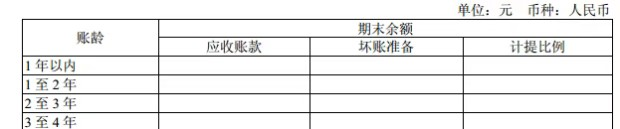
然后，由于公式的永续增长率对估值影响很大，所以，企业会不会增长，也是现金流折现法投资者关心的重要问题。但这个增长，不是计算增长率为2%、3%还是5%的问题，而是展望未来，预计这个企业的产品或服务会越来越强大，还是会越来越弱？只要能估计未来会比现在更好（好多少，不管），ok，不用去算永续增长部分的估值了，将成长看作价值的安全边际。按照不增长出价，以无风险回报率对应的pe倍数，给企业当前的自由现金毛估估一个价格上限，在此范围内尽力获取折扣即可。
综上所述，现金流折现公式的存在价值，是展示了投资思路：只投
①可见的未来，商业模式没有毁灭危险；
②在产业链中处于强势地位；
③竞争优势会保持强大甚至会越来越强大——的企业。
注意，不是说“只有”投这种企业才能赚到钱，而是说只有这类企业才比较适合现金流折现思路。至于其他企业，主要依赖相对估值法——甚至格老的烟蒂投资大法，实际上也更接近相对估值，只不过他拿资产重置价值来作为“可比公司”，或者类似风投依赖的“估值就是估人——投资就是投人”思路。这些同样可能赚到钱，只是它们不属于现金流折现思维的江湖。
有朋友后台留言问：老唐，你说你的目标是三年后15倍市盈率卖出赚100%，为什么国投15倍pe的时候，你没卖啊？——继续夸，好问题。只是事实略有出入。去看雪球组合#老唐实盘#就知道，我目前持有的国投，最早一笔是2016年1月11日用川投换进来的。忘记了买入价，查了一下K线，2016年1月11日，国投介于6.72-7.24之间，川投介于9.14-9.7元之间，大体就是这个区间换的。
至于川投，正好我雪球上记录过这笔交易，是在2014年将之前持有的国投在10.48元卖出后，换进来的，成交价19.92元（经历了10送10和之后的10派2.7元，折合目前的9.69元）。当然，很遗憾，10.48卖出国投之后，最高涨到过15.16元——这算是厘清事实，以后有空谈公司分析的时候，老唐再聊搬砖的思考路径。此处先说这个15pe的问题。
与事实不符，但无损问题的价值。不如我替换一下问题，改成：老唐，你说你的目标是三年后15倍市盈率卖出赚100%，为什么你2013年在雪球开始鼓吹的茅台，复权价已经从不足100元，涨到300+了，市盈率现在已经20多倍了，你也没卖啊？
这是关于估值的另一个误区。回看一下前面谈我的粗暴估值法原文“我的估值法很简单，两句话：①三年后15倍市盈率卖出能获利100%，我就会买；②高杠杆企业打7折。”——注意，我说的是什么情况下，我会买。但后面并没有半句：“15倍pe我会卖出”。
那么卖出问题如何解决呢？
关于卖出的问题，各流派解决的方法很多，甚至于江湖流传“会买是徒弟，会卖是师傅”的说法。对于这些方法，老唐没有能力一一评价，只是分享一下自己的思路，不见得就是正确答案，仅供参考。对我来说，买入和卖出是同一套方法，同样的体系，同属于现金流折现体系。包装成高大上文章的话，可以从Roe说起，写上万吧字，但套用老唐简单粗暴、通俗易懂的文风的话，只要两句话：
投资不存在卖出的问题，只是买入股票（房产、黄金、商品……）和买入货币的决策区别；
无法显著比较出两种决策差异的时候，那就当懒鬼不要动好了。If it's not broken, don't fix it——Mengdaier
认得出来Mengdaier这么高大上的名字是谁吗？哈哈，逗个乐，是欧元之父、提出蒙代尔三角的经济学大师 Robert A. Mundell的拼音，坏笑ing——！
@崔华涛：谈一下我对《估值的误区2》中“投资不存在卖出的问题，只是买入股票（房产、黄金、商品……）和买入货币的决策区别；”的理解： 买入货币的优点是不亏损，那卖出股票的决策依据就是未来大概率股价会下跌。
股价＝pe*eps ，那股价下跌有多种情况，但是有几种情况我们是有可能预期的：
1、收益变化不大，pe已明显高估，未来大概率下降。如果货币的无风险理财收益为2％，则pe在50倍以上就要卖出了。
2、收益将下滑，意味着基本面发生了不利变化，卖出。
3、戴维斯双杀，更要卖出。而其他情况，尤其是短期预测估值和收益变化，超出大部分人的能力范围，还是don't fix it
这条模糊处较多，老唐要补充几点
①买入货币并非不亏损。相反，买入货币是100%确定亏损的。只是时间跨度较长，幅度较小，一般人容易名义数字蒙蔽。1990年老唐工资104元，拿回家40，自己留64，还能隔日吃一回肉。如果老唐将60元货币保留到今天，能买两斤排骨不？
在沃顿商学院教授杰米里·西格尔的传世巨著《股市长线法宝》及《投资者的未来》里，曾将其研究结果汇集成一张神图。很多投资（ji）者都是被这张图震醒的，我把它放在这儿，各位试试看，有没有一种醍醐灌顶的感觉：
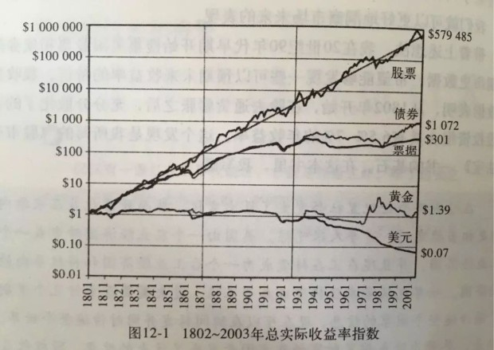
长期看，持有货币是包输的，是确定亏损的。期间“获利”是短期的逆势而为、刀头舔血所得，就好比下跌过程中打反弹的获利，一不小心就“赢颗糖、输间厂”。
长期看，持有股票的所有人加总是包赢的，所有人都是水位上涨过程中池塘里的鸭，你只要静静地待着（做到平均数），即可获取著名的“西格尔常数”利润——股权平均长期收益高于通胀6.5%—7%——当然，如何做到平均数以及超越平均数，是另一个话题。
不仅有上面那张神图，西格尔的研究还发现：即便横跨大萧条和第二次世界大战的1929——1954的半个世纪里，sp500的收益率依然远高于债券。资本市场最为悲惨的25年，假如你选择在大萧条前的巅峰时刻进入（没有比这更烂的择时了吧？），1万元投债券25年后变10700元，如果投sp500股指变44400元。
②说“卖出股票的决策依据就是未来大概率股价会下跌”这句话，可以说对，也可以说不对。因为事实上老唐想表述的是“该股票的回报率已经远低于货币（或其他选择）了，就会买入货币/其他选择。至于该股票的价格是不是会跌，实际上并不在考虑范围内，就好比巴菲特十几元卖出中石油后，他也没想到中石油还会翻几倍一样。
但要说“大概率”呢，也对。高估的东西的确是大概率会回归无风险收益率，是大概率会跌——但一定需要提醒自己，即便我们已知硬币有70%概率出人头，并不意味着它接下来就一定出人头，甚至并不能保证它接下里的10次里，就一定会有5次以上的人头。
●○●
@安逸：实际是比较后哪个更高估。不管是股票之间还是股票与货币之间。
@sven：股票和货币都可以现金流折现，所以不管是买入和卖出其实都是比较未来现金流折现，保留未来现金流折现较高的品种。
两位是线下朋友吗？感觉是“一个意思、各自表述”。都对。
●○●
@悠闲钦差：卖出股票的三个条件，公司经营恶化，股票估值明显高估，有性价比更高的标的。那么这第一句话大概涵义就是我们持有的标的起码收益率要覆盖掉机会成本，无论持有的是股票，黄金，商品，当他们未来收益率很可能低于货币，那么就只能持有货币，反过来如果货币收益率不如其他，那么就持有其他。
第二句话，如果东西没坏，就别主动修他。第二句话的涵义，坦白讲没领悟到精髓，尝试理解一下：如果持有资产和持有货币未来收益率基本一致，那么持有谁都一样，既然如此，就少动吧，少动总比多动犯错少；如果着实判断不了谁高谁低，那么也少动吧，因为多动出错的概率更高，等到自己能看得清的时候，再动也完全来得及。期待唐师父揭晓答案。
第一段很好。第二段我大概这么解释一下吧：如果无法显著比较出两种决策的差异时，要么说明回报率差异不够大，要么说明你对其中某一种的前景还不够确定。如果是前者，因为市场先生经常过度反应的，如果差异不大，很可能未来还是个随机变动；如果是后一种，那完全可以暂时将财富继续保留在原有的、自己确定性比较大的资产上面。只到自己比较确定的时候，或者差异大到可以一眼看出胖瘦的时候再动。至少，也省下了交易费用，对不？
●○●
@jinking：是不是可以这样理解:股票有股息的收益，货币有利息的收益，只要前者明显优于后者就一直持有，前后差不多的时候就要考虑公司优质不优质了，前者明显低于后者果断卖出寻找新的优质公司。记得您雪球以前的签名是牛市是投资者的风落，风落应该就是额外奖励吧，牛市股价升高，股息相对就变少了，和货币利息比不再有优势，就到了考虑卖出的时侯
总体来说，是的，就是酱紫的。小瑕疵是，用“股息”替代现金流折现思路，并不完全合适。举个例子：巴神的剥壳虾公司有史以来就只发过一次股息，怎么比呢？你可以再深入想想……
●○●
@芦国刚：最后一篇文章大体上这样理解：茅台如果价值4500亿，但是因为像他这样好的企业目前A股市场上很难再找到，你就是把它在4500亿卖掉。
1.你有可能这个价位买不回来；
2.你也有可能买成别的套住就是茅台回调你也没钱买了；
3.你一卖茅台大跌然后超低买回。这就看人品看运气了，但是问题的关键这是一只再也找不到的好东西你就愿意这么样去玩吗？我是不愿意！
但是如果在2017年价格上涨到8000亿那就要跑路了。总言之在先确定好东西的前提下低估买高估卖。这一高一低说来容易做来嘛！呵呵。
没错。一家公司在合理估值区间，投资者是走是留，都有道理的，这部分可能更偏向于艺术吧！
●○●
@赵立成：选择买入货币，应该发生在股票提供的roe已经低于市场的无风险收益率了。比如无风险收益率按现在的理财产品保本来算4%，即持有现金的pe是25倍。当市场给予的股票估值高于25倍时，就应该卖出股票而选择货币。老唐你说的15倍pe卖出，是建立在无风险利率是6.5%的基础上测算出来的。至于茅台这个印钞机，除了roe高以外，每年还有一定的增长，再加上大消费高端白酒有品牌优势和涨价能力，天然抵御通胀，理应享受溢价，15倍pe卖出肯定不划算。
@xwl：关于估值误区二，我的理解是这样的：
1、持有股权是投资，持有现金也是投资；
2、是否选择某种投资，是由它的未来现金流的现值决定的；
3、当前投资是否转换为另一种投资，需要比较两种方式的未来现金流现值；
4、两种方式的未来现金流现值差别不明显时，选择持有不变。不知我理解对不对？
@单骑走千里：把现金及其等价物也看作是一种投资品，当原投资品因为某些原因（高估、变质等），导致未来的回报率不如现金及其等价物时，就可以转换。另外，我觉得卖出其实是一个挺自由的事，大部分人纠结卖点是因为总想寻找最高点，总想吃全鱼的贪婪心理导致的。
没错，你们三位说的都对，老唐也没啥需要补充的了
●○●
@詹姆斯：投资永远是在买不同收益率的资产，如低收益率现金，高收益率股票等。找一个好的并且熟悉的股票不容易，pe不是个人能控制的，一动不如一静。只要不显著高估，守着符合自己期望收益率的一亩三分地就好。——点评：是的，差异不大的话，纯从心理角度，也是做熟不做生，感觉踏实一些。
是的，差异不大的话，纯从心理角度，也是做熟不做生，感觉更踏实些。
在投资活动中，核心动作不过是选股和持股两大部分，其中选股又是基础。选股，通常有两种路径，一种是自上而下，一种是自下而上。
自上而下，选择的路径是先选行业再选企业。思考路线是首先前瞻性地找出未来发展空间较大的行业，即先找到一张可能越来越大的饼；然后再寻找这个行业内某家或某几家优势企业，即找到未来在这张大饼中可能获取较大份额的企业。如果有条件的话，还可以在选择行业之前，加上选择国家，即首先选择那些经济增速可能较快的国家，然后才在这些国家内去选择发展空间大的行业。
这种方法，对投资者个人商业前瞻能力要求较高，投资者需要具备识别产业机会的能力，能大概率判断出未来某产业的腾飞。大部分成功的风险投资家，以及大部分成功的企业家，都是因为选择了正确的行业，站在了风口。你是一只天鹅，大风会助你翱翔天空；你是一头笨象，大风也会推你化身飞天神象。
另一种路径是自下而上，即首先寻找净资产收益率高的企业，然后分析企业获利能力强的原因，再挖掘该企业获利能力是否能维持或者扩大。这种方法一般从ROE入手。长时间维持更高的净资产收益率，意味着一家企业赚同样多的利润，用了更少的本钱。或者用了同样的本钱，赚到了更多的利润。——注意，与股价无关，与PB无关，因为股价高低，是股东之间的交易，并不直接改变企业经营中的可用资源。
同样多的投入，获取了更多的利润，这不科学！不符合资本逐利性特征。投资者可以沿着这个问题向下追问：凭什么？为什么同行没有抢走它的额外利润？——最终我们一定会发现某种没有被计算在报表净资产里面的特殊资源，然后恍然大悟：原来多出来的利润是这种资源带来的。
通常而言，这种资源，可能是能干的管理层，可能是很难模仿的独特产品，可能是品牌或其他无形资产，可能是地理条件或者其他原因造成的成本优势，可能是规模门槛，可能是客户离开很麻烦的服务，可能是越多人用价值越大的网络效应，甚至可能是某种中国式关系……等等（备注：这部分内容推荐阅读帕特·多尔西的《巴菲特的护城河》一书。薄薄一本，不足200页，但很值得一读，老唐荐书里有）。
当投资者发现了这种独特的资源后，就可以展开思考：这种带来利润的资源，未来是能够保持乃至越来越强大，还是可能被其他行业或者本行业内同行削弱？——如果答案是前者，那我们就发现了一个优秀的潜在投资对象。
然而，大部分市场参与者难以通过这样的活动获取理想回报。原因嘛，是因为做这些研究需要花费大量时间，并且经常会出现研究后发现，绝大部分公司的特殊资源优势，很难确定会持续。真正能够保持乃至越来越强大竞争优势的企业，总是那么稀少。看上去投资者所做的大量研究似乎白费了，这相当令人沮丧，也相当令人感觉乏味。远不如预测市场涨跌有成就感——会有50%的成功率啊！如果加上人类大脑在进化过程中保留下来、过滤负面信息的自我保护功能，大部分人都能觉得自己的预测准确率起码能到70%。
而且，即便真的发现了能够保持甚至能够扩大竞争优势的企业，很可能你绝不是唯一一个发现的，更不是第一个发现的。市场中潜藏着大把的聪明人，你会发现这样的企业一般都不便宜，大多数时候市场已经给过那种特殊资源足够的估值。我们需要默默等待，默默忍耐，等待市场给出误判的时候，才有机会将其收入怀中——这很枯燥，让很多人感觉无聊，而人性本就求新求变。
仅仅与枯燥作战，就足够淘汰80%的参与者了。在市场里待过一段时间的人，都会知道：股市里最难的不是买卖，而是什么也不做，就静静地看股价上蹿下跳。
所以，市场长期的赢家总是少数，多数人只是在快乐的“新”和“变”的愉悦刺激中，在高达“70%”以上的预测准确率中，付费完成了自己的娱乐活动——所有说投资很容易的人，都忘记了这里集中着最多的聪明人，都想在最快的时间里，用最少的金钱获取最大的收益，竞争比其他行业只强不弱。尤其是进入门槛还那么低，怎么可能竞争弱呢？
自下而上选股，还有一种高胜算策略，就是一篮子低pb或低pe策略，以后有机会又聊。
股票带给我们的回报，主要体现在股价的变化上（股息因素可以反向除权，加回到股价上观察）。而股价P=市盈率PE×每股盈利Eps。这是从市盈率的公式PE=P/E转换而来的数学公式，是套套逻辑，永不会错。从计算意义上说，没什么用，但它提供了一个思考角度。
为了忽略公司股本送配等因素的干扰，可以将上面的公式前后都乘以总股本，变成总量概念，即：公司市值=市盈率×净利润。 由这个公式，我们得知，股价（公司市值）变化有两个源头，一个是市盈率的变化，一个是净利润的变化。如果将这两个因素的组合，可得矩阵如下：
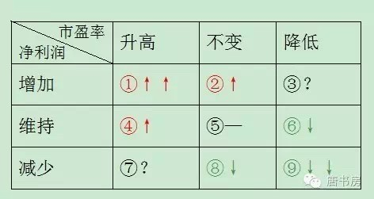
这张简单的表格，可以促使我们思考：钱从哪里来，我准备去赚哪一部分？钱从哪里来？很明显，①②④就是来钱之处，其中尤以①最过瘾，即所谓戴维斯双击区域，而⑥⑧⑨比较惨，属于送财童子。你准备去赚哪部分钱呢？换个说法，在这个九宫格里，你准备脚踏何处安身立命？
以老唐观察，市场参与者主要有三种选择类型：
①来股市花钱打发时间的。大部分人属于这一类，没有自己的投资体系，不知道自己要在哪里安身立命，将股市投资视为博彩，主要依赖别人分享代码或者干脆跟着感觉走，输赢听天由命。当然，天，还是很厚道的，一般是求仁得仁：钱花了，时间打发了，结束。这里的别人，主要包括亲朋好友、传说高手、网络神人、电视股评、券商员工、媒体写手等；
②赚取市盈率变化的钱。或由于持股期限短（以月或日为单位），一般预期企业利润不会发生大的变动，或对企业利润变化持不可知态度，主要意图站在④位置，获取市场情绪变化导致的市盈率升高带来的股价增长利润。此类还可分为AB两种：
A型，侧重选择市盈率低于甚至是远低于市场平均水平，或市盈率低于甚至是远低于该公司历史平均水平，意图获取市盈率回归市场平均水平或该公司历史平均水平，带来的股价变化利润。市场上常见的师从格雷厄姆、施洛斯、邓普顿等人，以及网格交易派、以PE位置来决定对某些指数或ETF投资仓位的，指导思想大体都属于本类。主要特点是依赖低估、分散和常识，不追求局部得失，乐意承受概率损失，获取总体上的回归利润；（回归，还记得老唐前面谈过的15pe那篇文章吗？）
B型，不在意当前市盈率高低，依赖某种判断，认为未来市盈率会提升的，意图获取市盈率升高带来的股价变化。市场常见的技术图表分析流派——无论是跟随派或逆转派，以及预测和追逐基本面热点的流派——新闻联播党和宏观牛熊党，基本属于这一类。B类也是网络上最容易受到追捧、最多股神故事、最容易换来粉丝金钱和人气的类型；
③赚取企业净利润变化的钱。可分为CD两种类型。
C型，所谓价值投资者，以伴随企业成长为核心，以收获市盈率变化为意外。又可大略的分为当下选择低市盈率、更强调安全边际的所谓“纯正夹头”，和更注重企业未来成长、在市盈率方面放的比较松的成长股投资者两种。其目标是占领①和②区间，特点是注重对行业前景、企业财报及同行竞争等领域的深度研究；
D型，重组或逆转股投资者，以企业利润水平即将发生根本性逆转为前提，实施投资。这类投资，专业预判和灵通消息兼而有之。所谓专业预判，指对企业重组或行业逆转的可能性进行研究，通过广泛埋伏于具备重组或逆转可能的目标企业中，守株待兔等待重组发生或者宏观环境的变化，获取企业净利润大幅变化带来的利润。所谓灵通消息，你懂的，每一桩重组案里面，几乎不可能少了内部人吃肉的机会，关键问题是你是否有资源交换到这样的消息，以及是否有能力承担交换的后果。
以上类型，就是老唐眼中的股市众生。对于这些模式，从获利概率上排列，我的排序是从大到小=ACDB①；从学习难度上排列，我的排序是从易到难=①DACB。
无论从全球以及中国的历史经验上看，或是从背后的逻辑支撑上推理，成功者主要集中在AC两类。至于选择走哪条路，我觉着每个人都应该好好花时间想透这个问题。推到尽想，打破砂锅问到底，理一理自己的爱好和优劣势，掂量掂量自己乐意在哪方面付出努力，哪方面可能取得对其他人的局部优势，自己究竟能靠什么在这个市场生存？要规避做送财童子的命运，你必须得在这个问题上花时间。真的，相信老唐，这问题，比几个涨停板的代码，重要一百倍。
老唐走的C。
好久没上雪球了。上午十点多，收到消息，说东博老股民清仓兴业银行，买入了动态市盈率170多倍创业板股票。老唐去雪球窥视了一下，发现正在展开东老真假大讨论，遂致电东老，做了个确认。对这件事儿，老唐同样惊讶，但没有什么看法要发表，毕竟投资是很私人的事情。倒是由此想起去年发在雪球的一次对话：信巴菲特，为什么不直接买巴菲特挑的股？应该是个有价值的、涉及投资体系的一个小讨论，转过来分享。读过的朋友，希望不介意被多刷屏一次。
原文如下，发表于2015年11月15日
△休谟：有一问题想讨论一下：既然我们如此深信巴菲特投资理念，也认为自身有许多知识上的局限导致对公司经营分析有偏差？为什么不直接相信巴菲特所投资的公司，跟随买入？比如比亚迪，而非要加大难度另投外物？这倒底是为什么？本人观点：抄袭巴菲特成功率远大于自已作主。
△老唐：1）夹头理念要求我们将信仰建立在「股票的内在价值是其生命周期内全部自由现金流的折现值」这一基础上（虽然它几乎不可能被精确计算），多加任何不需要的变量，都在违背我们所相信的理念。
因相信某人而买入，就是附加了其他变量，是对投资理念的违背。如果我们真心相信巴菲特的思想，我们就不能因巴菲特买入而买入。但是，学习他的分析，并因被他的分析说服而买入，是可以的；
2）除非你直接购买伯克希尔哈撒韦，否则你无法完全复制巴菲特的持股，单买其中任何一只或数只，背后仍然是悄悄附加了自己的判断。在自己不研究的情况下，作出的判断，必将使自己面对不利环境时，患得患失，被股价折磨；
3）你我的生命周期大概率比巴菲特长，为未来计，越早开始独立判断，越能让错误和教训发生在资本金较小、未来改错时间越长的时间段里。
△龙虎山畔客：抄袭巴菲特不是完全没有道理。投资者最头疼的一件事，就是对于管理层的判断。这些人是否理性，是否对得起小股东，会不会吃里扒外，是不是会过度粉饰数据（做假账的客气表达），如果做恶事有没有人制约他们。至少对于美国公司，巴菲特这个图章能很大程度上能化解这些担忧。余下的，就是计算买入价格相对公司的近景和远景，是否合适，这个判断已经排除了很多变量，就比较容易了。
△老唐：既然要计算买入价格相对于公司的近景和远景，这算是你自己的判断吧，不算抄袭。只是你因巴菲特入股而对公司估值的确定性加分了，这个我也会做的。
△休谟：我们相信巴菲特理念，但怀疑其买卖，逻辑上说不通。若不怀疑其买卖的话抄袭跟随应该顺理成章。若时机不对，有更低成本应当跟随，若公司不对，岂不是直接否定巴菲特理念？
△老唐：这个理解完全不对。我们不怀疑其买卖，只是当我们不清楚公司内在价值、没发现当前价格和内在价值之间有足够吸引我们的价差的时候，我们不投资，无论有谁买入了——这就是巴菲特投资理念。所以，如果你信巴菲特理念，你就绝不能因为巴菲特买入而买入，逻辑上通的一塌糊涂。当然，巴菲特的买入可以作为你对公司确定性的加分，这个是正常的。
△休谟：我们能力圈局限，不全相信或没有能力理解其买卖，于是我们不跟随，是这意思吧？但我想说：巴菲特对其买卖是能力圈的事，我们选择相信巴菲特，为何因为我们能力圈局限而怀疑或否定巴菲特对标的的能力圈？
我们虽然理解不好标的，但巴菲特是能力圈的事呀，我们为什么不好让巴菲特帮我做投资呢？我们最大的能力圈就是知道巴菲特会做投资。原理就像：巴菲特不会造可乐汽水，但他知道谁做得好，给那个人造可乐呀；同理，我们知道巴菲特投资是优等生，让他来帮我做投资呀，抄呀。
△老唐：你当然可以抄，直接买伯克希尔就是抄袭优等生啊！但我刚刚已经回复你了，问题在于你迫于法规或者能力或者金钱，仅仅挑了一只或者数只来抄，仓位配比和巴菲特又不同，这就不是信任巴菲特，是扭曲巴菲特。
举个咱这儿的案例，就好比巴菲特买了部分分级A，部分分级B，配比吃套利。而你抄了一只B买进，没买A，这是相信吗？不是。这是附加了自己的判断，基本是盲人骑瞎马了。最后赢钱了，加强骑瞎马的信心，死在下一回。输钱了，还要冤枉巴菲特个龟儿子选的啥破股嘛。
再说了，你跟着买入后，巴菲特没有义务随时给你通报他是否继续持股，如果他撤了你还在，股价大跌你肿么办？如果他还在，股价大跌，你怀疑他已经不在的时候，你又肿么办？最终你还不是疑神疑鬼折磨自己。
没有经过自己对企业价值的认真思考，将投资体系建立在对他人的信任上，然而，别忘了中文说法：盖棺定论，Things change，People change 。当变化来临的时候，你肿么办？心慌、气短、愤怒、不知所措，还是先割为敬？
追求低估，是格老门和巴神堂的共同原则，至于低估多少属于可以接受的程度，那更多的是投资艺术的一面，没什么好争议的。倒是对于什么是低估，两派有着根本的区别。格老门偏向于从资产角度看，最好远远低于资产重置价值，这为低估。巴神堂偏向于从收益角度看，最好付出的市价远低于未来从这个企业中可获取的现金，这为低估。的确，对后者的认识毕竟涉及未来，要稍微复杂一点。但前者也并非看看pb，看看pe就足够的。是简单一点，但也没简单多少。
有区别的，是财主讲的是“逆向平均赢”，我说的是“优势赢平均”。所谓“逆向平均赢”，包含三大核心要素，第一与市场逆行，第二尽可能分散，第三，站在大概率胜的一面。所谓“优势赢平均”，同样包含三大要素，第一选择具有明显竞争优势的企业，第二站在大概率胜的一面，第三获取超越市场平均水平的回报。
这里，区别主要有二，一是财主讲逆向，跟大多数人对着干，难题在于谁是大多数，怎么认识。比如今天雪球的银粉是不是大多数？现在要跟大多数人对着干，该买还是该卖？老唐则不考虑什么向不向，我自盯着价格价值差走，至于其他人，爱顺爱逆，请自便。这样的后果，也许我们有时跟市场同向，有时跟市场逆向，但那只是表象；区别之二，是财主讲平均赢，是指输输赢赢都有之后的总结算，获利。老唐说的是赢平均，指每次下注，都要有证据和逻辑证明回报率会高于平均回报率。
也不难理解，在同样低估的情况下，举例子说，假如老管和老黄在2013年某一时刻，同时决定用部分资金投入低估的白酒行业，此时，老管可能选择茅台+五粮液+泸州老窖+洋河股份+山西汾酒，老黄可能选择茅台+茅台+茅台+茅台+茅台。因为老管讲究不深研，选择用分散来弥补自己所知不深，分散买五星到一星，追求获取（5+4+3+2+1）/5=3的回报。而老黄追求深入研究，选择其中自己更理解的，经过研究认为更有竞争优势的企业，追求（5+5+5+5+5）/5=5的回报，结局就是如果老黄本来研究出茅台是5星，事实上茅台是5星、4星或3星，那么老黄赢老管；反之如果老黄认为茅台为5星，结果是2星、1星甚至零星，那么老黄输老管。
所以，老黄的成败，由他的研究结论和事实究竟有多大差异决定，如果他所研究的东东，品质超越平均水平，老黄收益不会差。而看懂一家企业究竟是不是高于行业平均水平，很难吗？也许吧！难者不会，会者不难。不付出，当然难。我觉着两边仅此而已，没什么高下之分可争的。各人选自己性格上可以接受，投资上能够坚持的体系就好。再次申明：格老门的投资体系很好。我知道它能赚钱，但就是学不了、做不到。
那为什么本帖评论区一边倒的赞同财主呢？我的理解，财主给了很多人一个懒惰的借口。似乎只要走上管财主指出的金光大道，只需要随便点点鼠标，看看哪个低估，然后买个1%或者2%的，反正每天此起彼伏的，东边不亮西边亮，天天有涨有跌的，心理比较容易接受。一种很简单，不费事，轻松即可拷贝，并且经过巨V（名字学自毛巨师）背书肯定能赚到钱的理论，多嘚！反而，类似老黄老唐那种，张嘴就要你先看企业及其竞争对手最近十年的财报，再来讨论这个企业……天哪，好难！
然而，财主真的那么轻松惬意吗？恐怕不是你看到的那么容易。凡是说投资容易的，一般都是郑渊洁一党：写童话的。没有哪种投资方法是容易的。管财主关注几百只股票，每天要把交易所所有公告全部看一遍，不仅关注国内的，关注香港的，还关注美帝的、德国的、巴西的……，不仅看公告，但凡看见能初步入眼的企业，还要看财报，要拆解企业资产，给各块资产估值，财主将其命名为“翻石头”。你希望学习财主的“低估逆向平均赢，排雷排千平常心”，只要学会怎么鉴别低估高估，怎么找到别人的方向，怎么看出地雷，怎么躲过老千，然后能够像财主一样勤奋去翻石头就行了。难不难？我不知道，反正老唐早说过：我明知道那样能赚钱，我自问做不到。
至于老黄，则属于扎硬寨打呆仗，一个行业一个行业的拱，一个企业一个企业的去熟悉。不追求自己成为多么顶尖的水平，只要超越市场参与者的平均认识就好。对一个行业研究越深，对行业内的信息变动越敏感，对企业跟踪需要做的事情就越少。也许老黄这辈子可能就研究了七八个行业，三五十家企业，前年在雪球说公司甲乙，今天在雪球上说公司甲乙丙，二十年后，说公司甲乙丙丁戊，很无趣，不新鲜。但又不要勾粉，要新鲜干什么呢？那谁不是说过嘛：“投资真的很简单：你只需要找到一些你掌握很多信息并能理解的公司，然后和这些公司绑在一起就行了。就是这样。”——注意，说的是“简单”，可不是“容易”。
补充一点：无数次地看到了有人用马化腾低价卖出腾讯股票来说研究企业之难，其实那只是证明了研究某类企业很难。有一尺高的栏，就别想着见栏就跳，这是所谓能力圈的核心要点。
上次老唐写《格老门与巴神堂之争》的时候，提到过我的投资理念也可以简化成口诀：低估优势赢平均，排雷排千平常心。今天咱们就来说说这个“优势赢平均”：什么样子的股票，才是具有优势，能够赢过平均水平的呢？
长期挣钱，日子过得滋润的企业，通常有些什么特征？
你头脑里一下子涌出来的答案可能很多，也很混乱。实际上前辈投资大师们早已给我们总结过了，他们的共同特征是：提供的产品或服务具有三个特性
①被需要； ②很难被替代； ③价格不受管制。
逻辑上也很容易推理，如果一家企业的产品或服务不被需要，那肯定没钱赚，结局早已草书于额头：死（不信，你现在生产竹制厕筹试试。啥是厕筹，别问老唐问度娘！）；如果一家企业的产品或服务没有什么差异性，很容易被替代，那最终结局就是价格战。杀敌一万、自损八千，生生便宜购买方，企业不死也只能苟活着；如果一家企业的产品或服务价格被管制，它必然很难获取高额利润。
比如就拿老唐前三大持仓茅台、国投、民生来说。首先，他们的产品或服务无疑都是被需要的，白酒、电力、资金及财富管理。
其次，就被替代的难易程度而言，茅台作为高端酱香酒，被替代的难度最高，竞争对手提供的产品与其有明显的口味差异性；国投的水电部分也比较难以替代，因为替代品的生产成本均远高于水电。火电部分则很容易被替代，近于无差异化产品；银行的资金及服务，被替代的难度介于水电之后，火电之前。一般来说，民生银行能提供的金钱或服务，绝大部分也能在其他银行获得。
最后，就价格管制而言，茅台酒价格无管制（2013年被发改委罚款，并非出厂价被管制，而是因为茅台公司限定经销商向消费者销售茅台酒的最低价格，违背垄断法）；银行服务价格以前大部分被管制，目前存贷款利率基本市场化，但仍接受央行的窗口指导，加上部分服务价格依然有管制，总体算轻度管制吧；国投的电力产品价格，则属于完全被管制，无论水电还是火电。
在被需要、难以替代、无价格管制的基础上，上世纪八十年代，哈佛商学院教授迈克尔·波特在其经典名著《竞争战略》一书中，细化并提出了著名的“波特五力模型”。他认为，每个行业中都存在着决定竞争规模和竞争惨烈度的五种力量，分别是进入壁垒、替代品威胁、买方议价能力、卖方议价能力以及现存竞争者之间的竞争。如下图：
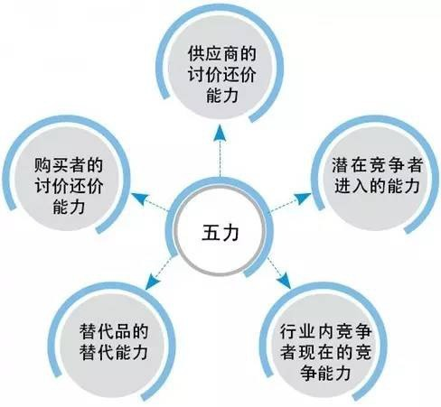
这个波特五力模型，是现代MBA、EMBA必修课。它对于投资者而言，同样重要。我们怎么去选“优势赢平均”的企业？简单的说，就是去找在这五个角度上尽可能多地占据优势的企业。
依然拿茅台举例。
进入壁垒：至少存在三大进入壁垒，一，白酒生产许可证，目前已经不批，潜在竞争者，只能通过收购现有白酒企业的许可证进入；二，酱香白酒生产周期长，需要资金大、对熟练酒师的数量和质量要求都很高；三，高档酱香白酒需要数十年老酒参与勾兑，竞争者无法形成有威胁的竞争规模（要么小量同质，要么大量低质）；
供应商议价能力：供应高料和小麦的农民，议价能力非常小，粮食种下去的时候，就已经间接和茅台签定了长期供应合同了；
购买者的议价能力：购买产品的经销商议价能力近于零。当市场零售价格上升后，茅台公司仅需一纸通知，即可变更出厂价，获取超额利润；
替代品的威胁：同档次内，没有可以完全替代茅台的酱香型白酒。近似替代品，有五粮液，1573，梦之蓝等，然而无论是自饮还是请客，替代品和茅台无论在口味习惯上，或是档次定位上，均有明显差距，只能作为备选；
行业内竞争程度：高端白酒市场处于差异化竞争状态，各自诉求不同的口味和情感定位，各自锁定自己的基本盘，全体处于高毛利状态，竞争程度较浅。
综上所述，经过波特五力模型分析，茅台公司在以上五个方面均占有竞争优势，可供公司选择的经营模式很多。
如果我们再拿这个模型，套一下国投、民生，你会发现他们在某一方面甚至某几方面，是处于竞争弱势的，因而，可供公司选择的经营模式有限。出于篇幅考虑，就不一一展开了，各位有兴趣可以自己试试。你也可以用这个模型套一套你持有的或者感兴趣的公司。
学习了“波特五力模型”后，当我们面对一个新接触企业时，就有了一套章法去应对，不至于老虎吃天--无处下爪。而且，通过这样一个个的拿模型去“生搬硬套”，我们不仅能够更加深刻的理解企业竞争力所在，也会慢慢发现，原来这世界真的存在一些“结果必然如此”的企业。当然，数量是稀少的，而且常常不便宜。所以巴菲特自己也在致股东信里写到：就我们自己的投资组合而言，除了少数几个“结果必然如此”的企业之外，我们也只能再添几个“大概率胜出”的公司了。什么样子的公司又是大概率胜出的公司呢？抽空再聊。
说到这些结果必然如此的企业，想起前几天雪球头条推送的编程浪子兄的一篇文章，题目叫《股市亏钱的21种姿势》，文中表达的意思和我10月11日发表的《你靠什么在股市生存？》一文类似。
浪子兄在文章中说到：决定我们每一笔投资的结果的关键因素有4个：买入时公司的质地和估值；卖出时公司的质地和估值。然后浪子按照优质、平庸、垃圾三种质地，和高估、合理、低估三种估值，作出了81种排列组合，并对其结果制表罗列（真耐心，赞），找出了导致亏损的21种情况，如下表：
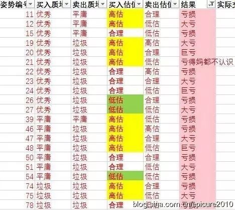
各位仔细看，亏损的情况有21种，其中10种是购买现有的平庸或垃圾公司造成的。这意味着，如果我们永远只将目光投向买入时就是优质的企业（未来可能优、可能平庸、也可能变垃圾），那么，亏损姿势缩减为11种。
在这11种亏损姿势中，又有5种情况是高估买入造成的。这5种情况又可以很轻松地用一条规则避免：凡是市盈率高于市场无风险利率倒数的一律不碰。即假如市场无风险利率为4%，所有当前市盈率高于25倍的股票，一律不碰。还剩几种亏损状态呢？6种，全部是由企业变质引起的。它们分别是：
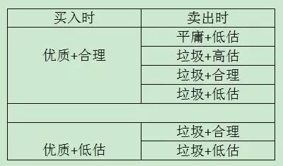
你仅仅使用两条最简单的规则——①只买过去和现在具有竞争优势的公司；②市盈率高于市场无风险利率倒数的一律不买——就站在了大概率赢的一面。躲过了21种赔钱姿势的15种，还需要担忧是能不能挣到钱吗？
因而，老唐的个人建议，要在股市里生存和获利，可以先以“求不败”的姿态入手：①只与波特五力模型显示具备某些竞争优势的企业为伍。拒绝垃圾股、题材股击鼓传花游戏暴利的诱惑；②拒绝在高市盈率水平买入；③认真跟踪持仓企业信息，对企业竞争优势受损、可能导致变质危险的动态保持敏感。
有人提了一个很有趣的问题，“据说巴菲特投资有两条规则：“规则一：绝对不可以赔钱。规则二：千万别忘了规则一”
比如巴菲特经常拿出来嘚瑟的富国银行。1989年，巴菲特买进了约85万股，每股买入成本约70美元，市盈率约7倍，市净率约1.5倍。1990年，股价大幅下跌，巴菲特继续买进400多万股，成本大约55美元/股。注意，前面70美元买进的已经“亏损”超过20%，“亏损额”超过千万美元了。这还没完，直到1992年，巴神依然在持续买进富国银行，而且买入价格仍然在70美元以下。直到1993年，富国银行股价飙升，巴菲特的这些股票才转为“盈利”状态。盈利也不多，总账算下来说翻了一倍多，年均也就20%上下吧！也就是说，巴神在富国银行这笔投资上面，持续“亏损”时间至少长达三年。
注意，这可是巴神特别有信心、特别有把握的一笔投资，他曾在2009年5月2日的股东大会上说过这样的话，可以证明他对富国银行的喜爱和了解程度：“如果我所有的资金只能买入一只股票,那我就全部买入富国银行。”
对于自己特别有信心的一笔投资，亏损长达三年，幅度超过20%，就这还说“规则一：绝对不可以赔钱。规则二：千万别忘了规则一”，这不是自己打脸的骗纸吗？如果说上述案例，巴神通过“摊低成本+死扛”熬过了大跌，最终好歹算是盈利了。还可以用“浮亏不算亏”来自慰的话，老唐可以再举两个彻头彻尾的亏损案例，一个非上市公司，一个上市公司。
①1993年，巴神看上了德克斯特鞋业公司，作价4.33亿（市盈率约15倍左右）收购了这家鞋业公司，并在1993年年报里盛赞“德克斯特是查理和我职业生涯中见过的最好的公司之一”（原文）。当时，巴神向德克斯特股东定向增发伯克希尔的股票25203股，按市价折合4.33亿完成了支付。很不幸，白纸黑字，巴芒俩大神被“职业生涯中见过的最好的公司”打脸了。这家公司在收购完成一年后，净利润就开始持续稳定的——下滑。原因嘛，主要是以我天朝为代表的发展中国家廉价鞋冲击。到1999年，德克斯特的年度净利润就只有1100万美元了（大约是1993年净利润的四成），2001年，干脆就爆出4500万美元的亏损。
2000年及之后的年报，巴神开始客气地批评自己，向股东承认错误了。批评的力度，伴随着德克斯特经营恶化的程度不断加强。到2007年，巴神直接在年报里把自己骂成一坨翔，他说：“我在1993年用价值4.33亿美元的伯克希尔股票买下了德克斯特鞋业。我当时认定的它具有的持续竟争优势，在后来短短几年内就消失了。但那只是开始，利用伯克希尔的股票，我严重扩大了这个错误。这一次花掉的不是４亿美元，而是35亿美元。实际上，我是用一个优秀公司——现在的价值是2200亿——的1.6%，换来一个毫无价值的烂公司。到目前为止，买进德克斯特公司是我最糟糕的决策。”
②2014年年报里，巴神自爆自己投资英国著名零售上市企业Tesco的经历：2012年前，花了23亿美元买进了Tesco公司股票4.15亿股，2014年清仓，割肉亏损合计4.44亿美元，亏损幅度近20%。并在此发出了他那句著名的感慨：如果你在厨房里发现了一只蟑螂，伴随着时间流逝，你一定会继续遇到这只蟑螂的亲戚们。这俩案例不是彻头彻尾的“赔钱”吗？所谓“绝对不可以赔钱”规则呢，哪里去了？
他表述的意思并不是要确保买在最低点。更确切的说，是巴神的“赔钱/亏损”概念，和炒股人士的“市价低于买入价=亏损”概念有区别而已。如果我们做过企业，就会很容易理解巴菲特心中的亏损概念。假设你家开了一家小饭馆，怎么样就是亏损了，怎么样就是盈利了呢？它是由隔壁小馆子或者同城其他饭馆的转让成交价决定的吗？不是。
盈利或者亏损，由你家小饭馆每天的流水，每天采购的原料，完成的销售，支付的成本等因素决定。简单的说，刨过人工、房租、材料、税收、装修及设备折旧等费用，每个月或者每年算下来还有现金剩余，你家小饭馆就有了会计意义上的盈利。如果这个现金剩余超过了你家这笔本钱不开饭馆可以选择的第二选项带来的回报（例如买成理财产品），你家小饭馆就有了投资意义上的盈利。
换成高大上的词汇就是：如果这家企业生命周期里预计创造的自由现金流，折现至今天，超过你付出的成本（包含投入及次优选项带来的回报），你就有投资意义上的盈利。这笔投资盈利还是亏损，与这家企业股权目前在其他人之间以什么价格成交无关。
就我个人理解，要点有三：
①要摆脱股价波动的影响。股市是产生股价的地方，它存在的价值是为了替你服务，而不是左右你的决定。巴菲特说：“对我而言，股市只是一个观察愚蠢行为的地方。”他多次谈到过的那个农场例子，透彻地表达了股价波动的本质以及投资者应该有的态度： 假如有个急脾气的人在我的农场旁边也有一块农场，他天天向我大声报告，他想以什么样的价格收购我的农场或是卖掉他的农场——而且这些价格还因他的情绪短时间内大幅变化——我怎能不趁机从他的疯狂行为中获利呢？假如他今日报价低的离谱，我又有点余钱，我会买下他的农场。假如他的报价高得荒唐，我可以把我的卖给他。
②关注资产的未来产出，选择哪些在稳定行业中，具有长期竞争优势的企业，以便于自己可以估算出其大概价值。只有能估算出大概价值，我们才可以通过与“隔壁农场主”的报价对比，确定自己是不是有便宜可捡。如果没有办法估算大概价值的企业，远离。因为你无法确认自己是否在出价的瞬间已经亏损。同时，在计算企业大致价值区间的时候，尽可能取保守值，拒绝为未来的成长出价——成长只能视为价值的安全边际。保证在不成长的情况下，自己的出价也有利可图，否则不参与。“股市的好处在于没有三振出局的规则，如果球不在你的舒适击打区，没有人强迫你必须出击”。
③一旦“亏损”，神也要认错。梦想是丰满的，现实是骨感的。巴神被戏称为神，却并非无所不能的真神。他看中的“持续竟争优势”也会“在后来短短几年内就消失了”。当我们发现原本看中的持续竞争优势正在或者已然消失的时候，当我们发现该行业或者该企业发生本质变化的时候，企业未来的自由现金流数量就会与我们的预测值发生巨大的偏差，若由此导致折现值低于当下可以卖出的市价时，无论当下处于炒股人士们认为的浮盈还是浮亏（即市价高于或低于买入成本价），对于巴菲特而言，“亏损”已经出现了。此时，巴神也要认错，正如Tesco一样，他说：“如果你发现自己已经在陷阱中，最重要的是想办法让自己不要继续下陷了”。
挺反人性的吧？是的，否则市场不会有那么多人赔钱。投资这条路，要说难，也真就难在这两条：
①人的本能，是用市价和买入价差额来衡量赚赔，“赚”了愉悦，“赔”了痛苦。而投资需要我们利用价格的极端波动，而不是让价格波动来操纵和影响我们的情绪和行为。
②投资需要我们懂得计算企业的价值，而不是错以为股价或市值就是这家企业的价值。——还记得老生常谈吗：投资只需要学习两节课……
是的，我们这些小散，回报最终主要还是靠股价变现。但很不幸，无数大师用铁的历史和逻辑证明了：盯着股价的，常被市场先生掏了腰包。盯着企业价值的，却常捡到市场先生的钱包。因为，股价必有机会等于或高于企业价值，是股市里（很想加“唯一”二字的，但为了不吵嘴，还是算了）确定会有兔子来撞死的树桩。
一个人，带着自己积累的财富进入股市，本着对自己负责的态度，首先应该思考：我是来寻开心的还是来赚钱的？如果是寻开心，当然怎么高兴怎么玩，玩了之后居然有赚，开心。玩了之后为开心付费，天经地义。但若目的是为了赚钱，那么可能需要继续思考：我的利润从哪里来？我凭什么认为自己可以赚？10月11日，老唐在书房发表了《你靠什么在股市生存》一文，谈到了ABCD四类不同类型的投资者，各自依据什么去获取股价变化带来的利润。今天，接着上回的话题聊“引发股价变化的基础是什么”。
大量前辈们的研究表明，股价变动的基础有三种来源：①企业经营增值；②公司高价增发新股或分拆下属子公司ipo融资；③投资者情绪的变化，引发股价的无序波动。前两项是市场参与者购买的目标资产发生了变动；第三项则是市场参与者之间以企业股权为筹码的博弈，与企业没有关系。下面分类聊。
一个国家的经济运行结果一般以GDP衡量。GDP是“国内生产总值”的缩写，它指一个国家一年内新增加的产品和服务的价值总和。正是这些新增加的产品和服务，提供了人们吃穿用住行以及社会扩大再生产所需。人类的生存和发展及其需求的不断增长，推动着GDP的持续发展。纵观人类发展史，特别是近现代史，可以清楚地做出判断，人类社会所创造的产品和服务总量是持续增长的。
国民经济是人的生产劳动成果，也由人及其组织分享。如果按照参与创造和分享GDP的主体区分，它由四个部分组成：一是中央政府和地方政府拿走的税费；二是参与GDP创造的个人的收入；三是非营利部门获得的捐赠和服务部门提供的中介服务费用；四是企业的盈利。除非某一特定时期的极端情况导致人类文明和经济倒退，否则，人类将长期维持GDP的持续增长（背后的原因，是人口增长、土地等资产的产出、交换和分工的深化及其带来的知识积累。这部分与投资关系不大，不扯远了）。
显然，一国所有企业作为一个总体，不仅能够分享利润，而且所分享的利润是持续增长的。在现代经济中，一国GDP的70％左右是由企业创造的，且由于企业的盈利能力高于个人和中间组织。所以，企业的生产经营成果不仅左右着一国GDP的结果，而且优于以GDP所反映的社会整体新创造的产品和服务价值（四个部分的加权平均值），投资于全部企业回报会高于GDP平均增长。
企业是追求收益的经济主体，没有收益，就没有企业长期存在的理由。另一方面，企业能够创造较高的收益，是因为企业这种经济组织比个人、家庭或政府有更低的交易费用支出——通过深化分工、专业化协作，以及对利润的激励和对损失的惩罚机制等原因（若有对这部分内容感兴趣的朋友，可以阅读诺奖得主、新制度经济学鼻祖罗纳德·科斯的《企业的性质》——这是他1991年被授予诺贝尔经济学奖的主要贡献）。
虽然上市公司不见得各个都是优秀企业，但由于有利润、盈利能力、后续融资可能、上市费用支出等多种条件的筛选，总体来说，上市公司收益水平高于全社会所有企业平均水平。无论是中国证券市场20多年的运行情况，还是发达国家更长时间的实践，都证明了这一点。有研究表明，1995－2014年的20年跨度里，天朝全部企业的净资产收益率（ROE）保持着年均近10%的水平，而同期上市公司的净资产收益率则实现了年均大于12%的水平（别小看2%的收益率差距，20年时间里，12%收益率资产赚到的利润是10%资产所获利润的150%+）。这意味着，如果买下全部上市公司，将能够获得超越全社会企业平均收益水平的经营收益。
接下来的推理更简单了，所有上市公司中净资产收益率高于12%的企业，其盈利能力会高于上市公司平均。哈哈，这其实是一句废话，但往往被人忽略。这句废话意味着，如果通通都按照净资产买下所有ROE＞12%的企业，长期来看，这些企业将赚到高于上市公司整体，更高于全社会整体的利润——这其实就是巴菲特投资框架的全部奥秘。
巴菲特思想被太多人弄玄乎了。他只不过认为：
1）一个优秀的企业，能跑赢社会财富平均增长速度。就好比班上的前三名成绩会高过全班平均成绩一样明显；
2）如果能够能以合理乃至偏低的价格参股这些优秀企业，长期看，财富增长速度也会同样超过社会平均增长速度。古今中外有不计其数的成功商人，都这么干的，毫不神秘、也不难懂；
3）他找到市场先生这个经常提供更好交易价格的蠢对手；
4）他很早就发现并利用了保险公司这个资金杠杆。于是，股神练成了。
对我们而言，第4条可能机会很少，但懂了前三条，专心寻找优秀企业，等待合理或偏低的价格，也许你永远成不了巴菲特，但你也成不了穷鬼。完毕。
持有上市公司股票，还有一项额外的利润来源，那就是上市公司的融资权利。当上市公司以高于净资产的价格向其他股东增发新股，或者按照高于净资产的价格拆分某部分资产独立上市融资，这些通常被称为圈钱的行为，如果我们是股东，就是我们圈别人的钱来增加自己拥有的企业净资产。
但必须要补充一点，上面说高于净资产值融资会增加企业净资产，但并非意味着高于净资产融资，老股东就是划算的。比如老唐就曾经呼吁反对过国投电力7.95元向大股东增发（当时股价约7元）。国投每股净资产4元出头，7.95元增发的确增加了企业净资产，但却并非增加其他股东的利益。因为这个4元，其盈利能力对应的价值高于7.95元，如果大股东想7.95元要，完全可以到市场去买其他对国投估值低于7.95元者手里的股票，这样就不需要强迫其他股东跟着出让股权。
也许国投这个案例还不够明显，另外假设一个对比悬殊的例子来说明。茅台2013年市价100元的时候，每股净资产约40元，总股本10.38亿。假如当时茅台意图向某新股东增发3亿股，每股120元（新股东投入360亿，总股本变成13.38亿股），不仅是净资产的3倍，也高于市价20%。如果孤立的以增加净资产就占便宜的角度看，似乎120元定向增发挺划算，应该投赞成票。
然而，从公司所有权角度看，老股东让渡了约22.5%的公司所有权给新股东；从净利润角度看，2013至2016年，茅台净利润总和近630亿，新股东拥有了其中的约142亿；从分红角度看，4年里新股东合计收到现金分红约58亿（假设2016年分红85亿，4年累计现金分红近260亿）；从市值角度看，今天4000多亿市值，新股东占有其中的900多亿……不管从哪个角度看，新股东回报都高的惊人。这些本该属于老股东所拥有的收益，就通过“高”价增发的把戏被新股东拿走了。
以上题外话，想说明一个道理，高于净资产的融资会增加企业净资产，但不一定对老股东有利。只有明显高于企业内在价值的融资，才会增加老股东利益。
在A股市场，高价发新股或者增发新股比较常见，极端形式就是IPO上市，给原老股东带来巨大的财富。拆分旗下资产或子公司独立上市，虽然国内还比较少见，但道理上就是将一块资产拨出来高价卖掉部分股权。这些很容易理解，老唐就不啰嗦了。
股市最诱惑人的，恰恰是这个短期内的无序波动。之所以说它是“无序”，因为自股市诞生几百年来，无数顶级聪明人都在花费心血，力图找到股价波动的规律。只要找到一种把握股价波动的方法，哪怕每个月有一次高抛低吸获利10%的能力，就能靠10万本金，在10年变成约百亿净资产富豪，登上中国福布斯排行榜前100名。然而，无数理论和实践，都证明人类没有能力掌握股价的短期波动——至少截止目前没有这个能力。
以上三个利润来源中，前两个因素整体是获利的，而且因为第二个因素的原因，获利率会高于上市公司平均净资产收益率，这个是确定的。第三项追逐短期波动的人，因为印花税和佣金的存在，整体是亏损的，这也是确定的：按照2015年254万亿交易量，0.1%印花税和万2.5佣金计算，净亏损3175亿。以中登公司披露的2015年底共计5077万位持仓者计算（一个身份证无论几个账户，在中登都算一个），人均亏损超过6000元。当然，其中必然有少部分人因为好运气、内幕消息或者其他某些因素，收益率高于平均值，表现为获利甚至是暴利。
因此，目标获取前两项利润来源，你位于水面不断上升的池塘里。如果智商和知识是平均水平，你就能确定性获取略高于GDP增长的收益率；如果你还能略高于平均水平，那就能获取超额回报；即便是略差于平均水平（只是不是差太狠）你依然能够保持正回报；只有在你的智商和知识水平大大落后于平均水平状态下，才可能导致亏损。
而意图获取第三种利润来源，至少要求你在所有参与博弈的人群里，无论能力、知识和运气都需要高于平均水平才能力保不亏。反之，无论你是等于平均或者落后于平均，都是额头一个大写的草书——死！不知道你是否有把握确定自己的能力知识和运气都高于平均水平，反正老唐没有——也不能说没有，20年前曾经有过。后来发现无论怎么熬更守夜、发粪涂墙，都只是随着运气和大势波动，无法获取确定性收益，时间稍微拉长，结局总是躲不开亏损和破产，然后就没这种自信了。
另外，博弈中的情绪变化，带来的股价无序波动，常常给意图获取前两种利润来源的人，带来额外惊喜——情绪性的股价大跌，常常给意图赚取企业经营增值者以远低于企业内在价值入股的机会，这又会是另一块搂草打兔子的捎带回报。
这个市场里，追逐短期波动的人，估摸着占9成以上，无论他/她是否自知，这种行动体现了自信是高于平均水平的，可以获取短期波动收益的，来市场是准备从对手（说不定就是你的亲朋、老师、前辈、同行、上司、邻居）那里抢钱的。这样的打算下，每天的波动，都代表着打劫成功或者成功被人打劫。一两天的波动，一两个涨跌停，代表着一次打劫与被劫的胜利或失败，自然就会随着股价波动而亢奋、得意、意气风发或苦恼、焦躁、不知所措。
如果是冲着企业经营增值和占新股东便宜来的，必然会以长期心态持有，以划算价格买入。因为企业的经营增值，要靠生产销售人员一天一天、一单一单去积累，不可能一锄头挖个金元宝，等待是天然本份。同样，高价增发或分拆上市这样钓凯子的好事儿，不可能俩礼拜来一次，它常常以年甚至以数年为单位的。
有了这样的心理准备，无序波动的随机价值（远低于内在价值的买入和远高于内在价值的卖出），自然就可以当作锦上添花、薅羊毛。有了就薅一把，没有那是本份。有了这样的认识，当你7折买入后，市价变成5折，你也不会惊慌失措，不会手忙脚乱。那只不过是更多便宜，更多羊毛，有能力就继续笑纳，没能力就放手让跟你持同样投资体系的同好去吃——虽然你并不知道他/她究竟是谁。
这样，屏幕上那些每天跳来跳去的波动，就成了你眼中的白骨精画皮，是无法掌控的幻象，是诱惑人走向迷蒙的法术。穿过这些表象，盯住股票背后的企业经营及融资特权，你终于可以放心地长吟一句：一切短期波动，如梦幻泡影，如露亦如电，应作如是观。然后，安安静静、舒舒服服地享受学习，享受研究，享受阅读，享受思考，享受金钱自己滚进来的乐趣了——所谓的“好心态”，就这样练成了。阿弥陀佛，善哉善哉！
附上一篇老唐于2014年8月22日发在雪球上的、《价值：公司金融的四大基石》一书作者写的股票市场价格波动模型，供大家思考股价波动的本质。
假设市场上有两类投资者A和B，交易一家企业的股票。A类投资者研究企业情况，推导出股票的内在价值，并依此决定买卖。一部分A类投资者认为股票的价值是40美元，一部分认为是50美元，还有一部分认为是60美元。
B类投资者则不对公司做研究，而是依据价格走势趋势决定买卖。当股票价格上升时，他们买入，认为股价将继续上升；当股价下跌时，他们卖出，认为股价将继续下跌。他们通过跟随趋势，意图通过较小的损失博取较大的收益。
假设交易开始的时候，股价为30美元。A类投资者开始买入，因为他们相信股票的价值为高于当前股价。他们的购买推高了股价。B类投资者发现股价上涨趋势，也开始买入股票，进一步推动股票价格的上涨。
越来越多的B类投资者加入购买行列，进一步带动上升势头。随着股价上升到40美元时，一部分A类投资者停止购买，但B类投资者及另一部分A类投资者继续购买。一旦股价上升到接近60美元，一些A类投资者可能认为股价已经被高估了（认为值40的那些），开始卖出。一旦股价超越60美元，所有的A类投资者都停止购买，其中许多开始抛售。这就减缓了上涨的势头，部分敏锐的B类投资者发现了这一点，他们也开始抛售。
最终卖盘力量超过了买盘，股价开始下滑。随着更多的B类投资者发现下跌势头，并参与到卖出行列，股价下滑越来越快。价格一直下降到接近A类投资者在此开始购买的那一点为止，下跌趋势止住并开始出现逆转。
这种模式持续进行，没有新的消息刺激，股价就在A类投资者设定的范围震荡。
现在我们假设公司宣布一个没有任何投资者预期到的新产品。A类投资者修正了对公司价值的估计，范围变为60~80美元，他们开始买进，从而使股价开始一个新的震荡周期，但是震荡范围更高了。
这个模型展示了股市的两个重要方面：
第一，即使没有关于公司的任何新信息，股价也会波动；
第二，A类投资者是决定股票价格水平的最终力量。
文章完了，请向自己提问并尝试回答：
我想赚什么钱？
我在股市的利润将从哪里来？
为此我需要付出什么，我将不得不承受什么？
老唐的观点很鲜明：宏观变量太多，任何变量都可以产生多种解读和预期，事后看逻辑鲜明，但对投资决策没任何帮助，只会误导投资人走入浪费生命、浪费金钱的死循环。
伟大的巴神也这样说过：关注宏观经济形势或者聆听其他人有关宏观经济或市场走向的预测，都是在浪费时间。实际上这样做还会很危险，因为它可能会模糊你的双眼，反而看不清正在发生的事情。
不看宏观，应该看什么呢？巴神如是说：聚焦你所关注资产的未来产出。如果你觉得很难对一项资产的未来产出做出哪怕是大致的估算，那就忘了它并让自己走开。没有人可以对所有项目都能做出准确的评估。无所不知是不需要的；大家只需要知道你自己正在干什么就可以了。
如果大家关注的只是资产价格的短期变化，那么这就是投机。投机没有什么不好，但是我知道我自己做不到能一直成功地投机，我也怀疑那些声称自己可以持续投机成功的人。
今天就分享一下，老唐阅读财报过程中思考的几个核心问题，以及如何确认自己看不懂或者看得懂某家公司。申明：在市场生存的方法很多，老唐以下观点，仅为基于个人喜好的粗浅认识，无意与其他投资方法区分高下，请勿误会。
在我眼中，除被动的指数投资之外的主动投资方法，主要就两种：以施洛斯为代表的纯正格式烟蒂投资法；以巴菲特芒格为代表的与优秀企业共同成长式投资法。至于投机的方法，那实在是数不胜数，鉴于老唐既没有能力、也没有魄力去参与投机，就不谈了——恰巧昨晚的伯克夏尔股东大会上，巴菲特还这样黑了两句：“投机是一个不太聪明的做法，是需要非常多的运气才能做成的事”，“市场的投机盛行，投资者反而有更多机会”。
以施洛斯为代表的纯正格式烟蒂投资法，强调分散买很多市值低于营运资金（由于市场环境变化，目前多数已经被迫放宽标准为低于净资产）的企业，从概率上获取估值回归的利润。这种投资方法，需要一生不停的翻找，并习惯跟自己不喜欢的人或公司携手前行，需要随时保持对市场动态的敏感。老唐不喜欢。既不喜欢与烂人烂公司为伍，也不喜欢永远要去花时间去翻找。跟踪好公司，不仅身心愉悦，而且一旦你研究进去以后，后续要做的工作，事实上是很少的。
关于纯正的格式投资法，巴菲特曾这样评价过：
我有个朋友，沃尔特·施洛斯，当年我们都为格雷厄姆打工。我一开始买股票就这么买的，买那些股价远远低于营运资金的股票，从定量分析上看非常便宜的股票，我把这种投资方法叫捡烟蒂。
在大街上四处溜达，看哪有烟蒂可捡。最后发现了一个，上面带着口水，看起来很恶心，但是还能抽一口，于是弯下腰把它捡起来，免费抽了一口。有的股票和别人扔的烟蒂一样。捡起来免费抽一口，扔掉，然后继续在大街上四处溜达，接着捡。一点都不体面。
捡烟蒂的投资方法管用，但是用这种方法买的都是资产回报率很低的生意。时间是好生意的朋友，烂生意的敌人。如果长期持有一个烂生意，就算买得再便宜，最后也只能取得很烂的收益。如果长期持有好生意，就算买得贵了一些，只要长期持有，还是会取得出色的收益。
我读财报，首先是排除一些不赚钱的和假赚钱的企业——方法在《手把手教你读财报》一书中都分享过了。为什么要排除这些企业呢？因为我笃信“如果你投资的公司本身不赚钱，你也很难赚到钱——巴菲特”，注意不是“你不可能赚钱”，而是说“你很难赚到钱”。
为什么我们所投资的公司如果不赚钱，我们就很难赚到钱呢？因为“股价（P）=市盈率（P/E）×每股净利润（E）”，或者用总量概念表达为“市值=市盈率×净利润”。如果净利润不能增长，股价的变化就只能寄托于市盈率的变化了。市盈率的变化，是推测市场参与者的情绪变化，而且是数以万计乃至更多参与者的情绪变化，我认为这远远地超过了我的能力范围（我习惯把净资产收益率低于一年定存利率两倍的企业归为不赚钱的企业）。
这当中有没有被错杀的呢？有。的确有很多现在不赚钱，但未来变成很赚钱的企业。但我认为这是天使投资人和风险投资人的领域，风险和利润都留给他们好了。投资人并不需要赚光所有的钱，我要去找的，是已经被历史证明了很能赚钱，且未来还将持续赚钱的企业。就好像在过去表现优秀的学生群体里寻找未来的优等生，而不是从今天的差生里去找未来的优等生。于是，我的注意力自然就集中在了“历史记录很赚钱”的企业群体中，并期望从他们中间找出“未来依然很赚钱”的。
历史记录很赚钱，这个很容易找。但从财报数据上看到一家公司很赚钱，而且赚的是真金白银，很少有应收账款或者只有与营业规模相匹配的应收账款，经营现金流入和投资现金流出也没有可疑之处，等等。此时，这家公司究竟我们看懂了没有呢？还没。我认为读懂一家公司的关键点，是从财报里理解该企业的商业模式和独特竞争力。换成通俗的表达就是：
①这家公司靠销售什么商品和服务获取利润？
②它的客户为何从它这里采购，而不选其他机构的商品或者服务？
③资本的天性是逐利。眼看这家公司坐享丰厚利润，为什么其他资本没有提供更高性价比的商品或服务，抢占了它的市场份额，或逼迫它降低利润空间呢？（更高性价比，即可以是同样质量/数量+更低价格，也可以是同样价格+更高质量/数量）
这三个问题，实际上就是找“公司究竟靠什么阻挡竞争对手”，这个“什么”就是投资理论书籍里常用的词语“护城河”。这些护城河可能是独特的服务、质量、成本，技术专利，转换成本或者所占据的优越位置。总之，总得有至少一样东西，是竞争对手需要非常高的代价才能获得，甚至是无论多高代价都无法获得的东西。
找到企业的护城河之后，代表看懂这家企业了吗？依然没有。历史上企业靠着这条河挡住了其他竞争者，但未来呢？竞争者有没有办法填平这条河，或者给这条河搭上桥，甚至用飞翔空降的方法越过这条护城河，直接进入企业的城堡呢？也就是说，你是否能够确定，这条护城河未来依然能够阻挡住其他竞争者的进攻？
这样我们就需要添加一条问题了，问题④：假设同行挟巨资，或者其他产业巨头挟巨资参与竞争，该公司能否保住乃至继续扩张自己的市场份额？
理念方面，没有秘密。巴菲特早就公布了自己的做法，他说：
我从那些简单的产品里寻找好生意。像甲骨文、莲花、微软这些公司，我搞不懂它们的护城河十年之后会怎样。盖茨是我遇到过的最优秀的商业奇才，微软也拥有巨大的领先优势，但我真不知道微软十年后会怎样，无法确切地知道微软的竞争对手十年后会怎样。
我知道口香糖生意十年后会怎样。互联网再怎么发展，都不会改变我们嚼口香糖的习惯，好像没什么能改变我们嚼口香糖的习惯。肯定会有更多新品种的口香糖出现，但白箭和黄箭会消失吗？不会。你给我10亿美元，让我去做口香糖生意，去挫挫箭牌的威风，我做不到。
我就是这么思考生意的。我自己设想，要是我有10亿美元，能伤着这家公司吗？给我100亿美元，让我在全球和可口可乐竞争，我能伤着可口可乐吗？我做不到。这样的生意是好生意。你要说给我一些钱，问我能不能伤着其他行业的一些公司，我知道怎么做。
我不喜欢很容易的生意，生意很容易，会招来竞争对手。我喜欢有护城河的生意。我希望拥有一座价值连城的城堡，守护城堡的公爵德才兼备。我希望这座城堡周围有宽广的护城河。
只要是好生意，别的什么东西都不重要。只要把生意看懂了，就能赚大钱。择时很容易掉坑里。只要是好生意，我就不管那些大事小事，也不考虑今年明年如何之类的问题。
好生意，你能看出来它将来会怎样，但是不知道会是什么时候。看一个生意，你就一门心思琢磨它将来会怎么样，别太纠结什么时候。把生意的将来能怎么样看透了，到底是什么时候，没多大关系。
最值得买的公司，是那些你觉得从数字上看很贵，舍不得买，但还是很想买的公司。这说明你太看好这家公司的产品了。这样的公司不是别人抽剩了、扔掉的烟蒂，而是让人难以抗拒的好生意。
结合巴神上面这几段话，想明白前面四个问题后，我觉着一家公司就基本可以归入“看得懂”的行列了。在看得懂的基础上，才能谈估值是多少的问题，才会涉及到多少钱值得入股的问题。否则，无论公式多么精细的估值，都是心理按摩、自我安慰。
让钱越来越多不是投资，真正的投资，是让你所拥有的购买力增加。套用巴神的话说：“投资是为了在未来更有能力消费而放弃今天的消费。”巴神觉悟了啥呢？老唐觉着大道无外乎两条：第一，股票不是拿来炒的，它代表着企业的一部分，其价值由所代表的企业价值决定；第二，市场报价是群体性冲动产物，受悲观或乐观情绪影响，人们会对股票背后的资产，给出过高或者过低的扭曲价格，因此，有效市场理论是虾扯蛋。这两点在后来被巴神演化为经典名言：投资只需要学习两门课，一是如何面对市场波动，二是学会给企业估值。
巴神想明白了以后，把天下的投资品分成了三大类：
第一类投资品，是现金等价物，包括银行存款、货币基金、债券等。这些资产表面上看起来很安全，但巴神认为，它们事实上是最危险的资产之一。原因嘛，当然是因为法定货币时代，现金及现金等价物是少数“购买力确定会不断减少的资产”，也就是说，一个投资者如果持有现金等价物，已经确定“包输”，差别只是输多输少的问题。
第二类投资品，是那些实际不产生任何收益的资产，但买家认为其他人未来会以更高的价格买走。巴神特意拿黄金举例，说全球黄金储量约17万吨，融化重铸的话，可以做成一个边长21米的立方体。这个立方体从地球上某处地底被挖出来，提炼融化后，再挖个洞埋起来，然后派一堆人站在周围守着（巴神后面说的这个洞，指的是银行的地下金库），如果让外星人看见，会百思不得其解，这帮地球人挖出来又埋进去的，玩什么幺蛾子呢？这个立方体永远不会产出任何东西，大家买它只是期望未来会有更多人会想要黄金。
按照巴神谈立方体时的金价（1750美元/盎司），这个立方体市价9.6万亿美元，用这笔钱，投资者可以买下美国所有的农田、16家相当于埃克森美孚石油的公司，还能剩下1万亿美元左右的零花钱。全美的农田每年都会生产出大量的玉米、小麦、棉花和其他作物，16家埃克森美孚每年分红就可达上千亿美元，不断地增加拥有者的购买能力。而17万吨黄金既不会规模膨胀，也不能创造任何产品，甚至你深情地抚摸她，她也不会对你回眸一笑，当然，也不会娇嗔一声“瞎摸啥呢，讨厌！”
不仅是黄金、艺术品、收藏品、古董等东西属于这一类的“投资品”，事实上，我们大A股大部分上市公司也是同类。他们的共同特点就是资产本身不产生回报或者产生的回报少的可怜。你如果买了，唯一的期望就是有更多的人想要它，从而抬升它的价格让你退出。透彻一点说，就是披着各色外衣的庞氏骗局，依靠后来者的本金给前面的人兑现利润，一旦后来者的数量减少，价格就出现“闪崩”。这恐怕也是很多正经人士认为炒股这件事不够正经的原因吧！
庞氏骗局中，一样有人赚到钱，正如索罗斯老师所说“世界经济史是一部基于假象和谎言的连续剧。要获得财富，做法就是认清其假象，投入其中，然后在假象被公众认识之前退出游戏！”，多么赤裸裸，多么精辟啊！不知道你读到这句话是什么感觉，反正老唐最初读到这句话，立刻站在镜子前，问里面那位唇红齿白/玉树临疯/腰缠游泳圈/一脸呆萌的中年胖子眼镜男：“你有什么能力，能够让你抢在众人之前进入，并在崩坍之前退出呢？”胖纸呆了很久，萌萌地回答：“不知道呢！”over，搞定。找不到自己的优势，还掺和进庞氏骗局里，那就是给索老师垫脚的。记得索老师说过，他改变决策的主要依据是背痛。我估计大家是听岔了，他说的不是他背痛，是被他踩的人喊叫背痛……一笑。
第三类投资品，是有生产力的资产，也就是前面巴神说的农地、像埃克森一样的公司。这些资产“能在通胀时期让产出保持自身的购买力价值”，巴神说，投资有生产力的资产，长期收益将轻松超越无生产力资产和货币资产。
第一类投资品包输；第二类投资品你需要找到接盘侠一定会来的理由；第三类投资品最靠谱，因为无论有没有人接手，它都会给你带来回报。而能带来回报，本身却能成为接盘侠必来的理由。特别强调一下，在第二类投资品中，接盘侠不是不会来，但如果我们将投资回报寄托于接盘侠犯傻，那么我们有很大概率成为那位犯傻的接盘侠。
很多人容易犯迷糊的，是看见第三类资产常常变成高价，而错以为第三类资产同样是靠接盘侠才能兑现回报。这是个严重的错误理念，足以误导整个投资体系的建立。为什么这么说呢？
以巴神为代表的第三类资产投资者，还真不是依赖接盘侠来获取回报的，虽然其表象上看，第三类资产也经常被抬高价格，甚至，也有疯狂的时候，巴神一样会就着可乐咬一口韭菜合子，这个我们也无须讳言。
资本的天性是它的逐利性，正所谓Money Never Sleeps 金钱永不眠。东城土豆两毛一斤，西城土豆八毛一斤，一定会有资本去买进东城土豆，到西城卖出，最终缩小两边土豆的差价。同样，若是盈利能力一样的资产，甲资产便宜、乙资产贵，同样必然会有资本买甲卖乙，这是不以人的意志为转移的经济规律。第三类资产之所以被抬高价格，原因恰恰在于它的高回报，而不是因为被抬高价格而产生了高回报。
让我们假设一个荒诞的例子，如果有一家经营上很赚钱的企业，它的股价就是不涨甚至一直跌，结果会怎样？正好雪球上的@宁静的冬日兄，曾在两年前举过一个这样的例子，老唐就不去搞数据，直接偷懒抄过来了。
宁静兄统计了泸州老窖的分红送配记录后发现，假如某倒霉鬼甲在1994年股市最高的9月里（大盘半年后腰斩），按照当月泸州老窖最高价格21.2元买入1万股，然后傻傻地拿到2015年初，期间到手现金分红累计有142万多，同时还拥有泸州老窖股票16.19万股。如果我们给宁静兄的数据补上2015年和2016年的分红方案，那么某甲至今拿到的现金红利合计超过170万，同时还拥有泸州老窖股票16.19万股。当然，16.19万股今天大约770万市值，我们就不去计算了，反正我们假设股票是一直跌的。我们只需要知道，它目前大概一年能带来15万多的红利，且依据老窖的情况，以后每年恐怕也很难大幅低于此数。
21.2万投入，22年间到手170万，未来每年应该还能至少获得十来万，这样一笔投资，依赖接盘侠了吗？没有，接盘侠最好永远不要来。事实上，宁静兄还做过另一个计算，假如老窖的股票自从买入后一直就不涨，而这位21.2元买进的某甲，每次收到分红后，又全部傻傻地买进了老窖的股票，某甲2015年仅分红就可以收到超过1800万元。我们甚至还可以设想，假如老窖的股票不但不涨，反而持续下跌了20年，那么，投资回报将会高的更加吓人。
Too good to be true，好的不像真的。是的，这样的回报是罕见的，为什么呢？前面说了，能挣钱的资产，就会有资本来争夺。这个争夺会抬高股价，从而降低了你的回报。注意，是其他抢购者抬高股价，降低了你的回报，而不是提高。这个过程，在不少价值投资者嘴里，表述为“讨厌牛市，喜欢熊市”，这常常被理解为“贱人就是矫情！”。如果你真的理解了宁静举的这个例子，再看到说喜欢熊市的人，就别骂人家贱人了。
这个案例的核心问题就是买了一家持续赚钱企业的股权，而不是相反。正好，前几天国信证券的一份报告里，研究员做过这样一个统计，他们筛选了连续三年roe＞15%和10%且资产负债率＜50%的上市公司，统计了这些企业自2016年熔断股灾发生以来，到2017年5月15日期间的股价表现，统计结果如下图
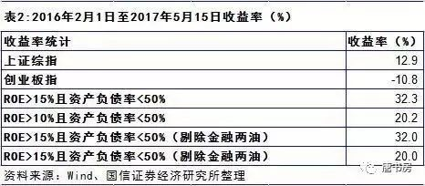
其中roe＞15%的股票，收益率32%；roe＞10%的股票，收益率20%。均大幅高于上证综指13%以及创业板-10%的表现。如果统计结果不是截止5月15日，而是截止今天，这些高roe股票的收益率只会更高，领先指数的幅度只会更大，因为传说这几天市场炒作“蓝筹概念”。
或许有人说这段时间太短了，不足以证明什么。国信证券还统计了从2007年到2016年连续十年ROE均大于10%的上市公司，这样的公司共有68家(不包括金融和两油)。从2007年3月底(上证指数3183点)到2017年5月15日(上证指数3090点)，这68个股票的平均涨幅是3.7倍，年化收益率高达14.0%，这还没算股息分红的回报，而同期上证指数是没有上涨的。
以老唐看，这个统计不完美。应该做个滚动五年的统计，统计前五年roe大于10%的，然后市价买入。每年年报出完以后筛选一次，五一过后做替换，看看至今是个什么情况。有兴趣的朋友，可以自己动手试试，看着自己亲手作出来的数据，再看看自己真实账户上同期的盈利情况，或许会对投资二字产生震撼性的新理解。
同样是这份报告里，还有一个统计，说2016年全部A股所有公司加总，净资产总和309422亿元，净利润总和是29589亿元，ROE是9.6%，而这些公司的总市值是547160亿元。这几个数据，大致可以告诉我们，假设将全部上市公司报表并表视为一家名叫“天朝上市股份有限公司”的公司，如果我们能以净资产值买下天朝上市有限公司，年回报就是9.6%，这个回报远远高于银行存款、货币基金或者债券等类现金资产。
将近3000家公司，我们有没有能力从中淘汰掉一些盈利能力明显拖后腿的公司呢？我觉着略加学习的人，都可以有的。假如我们能够确定某一家或者某几家企业，无论是由于所处行业的通用原因，还是企业个体独特的原因，总之，这家企业盈利能力将明显低于平均数，我们就淘汰掉它。这样，剩下的新“天朝上市”公司，带给我们的回报就会高于9.6%。通过一家家的淘汰筛选，类似企业的末尾淘汰制，投资回报率毫无疑问地会被提高。
或许选择好企业，难度稍微高一点，但在9.6%的回报基础上，排除那些明显比较烂的企业，应该就没那么难了吧！这也是查理.芒格喜欢讲的思路，“反过来想，总是反过来想”。选出好公司和排除烂公司，背后的逻辑是共通的。我们不仅可以从全是现金的账户出发，去选择好公司买入，同样也可以从满仓近3000家上市公司的角度出发，去淘汰烂公司。
不过，遗憾的是，资本不傻。实际上我们很难以净资产值买到“天朝上市”这家公司，它2016年底标出的卖价是547160亿元。好的，我们就用547160亿买下它，年回报率就是5.4%，市盈率18.5倍。这个5.4%的收益率和类现金资产相比如何？答案是依然高于类现金资产回报。同样，如果我们有能力将其中回报率最低的、能确定拖后腿的企业筛出来干掉，剩下的部分，回报率必然会高于5.4%。由此，我们是否需要怀疑一下所谓仓位管理的理念呢？
事实上，我个人的仓位和现金管理方式一直都很简单粗暴。除了预留家庭开支（现在一般留一年的）以外，在投资可调用资金的范围内，我没有仓位概念。我只将类现金资产视为普通投资品，一种市盈率大约30倍，净利润确定性100%，未来零成长的股票。我只需要拿它和其他股票比较确定性和收益率即可，凡是预期收益率等于或小于类现金资产的投资对象一律排除。套用上面的“天朝上市”概念说，大致就是将“天朝上市”下属近3000家子公司当中，收益率等于或小于类现金资产的那部分子公司的股权，换成类现金资产，此时，我们依然“满仓”，然后在“仓”里去继续做淘汰。这不是一个将“八成仓位”替换为“买入20%现金”的概念偷换，而是一种思考方式的变化，将类现金资产从度量衡标准转化为投资对象，将所谓半仓空仓等期盼股价下跌的行为，转化为收益率之间的比较行为。
推到尽想，如果没有收益率的比较在先，单纯持有类现金资产等待股价下跌的所谓仓位管理，本质上是支付对价，购买了一种看跌期权，赌某股权在特定时间段内会下跌。此时，类现金资产如同一台始终缓慢下降的电梯A，股权则像一台忽上忽下，幅度不定，但总体向上的电梯B。通过持有类现金资产来做仓位管理，就好似是待在电梯A，寄希望在B下降的更快那一瞬间，纵身一跃，从A蹦到B上，然后又在B从顶峰开始下降时，再跳回A里待着。
理想很丰满，现实很骨感，只要我们敢于承认我们无法预测短期股价的波动，便知道这是一种“投机”行为——至少对老唐这种笨笨来说，是超出个人能力的投机行为。这种罕有持续成功案例的作法之所以广受欢迎，我个人觉着可能是因为投资人被类现金资产的面值所迷惑，看上去“仿佛”没有付出什么成本。但只要我们记住通货膨胀的存在，记住类现金资产的包输特性，就知道持有它绝不是没有付出成本。简单的说，假如真实通胀-票面利率=4%，那么你通过空仓行为购买的看跌期权，年支付成本就是4%，到期没跌，或者没有跌到你的买入目标价格，你就损失了4%。
如果有一天，对门刘大妈神秘地告诉她学到了一套炒股包赚秘籍，秘籍一共四句话：“买后不赚钱坚决不卖；卖后不跌的更低坚决不买；买后跌继续加仓；哪笔加仓赚钱了就卖掉哪笔。”——你听后什么感觉？是包赚秘籍吗？恐怕稍有常识的人，都只会忍着笑感谢一下刘大妈了事。然而，很荒诞的是，这套招法若被所谓长线投资者使用，并冠以做T的名称，并信誓旦旦地用实盘收益来证明其有效性，就可能迷惑到不少朋友。
这套招法，本质上要么是看对（或蒙对）了短期股价波动，要么是一种自我心理按摩。看对（或蒙对）当然会赚到钱，但只要我们敢于承认自己没有能力预测短期股价波动，或者不可能一直有好运气蒙对，去赚这种钱，就是一个期望值为负的游戏。期望值为负值的游戏，即便是短期有钱收，很可能也只是替市场先生做做免费的保管员。别忘了，刘大妈秘籍也常赚钱的，甚至有可能在很长一段时间里持续赚钱。
如果放弃看对短期股价波动的自负，这种所谓做T，剩下的是什么呢？是买入后，如果持续下跌，则告诉自己做的是长线的价值投资，越跌的多越好；下跌后如果反弹，就将所谓低价买进来的筹码卖出，告诉自己赚钱了。事实上，除了你自己没有人在乎你卖出的究竟是低位补的那一笔，还是高位买进的那一笔。卖出的是哪一笔，有区别吗？没有。如果你将表述换成每次反弹，都将最低价买进数量保留，而将最高价买进的等量斩仓，实际账户数字丝毫没变，但听上去就是不是一下子就变愚蠢了，失去自我安慰作用？同样，卖出后，如果涨了，就自我安慰反正是赚钱卖了的，不亏。卖出后如果跌了，就开心无比，表示自己做T成功，捡到了差价。
这种做法，无外乎是一个价值投资的刘大爷（选股成功与否暂且不论）和一个买到秘籍的刘大妈合体了。如果我们同意刘大妈的秘籍是明显愚蠢的，那么她和刘大爷捆在一起，也一定不会是刘大爷plus提升版。当然，以信息优势或者潜在事件，或者围绕企业估值高低区间进行的高抛低吸，虽然形式上也是波段操作，但不在上文批驳范围内。
最后，让我们重温投资界那位最成功的老人所言来作为收场：
我觉得投机是一个不太聪明的做法，你需要非常多的运气才能做成这件事。当然，投机行为的盛行，会给投资者更多的机会——沃伦·巴菲特。
我从来没有见过能预测市场走势的人。对于未来一年股市的走势，我们不做任何预测。我们过去不会、现在不会、将来也不会预测——沃伦·巴菲特。
1）据说股市是一个“有经验的人，用经验换金钱。没经验的人，用金钱换经验”的地方，但通常来讲，象老唐这种用“自己的金钱”换经验的人，属于脑袋不太够用的。聪明人应该用别人的经验，换来金钱。既然“聪明的投资者都在雪球”，那么这条帖子里列着的惨痛经验，那就是一堆钱胚子。南来的、北往的、投机的、摸狗的，但凡缺经验的朋友，一笑而过就划不来了。
2）靠企业自身现金流拿回回报的投资者，基本无需考虑股价。市场出高价，是投资者的意外盈利，是风落之财。有，令人高兴。无，也不影响投资决定。这个话题，今天不谈。
3）期望靠股票价格差价获利的朋友，总还是需要知道股价是如何涨跌的。绝对正确的公式是“股价=每股收益*市盈率”——无论是今天的股价，还是未来某日的股价。所以，无论你用什么手段获利，总也离不开预测“每股收益”和/或“市盈率”。如果你对这两个东西都全无概念，就敢下注，基本注定关灯吃面的结局；
4）今天的每股收益和市盈率，都是确定的数字，没有什么好计算的，重点是未来某日的。以老唐几十年的人生经验，得出一个绝密经验：每股收益和市盈率，未来只会：变大，变小，不变。（一笑。臭鸡蛋就别浪费了）
5）依据上条绝密经验，未来的每股收益和市盈率之间，会有九种组合。能不能赚到钱，取决于你今天下注在什么组合上，也取决于你在什么组合卖出。
6）每股收益的变化，是需要你大量阅读企业年报，同行年报，关注企业产品的生产和销售，这是需要做大量作业的。@东博老股民 演讲时曾谈到“能力比理念更重要”。老唐理解，这个能力，指得就是对企业商业模式的理解能力，对企业、企业上下游及其竞争对手的了解能力。如果你一旦喜欢上这个能力的练习，恭喜你，你永远也不会觉得无聊，只会觉得时间不够用。任何一个行业，都够你花几年功夫。这方面，雪球上有拜不完的老师，各自对某个行业或企业，有自己的认识，自己挖掘吧。这也是在老唐看来，雪球最优吸引力的部分。
7）对企业、行业的研究，是为了避开每股盈利会下滑的企业。下滑的每股盈利，除非遇到上涨的市盈率，还有几分机会不赔钱。否则，遇到下滑的、或者持平的市盈率变化，都只能关灯吃面。这赢面就太小了，拿金钱买经验的概率大，不碰也罢。
8）市盈率，代表着市场上千千万万人乐观情绪与悲观情绪的博弈。问问自己，预测自己熟人的情绪变化容易吗？如果不容易，再仔细想想，预测全国那么多不认识的人，他们的悲观乐观，恐惧还是贪婪，容易吗？老唐觉得这几乎是个不可能完成的任务。好像牛顿也是这么觉得的，牛sir说过“我可以预测天体运动的规律，却无法预测人性的疯狂”。
9）那怎么办呢？老唐采用自认愚蠢法：永远选当前市盈率低的股票。当前市盈率低的股票，在市盈率和每股收益的九种变化组合中，去掉了市盈率下滑对应的三种可能。剩下的六种可能里，只有市盈率持平*每股收益下降，才有可能让你赔钱。这将大大增加在市场里获利的可能。以老唐个人有限的关注来看，这方面经验丰富的球友有：@佐罗投资札记 @管我财 @微光破晓 @编程浪子 ，各位不妨关注。
10）多低算低呢？这个还真不好说。老唐个人大体是这么看的：负债率低的企业，10~15倍间算低，15~30算合理，30~50算偏高，50以上算博傻。负债率高的，大概的打个六七折吧。
11）以不足一年乃至不足半年为期限进行交易的人，每股收益基本可当作持平看待，大致就是下注市盈率的变化。如果不是有内幕消息，就算是技术图形派吧！毫无贬低技术派的意思。所有的技术分析，无论k线均线成交量动能布林底背离……，千变万化，归根结底，无外乎意图跟踪先动手的聪明钱。
聪明钱或因价值而动；或因信息（不仅指内幕，也含宏观政策，行业变化，新闻事件等）而动；或全盘筹谋，布局行事。技术派同样有成功者，重要的是，你需要搞懂技术图形背后的心理学或统计学含义，并依据它来制定自己的对策。这个方面，老唐是失败者，只多叮咛一句“听别人的技术分析，注定是关灯吃面的命”，其他的就不敢多谈了。
不说伟人，就厚着脸皮拿老唐自己说。没读过大学，没学过会计，没从事过任何和财务有关的工作的笨老唐，居然写了本两年多时间内重印16次，印量近20万册的财务书，自己也感觉不可思议，天方夜谭一样。但它又的的确确是自己日拱一卒，一点一点积累出来的，结果就这样“不期而至”了。
日常学习如此，做投资也是如此。按照巴神的说法“追求高收益率是有害的。”一个投资者不去追求什么秘诀，不去寻找一次搞定所有问题的圣杯，只求每天都能比昨天多知道一点点，在股权代表企业所有权（而非博弈的筹码）的正确道路上前进一点点，对企业的理解深入一点点，日积月累，不知不觉的，或许你原本期望的财务自由目标就达到甚至超越了。
“多看一二”这四个字，节选自“人生不如意事，十之八九，多看一二”。它代表着一种看问题的视角，一种乐观的人生态度，一种轻视困难，寻找解决方法的思考方式。每个人的生活，都难免有些灰暗面，你如此，我如此，即便是王首富，恐怕也是如此，否则不至于把自己辛辛苦苦收下的大片土地，拱手让与他人。但人和人的区别恰恰在于，你是盯着那不如意的“十之八九”，还是更开心地看到了另外的“一二”？这个选择，决定你每日里是快乐的、充满希望的？还是悲哀的、黯淡无光的？
你自己眼中看到的是“一二”，你分享的是“一二”，身边的人从你身上感受到的是希望，是快乐，是正能量，别人自然就更愿意向你靠拢，你也就更能得到别人的尊重。你自己眼中看到的是“八九”，你分享的是“八九”，你自然就是拿别人当垃圾桶，你就是那个四处丢弃垃圾的垃圾人。别人可能同情一次，嘲笑一次，忍你一次，三次到顶，巴不得想办法远离你。没有谁乐意当垃圾桶的，毕竟每个人也都有自己的人生，都有自己的“八九”。短期内也许看不出来太大差别，但“一二”被人乐意接近，被人喜欢，“八九”让人想尽办法远离，长此以往，人生的差距，不知不觉间就出来了。
股神巴菲特年复一年的告诉全世界投资者：「投资没那么复杂。你只需要学习两门课程就可以了，一门是如何评估企业价值，一门是如何看待股市波动」。
著名价值投资人赛思.卡拉曼在其经典著作《安全边际》当中也谈到：「投资没有什么神秘的。简而言之就是先确定某个证券的内在价值，然后以这个价值的适当折扣买进。事情就是那么简单。」
如何才能知道一家企业的价值呢？塞斯.卡拉曼说：「虽然存在许多用于企业价值评估的方法，但我发现只有三种方法是有用的。一是对连续经营价值的分析，也就是现金流折现法。通过计算一家企业未来可能产生的全部现金流折现值来计算企业价值。第二种是分析一家企业的清算价值。第三种是股市价值法，通过预测一家企业或其子公司分拆后，会在股市上以怎样的价格进行交易，来评估企业价值。这种方法的可靠性不及前两种方法，它只会偶尔成为有用的价值准绳。」
抛开赛思.卡拉曼认为不太可靠的第三种方法，剩余的两种企业价值评估方法，分化出了价值投资的两大流派：一种更传统，更注重企业清算价值。他们寻找那些售价在重置成本以下的机会；另一种更注重现金流，他们寻找售价低于企业未来现金流折现值的机会。
早期的巴菲特，是格雷厄姆的信徒，更偏重于企业的清算价值。后期的巴菲特，受菲利普·费雪(代表作《怎样选择成长股》）和查理.芒格的影响，逐渐转向了现金流折现法，完成了他自己所称的从猿到人的进化。
运用现金流折现法，首先要了解两个概念：自由现金流、折现。
自由现金流，是从企业通过经营活动获取的现金里，减去为了维持生意运转必须进行的资本投入，余下的那部分现金。
折现的概念不难。如果确认年收益10%，那么一年后的110万和今天的100万等价。换句话说，一年后的110万，按照10%的折现率折算，其现值为100万。理论上，可以将企业未来每年的自由现金流，按照某折现率（无风险收益率+风险补偿）逐笔折现。所有年份现金流的折现值加总，便是该企业的价值。
实际运用中，通常会逐笔计算出一段时间的自由现金流，然后对其后的部分，估算一个永续价值。将这段时间的现金流和其后的永续价值，逐笔折现、加总，得出企业的价值。
例如，某企业今年底可产生自由现金流10亿，预计五年内自由现金流的年增长15%。五年后，自由现金流能保持3%的年增长。若按照10%的折现值估算，企业前五年现金流折现值加总，等于49.8亿（9.1+9.5+9.9+10.4+10.9）。第6年，自由现金流18.01亿，其永续价值为257.3亿（18.01/（10%-3%））。将257.3亿折现，现值约为145.2亿。由此，测算的企业内在价值约为195亿。知道了价值，投资者才能决定如何出价。
敲敲计算器，便知道企业价值，而后依此投资获利，有这么简单吗？当然没有。首先，预测未来无限期的自由现金流，是不可能完成的任务。其次，折现率的微小变动，会使结果呈现巨大差异。尝试将本例的折现率，小幅调整至8%或12%，或将永续增长率3%调整为0%或5%，会看到计算结果发生了多么令人惊讶的变化。
既然不能依赖其对企业价值进行计算，这套方法还有什么用呢？有用，非常有用。甚至毫不夸张地说，现金流折现法就是「股神秘笈」。它是一套完整的投资体系。它告诉我们应该选择什么样的股票，应该规避什么样的股票，在什么区间进行买入，在什么区间进行卖出。
首先，它叫做永续现金流折现。因此，目标企业必须是可能永远存在的，至少在你的人生跨度内，它可能是始终存在的，没有被竞争对手或新科技所取代或毁灭。否则，依据现金流折现公式看，永续价值将非常低。除非其市值低于破产清算值，否则，它不是现金流折现法的能力范围。从这个角度，便很容易理解，为何许多成功投资人都会规避初创企业和高科技企业（这些企业适用概率估值法、相对估值法或股市价值法），甚至有人宣称「只投资和嘴有关的企业」。
其次，目标企业必须能通过出售商品或服务，年复一年的获取大量现金。这些现金的大部或全部，可以分给股东或进行有利可图的新投资，无需用以维持现有生意的运转。在现金流折现法里，只有持续产生自由现金流的企业，折现值才为正数，其价值才能进行评估，投资回报才无需依赖下一个出高价傻蛋的出现。
再次，企业是否具备永续增长的可能，对估值的影响很大。企业是否可以通过提升毛利率或增加销售量，使自由现金流保持增长态势，将大幅影响企业价值。回到前面的例子，其他条件不变，如果自由现金流的永续增长从3%变为0%，计算结果将缩水约1/4。
接着，现金流折现法，提示了买入区间。同样用前面的例子，意图获得10%的收益，投资者可以在市场报价低于198亿时考虑买入。若意图获得30%收益，企业价值将低于45亿，投资者就必须等到市场报价低于45亿时，才能考虑买入。显然，既定买价越低，错过机会的概率也就越大。
然后，一家可能永续存在，每年产生可观的自由现金流，且能保持增长的企业，是否就可以根据其现金流折现值，进行投入呢？答案仍然是no。如果企业价值1000万，出价1000万买下，意味着用1元买1元，毫无意义。回看《安全边际》导言中所说的：「价值投资没有什么神秘的。简而言之就是先确定某个证券内在价值，然后以这个价值的适当折扣买进。事情就是那么简单。」适当折扣，就是安全边际思想。无论对企业做多么详细的了解，无论估值多么保守，投资者仍然可能犯错。此时，预留的安全边际，就可以使投资者在预计正确时获取暴利，在预计错误时损失不大。
最后，如果市场对投资者手持股权的出价，高到将其变现后存入银行的利息（存款的自由现金流）折现值，已经高于最乐观估算的该企业自由现金流折现值，这便是考虑卖出的时机了。《安全边际》说：「只有当价格变得有吸引力时才买进，而情况相反时就卖出」。
此处以泸州老窖这只当前市场弃儿为例，轮廓性演示一下现金流折现法的运用。首先，泸州老窖从大明万历皇帝登基的1573年开始酿造。四百多年，无论繁荣还是萧条，战争还是和平，盛世或是乱世，都没有妨碍老窖的悠悠酒香，由此，可以大概率的认定，泸州老窖未来依然会存在。
其次，泸州老窖每年都可以通过出售商品，获取大量现金。且，其生产设备（酒窖）无需投入大量现金维护。数据显示，过去十年，泸州老窖累计经营现金流，大于累计净利润。而累计资本投入额占净利润总额不足13%，占销售收入总额不足5%。截止目前，尚未发现出售商品获取现金的能力，及低资本投入的特点，有任何改变的迹象。
再次，公司预计2013年净利润34.4亿，同比下降21.55%。如果以此为基础，毛估估未来两年净利润继续同比下降20%，其后触底保持5%的永续增长。即2014年净利润27.5亿，2015年净利润22亿，其后年利润增幅为5%。对于泸州老窖，可以粗略的将净利润等同于经营现金流，将资本支出估算为净利润的15%。那么，我们将得到2013~2016年的自由现金流约为29.2亿，23.4亿，18.7亿,19.6亿。
最后，假设采用10%的折现率，2013~2015年的自由现金流折现值总和为66亿（29.2+21.3+15.4）。其永续价值为392亿（19.6/（10%-5%））。2016年的392亿折现值为295亿。因此，在上述假设条件下，其内在价值约为361亿（295+66）。
以上计算，仅仅用于演示现金流折现法的运用，非投资建议。
估值追求的是大概的对。巴菲特叫它作「模糊的正确胜过精确的错误」，精彩。可惜常被一些投资者，用于掩盖对企业基本面研究的懒惰。
既然是大概的对，其数值究竟有多么接近正确答案，取决于投资者对企业生意模式的认识度，取决于各项假设是否符合实际。当投资者通过大量研究，确信假设不算过分乐观时，市场在361亿基础上给予的折扣，便是送给投资者的财富。
这就是现金流折现法的投资体系，这就是足本的股神秘笈。投资，知易行难或知难行更难。这里聚集着全世界最聪明的人群，都想在最短时间内，用最少的金钱获取最大的利润。竞争当然残酷，甚至残酷过世上绝大多数生意。
真的明白一家企业的现金流折现值，已属不易，更难的是如何保持耐心和纪律。让我们再次回味塞斯·卡拉曼在书中所说「最大的挑战来自于始终保持不可缺少的耐心和纪律，只有当价格变得有吸引力时才买进，而情况相反时就卖出，坚决避免卷入那种吞噬市场人士的追逐短期业绩的狂热之中。」
坚守现金流折现的理念，仅仅投资你能估算的企业，忘掉依赖未来价格的变动的投机游戏，无疑会使我们错过无数鸡犬升天的牛股，却也能使自己免于成为最后一个出高价的傻蛋。巴菲特在最新的致股东信中这样告诫我们说：「聚焦于拟投资资产的未来生产力。没有必要成为全能者，理解自己的所作所为就可以了」。
文末再附一张老唐2015年4月发表的文章中，关于现金流折现法的原创示意图：
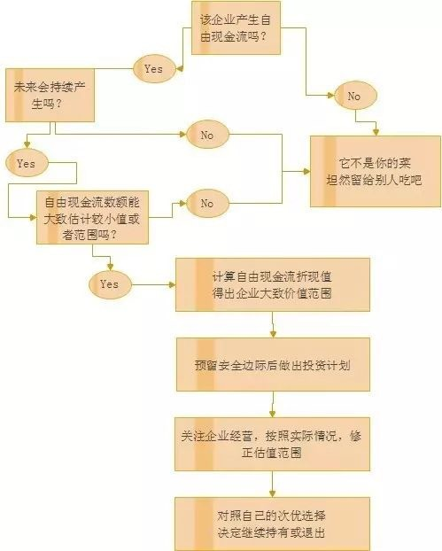
腾讯是台印钞机，这是几乎所有的市场参与者都知道的事实。对腾讯的投资与否，决策障碍从来不在经营业绩好不好，而在于如何理解科技企业的确定性问题上。因此，本系列可能会更侧重思考：面对腾讯这样的公司，老唐本人的投资理念所受到的冲击以及对其展开的思考。所以，想来还是归入散打投资系列较为合适。
腾讯只花了短短十八年，就从一无所有变身为营收过千亿，净利润数百亿，创始人马化腾也以约2400亿人民币的身家，成为今日的中国首富。2400亿是个什么概念呢？就是让你每天搬走1000万，你需要全年365天不休息，持续66年才能搬空。这个财富积累速度，相对于传统企业而言，腾讯更像是个企业或行业的快进版本。观察这个快进版，让我们能够更快更直接的感受到企业在不同生命周期的特征，反思我们当时如果在场，在不知道未来的前提下，能否就当时的已知因素做出投资决策，为什么？老唐对此产生了一些思考，暂时还不知对错，试着码字理一理，一边是和自己内心对话，同时也希望呈现出来和朋友们探讨。
话说在网络上讨论投资理念时，只要你敢说你的投资体系依赖于对企业的深入研究，几乎百分百确定会遭遇一个优越感含量超999%的当头棒喝：“马化腾就曾数次打算几十万（几百万）把腾讯卖掉，董事长尚且看不清楚自己企业的未来和价值，你又何德何能会认为自己的研究有效呢？！”以前，老唐对这种质问，所做的回复大致如下——摘几段自己的雪球旧帖来回忆一下：
马化腾贱卖腾讯的例子，在很多地方都被人用来证明认识企业很难。但事实上这个例子只是证明了“某种类型的企业很难被认识”，这一点纯夹头也没有异议。幸好这世界上还有不少无趣的、一点儿也不激动人心、在可见的将来其商业模式很少会发生变化的企业存在，那里才是夹头的主战场——2016年3月17日。
无数次地看到了有人用马化腾低价卖出腾讯股票来说研究企业之难，其实那只是证明了研究某类企业很难。有一尺高的栏，就别想着见栏就跳，这是所谓能力圈的核心要点——2016年10月23日。
很多人一听到深度研究，会立刻跳起反驳说，企业董事长也不见得能预测企业，马化腾还准备30万卖了腾讯。这是人云亦云、没有过大脑的表现。获取投资回报，一方面是企业经营带来的回报，一方面是互摸腰包带来的回报。
前者，需要我们理解企业，至少需要我们排除那些无法带来回报的企业，这个需要研究吧！你总不能说我随便按一个代码，也比你看了一百份财报选出来的企业厉害。
后者，则追求的是老虎来了，我不需要比老虎跑得快，我只需比同伴跑得快就行。深度研究者，只在自己研究过的企业里打狙击战，只要在这家企业上比没有研究的人占据比较优势就好，并不需要一定要高瞻远瞩高屋建瓴目光远大直视未来。因此无论从企业回报，还是博弈回报角度考虑，我都认为深度研究优于不深研，不深研（就叫浅度研究吧）优于不研究。——2016年12月10日。
今年初，通过对腾讯财报及相关资料的学习，尤其是《腾讯传》和《X光下看腾讯》两本书的阅读——后文有大量资料笔记，均摘录自这两本书——老唐发现，以前给的回答不够痛快，也不算直击要害。实际上还有更精辟、更准确的答案，那就是：马化腾将腾讯报价几百万乃至几千万人民币出售时，是严重高估的，卖不出去是正常的。
是的，那时的几百万，比今日的三万亿贵，不投的才是投资者。老唐认为，在2001年南非MIH集团之前的腾讯投资者IDG和小超人，只是赌风口的投机赌徒，是小注怡情，随便赌赌，其获利有很大的运气成分。相比其所承担的风险而言，其回报并不算高——结论有点骇人听闻哇？先不忙惊诧，且容老唐慢慢道来。
1998年，今日天朝互联网界叱咤风云的大亨们，已经陆陆续续粉墨登场了：4月，张朝阳克隆美国雅虎，做了搜狐；6月，UCDOS的发明人鲍岳桥，创办了联众游戏；6月，不知妻美刘强东取自己和女友龚小京的名字各一字，给新成立的公司取名叫京东；10月，未来将以对付流氓插件而闻名的周鸿祎，创立了著名的流氓插件公司3721；12月，新浪网成立……至于马云的阿里巴巴，陈天桥的盛大，朱骏的九城，李彦宏的百度等，那是一年后才陆续创立的。
1998年，有两个人完美的错过了新世界，一是雅虎杨致远。两位斯坦福校友找到如日中天的杨致远，开价100万美元，出售他们搞的一套搜索技术，被杨致远亲切地拒绝了。后来俩校友只好自己运作，给公司起了个名儿叫GOOGLE；二是伴随着儿子的诞生，和杨致远那两位斯坦福校友同龄的笨老唐，总算心有余悸地爬出了期货爆仓后的深坑，于这一年在老家小县城买下了人生第一套房（小套二），然后，又没钱了。
此时，比老唐大一岁半的马化腾，被网友丁磊（他俩早在1995年就线下会过面了）卖邮箱系统变身百万富翁的传奇故事刺激，打算从就职的润迅公司——南方最大的寻呼机服务公司辞职，要自己开公司创业啦！
丁磊和老唐同年，辞职下海比老唐晚半年。1998年丁磊开发了世界第一款中文免费电子邮箱系统，并将其销售给各地互联网入口网站（那时一般叫某某信息港），成了网络世界的传奇。那时，同龄人笨老唐，对新世界一无所知，依然抬头看三尺青天，低头找一日三餐——知识就是力量，起点的知识差距直接导致20年后，一个是天上的丁丁猫儿，飞在空中打旋旋儿；一个是地下的糖麻饼儿，窝在书房打转转儿（注：丁丁猫儿，成都方言，指蜻蜓）
马化腾计划的创业项目，是销售自己开发的网络寻呼系统。简单的说，就是用户可以通过互联网，而不是电话，将需要发送的信息发到接受者的寻呼机上。或者用户可以不拥有物理的寻呼机，通过虚拟的寻呼机号绑定的电子邮箱就可以收到信息。
再精妙的创意，也抵抗不了行业的坍塌；战略的错误，不可能靠战术的勤奋来弥补，小马哥撺掇几位同学一起参与的创业生涯，过的无比艰难。伴随着手机替代寻呼机的浪潮，小马哥的生意断崖式下跌，已经不是能卖多少钱的问题了，而是免费送都没有人要——因为寻呼台本身也已经要亲自去死了。
小马哥快撑不下去了，正如他后来的回忆：“在创业的那些年，我们从来没有想过未来，都是在为明天能活下去而苦恼不已。”——投资也是如此，选择比努力更重要，有些行业就是天生命好，而总有些行业，怎么努力也只是挣扎沉沦。
此时，一个偶然事件触发了QQ的诞生：1998年8月，广州电信想购买一款类似ICQ（I seek you我找你，以色列几个年轻人搞的一款网络即时通讯工具）的工具，面向社会招标。
反正腾讯的网络寻呼系统也看不见啥希望，腾讯五个创业青年就琢磨搞个方案去投标。闭门数日，搞出个山寨品，取名OICQ（open icq的意思），中文名儿叫“中文网络寻呼机”，你看从寻呼机公司出来的小马哥，脑袋里死死地盯着寻呼机呢！
结果，中标的是另一家更早的山寨品PCICQ。怎么办呢？这个破山寨软件，还搞不搞呢？搞吧，前面已经有三个山寨前辈了，起步都比OICQ早，而且看不出来这免费小软件有任何盈利可能；不搞吧，听说美国有个冤大头叫美国在线的，花了好几亿收购了以色列的ICQ，好几个亿啊！
最后，马化腾犹犹豫豫地决定：要不，咱们先养着吧？万一哥几个好运气，也撞上个美国冤大头呢！
后来嘛，一者由于对手们根本没投入什么精力在这个小玩意儿上，二者由于以马化腾为首的这伙人，基本上都患有轻度偏执，特别在意产品体验，搞了不少符合中国用户使用习惯的微创新。总之，不知不觉间，OICQ的用户多起来了。
用户多起来了，当然是好事。可好事也有另一面，这个滴滴叫的小企鹅，此时没有任何产出，每增加一个用户，就需要服务器和带宽——而这，需，要，花，钱，买！
那时，一台服务器死贵死贵的，要四五万。几个创始人，一边得意于自己的产品被越来越多人喜欢和使用，一边头痛天天增加的用户张嘴吃掉的现金。几个创始人为了钱，放下那颗有尊严的心，什么业务都接，帮人做个网站啦，替人设计几个网页啦，撺掇几台组装机啊，反正挣来几万就给小企鹅吃几万，挣来几千就给吃几千喽！
这样也扛不住，怎么办？所有人工资降低一半，只发饭钱。还是扛不住。马化腾们来不起了，卖了吧！开价300万，想卖掉这个已经拥有100万注册用户的OICQ。不卖不行啊，山穷水尽了，公司账上现金只有一万元，眼看就撑不过下个礼拜了。
卖，谁买啊！你买吗？这是个什么东东呢？不知道怎么赚钱不说，还不知道未来需要继续投入多少钱，而且市场上还有好几个同类产品。更关键是的，这破玩意儿也没啥难的，真要想做，请几个程序员，研究研究也能山寨个八九不离十。
300万？穷疯了吧！马化腾们在深圳广州北京，通过各种各样的关系，找了很多家企业，通通被拒绝了，最高的一家出价60万。估摸着是按照腾讯已经买下的服务器和桌椅板凳估的值。
今天，许多人说，如果当时300万买下腾讯，今天是三万多亿（港币），18年100万倍，年化复利115%。错，错，错，这不是投资，连投机都算不上，这只是YY。如同看见彩票开奖后说，只要昨天投入2元钱买下这个号码，今天就可以获利500万。那只是大脑短暂缺氧，忘记了无数其它没中奖的炮灰，而且你绝对是大大大大大大大概率买到不中的那个号。
腾讯是走到了终点，但别忘了，过去18年里，腾讯有无数的机会死掉，如同它曾经的无数同行一样。那些没有被人们记住名字的X迅们，默默地死在道旁，无人问津。每一个迅的尸骨后面，都有着一堆杂乱而肮脏的烟头和方便面饭盒，无声的讲述着一个又一个300万现金焚烧成灰烬的创业故事。
实业商人里，价值投资者多。这些人真的是以生意眼看待小马哥的故事（而不是将希望寄托在接盘侠身上），所以不接招才是正确的选择。不接招的原因很简单，对于一门根本看不见盈利可能，且还需要不断投入才能活下去的生意来说，300万要价，太贵了，贵的离谱。100万倍，只是事后YY的镜中花水中月。
马化腾们卖身未遂，被逼无奈之下到处找熟人借钱，几千几万几十万的，都借。当小马哥穷途末路，妄图引领潮流玩一把债转股，用公司股权来抵债。债权人听了都十分感动、然后拒绝了——十动然拒。
甚至有朋友仗义的说：没关系，你若真的没钱，不还也可以，但我不要你公司的股票。这话外音明明是：刺奥，你暂时没钱，欠条还在，只要你马化腾不是安心做一辈子穷鬼，我的钱总还有希望。转股？真要鬼迷心窍转了股，你公司一倒闭，老子P也没有一个，还要被朋友圈笑话智商欠费——今日回到那日，你会不会这么想？或者你想想今天你的身边，有没有那种生意做得到处借钱的朋友，你对他公司的股权持什么态度？
合该小马哥命好，两个冤大头在最紧要的关头，头顶锅盖、腰缠海带，伴随一片七彩祥云，当铛凼当、当里个当……闪亮登场了——救命的IDG和小超人来也。他们的注资，在眼看就要断气的刹那，挽救了腾讯，使腾讯在竞争同行们纷纷冻死的科技寒冬里活了下来。IDG和李泽楷这笔投资，一年多时间获得了约11倍的回报。但老唐认为，这不是投资，只是一次押对宝的赌博。
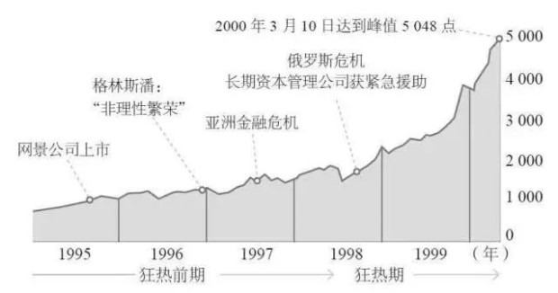
这股著名的网络热潮，生命期只有18个月，从1998年9月启动，到2000年3月到达巅峰，期间任何一个只要和.com沾边的公司，市值或估值都能翻倍。只要设立一家.com公司，哪怕什么业务也没有，它的股权就会被万众追捧，甚至可以直接当钞票用，比如可以用来支付别墅游艇趴体费用什么的。
Paypal创始人曾经回忆说，1999年他创立了paypal，初始直接花钱购买注册用户，任何人注册就给10美元，每推荐一个新用户再给10美元。就这样的商业模式，在2000年2月市场估值就给到5亿美元，并成功融资1亿美元。甚至很多人求着paypal收下他们的钱，其中有家韩国公司就玩霸王硬上弓，没签下入股协议的前提下，硬性给paypal公司汇款500万美元。Paypal不收这笔钱，想退回去，韩国公司坚持不提供公司地址，让paypal无法完成退款——这特么的都什么事儿啊！天方夜谭一样。
盖世英雄和小马哥擦出火花，是2000年初，签订最终协议是2000年4月。看看上面那张图，我们完全可以脑补当时的IDG和小超人对未来的憧憬。吴晓波在《腾讯传》中写到，曾李青——就是前段时间朋友圈发帖，说所有投乐视的都是傻逼的那位——编写PPT的时候，怎么也编不出盈利预测那段，修改了6遍，还是只能含糊其辞——可见曾李青老师的PPT神功，距离贾总跃亭还是有巨大差距滴！
马化腾的真诚性格，在这次性命攸关的融资过程中，展露无疑。IDG代表拿着财务报表和曾李青的PPT，心中嘀咕着：“这财报一看，不用老唐手把手，也知道结局就两种，一是我们不给钱，腾讯马上死。二是我们给钱，腾讯能不能活，看命”。看着财报，此人随口问了马化腾一句：“你怎么看你们公司的未来啊？”马化腾耷拉着脑袋回答：“我也不知道。”哈哈，我也不知道！
此时，曾李青又通过其他朋友搭上另一条线：刚刚因提出数码港概念大红大紫的香港盈科，其掌舵人是李嘉诚之子，人称小超人的李泽楷。然后曾李青在IDG和小超人之间借力打力，这边跟IDG说，李泽楷非常想投；那边跟李泽楷说，IDG已经要签字了，再晚就错过这趟班车了。这小手段搞的IDG和李泽楷都蠢蠢欲动，结果倒是出乎马化腾们意料，两家最后决定——抱团壮胆，各投一半，这样就可以各自用“虽然我们看不懂腾讯，但盈科/IDG敢投，我们信任他们的专业水准”给自家董事会交待了。
你来我往，想吃肉又怕挨打，进度就这么慢腾腾的拖着。可腾讯等不起啊，救命啊，再不给狗粮，我当场就死给你们看！俩盖世英雄闻听此言，虎躯一震，事到临头不忘欺负老实人，临时提出一个对赌协议，说：“估值不变，先给一半。一年内达不到承诺用户量，另一半不给，股份比例不变”。协议怎么定的？估值550万美元，出让40%股权，融资220万美金。IDG和小超人各出110万，各占20%股权。这个对赌协议就意味着，马化腾签字后，只能马上从两位英雄手中各自拿到55万美金，合计110万。如果一年后，用户数量增长不理想，后面的钱就没啦，就相当于公司按照275万美金估值卖掉了40%股权。
这550万美金的公司估值，又是怎么算出来的呢？使用的是相对估值法还是绝对估值法呢？你绝对想多了，这次估值，跟估值法完全不搭界，也丝毫不神秘，简而言之，就是专业人士照样瞎摸。腾讯哥几个算了算，要撑过下一年，买服务器加上发工资，估摸着要1000万软妹币，哥几个的底线是只出让40%股权，保持控股权在手。所以，按照当时的汇率反推出来，公司估值必须为500万美元才能满足这俩条件。然后，考虑到还答应了中间牵线的皮条客一些好处，马化腾又咬咬牙，给ppt估值加上了50万美元。Done，一个伟大企业的估值，就这么算出来的，哈哈，憋住，别吐血。
当时腾讯确实是要揭不开锅了。穷急到什么程度呢？IDG和小超人答应投资以后，因为法律文件起草需要时间，而且资金从境外进来，需要跑一堆外汇方面的手续，预计要一个月左右才能到账。但腾讯已经是眼看断气，真等狗粮按照官方速度送到，可能已经死的梆梆硬了。情急之下，IDG代表找到一位私人朋友，让朋友帮忙先拿出450万人民币给腾讯续命。就这样，腾讯这口气算是接上了。这里要记曾李青一大功，按照当事人的回忆，这个40%股权融资协议是2000年4月最终签订的，没举行任何签字仪式，就是三家人各自守在传真机边上，签字传真了事。据说当时马化腾还有些犹豫：“就这么签了？”曾李青催促到：“就这么签了吧，再迟就来不及了！”
这绝对是价值千金，不，价值亿金的一句话，因为，嚯嚯，看过来看过来，这里的曲线很精彩~~
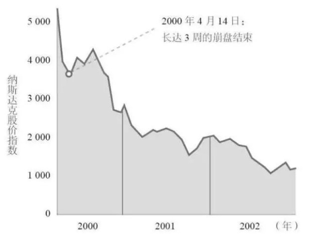
两张曲线图均来自图书《从0到1》
签字，拿钱，崩盘……死的不要不要的，再想撞上冤大头？做梦去吧您。于是，一大群还在待价而沽，摆好pose才肯签字的网络科技企业，忽然发现风投大佬们眨眼间就老母鸡变鸭，金光四射的凯子相，瞬间漂移成葛朗台橘皮脸。
2000年3月底，毫无预兆的，纳斯达克指数闪崩了，从此踏上了漫漫熊市的不归路。新浪网从泡沫期最高价58美元，一年多时间跌到最低1.02美元，搜狐跌到0.6美元，网易更惨，跌到0.53美元，还收到交易所退市警告——这里也诞生了投资界的一段传奇：段永平在均价约1美元的位置买入约200万股网易，持有至2010年前后，获利超过120倍（一拆四以后的30~35元间卖掉的）。当然，段总卖掉至今，网易股价又涨了10倍，这又是另一个世界的精彩了。
可惜了了，段永平原本也混雪球的，字号@大道无形我有型。以前还可以经常跟段总互动一下，不经意间偷点真经的。后来嘛，呵呵，喷子太多，大道再有型，那也双拳难敌群喷，缩地成寸，遁回网易博客那一亩三分地去了。
段永平成名于小霸王游戏机，后创立了步步高（现已分化成步步高、oppo和vivo三大块），再往后转型投资，真正大道无形，水平相当高。其投资思想和实战操作，是老唐认为最当得起“中国巴菲特”称号的人（当然，Mr.段已经移民美帝，叫中国巴菲特其实是不对的），他最近几年的核心持仓主要是苹果和茅台。
继续说纳斯达克闪崩。纳斯达克闪崩了，但马化腾们已经巨资到手，贫道有钱、道友没钱，那简直是扩张的天赐良机，更何况还有欺负老实人的对赌刺刀在屁股后面顶着。马化腾当然是选择梭哈，将到手资金悉数投入到服务器购买行为上去。不要钱给人提供服务，网民当然欢喜，注册用户数当然飙升。用户飙升的结果就是：需要更多钱买服务器买带宽。买买买，没钱拿什么买？问题兜了一圈，又回到原点。
IDG不——想——给——钱！为乜嘢？因为网络泡沫破裂了；因为拿着望远镜也看不见接盘侠的踪迹；因为IDG根本就不懂腾讯的生意模式，他们只是迎合资本市场的喜好，到处撒胡椒面，有枣没枣打三竿再说。自98年网络热潮露头开始，IDG中国先后投了80多家创业企业，累计投资金额约1亿美元，每家投资50~150万美金之间（看见没？给腾讯投110万美金，正好是一颗平均大小的胡椒粒儿）。除了金蝶成功上市，其他的互联网企业几乎无一例外遭受重创。
为了自己的生存，IDG此刻不仅不想往外面掏钱，反而想尽一切办法寻求套现机会。拿着腾讯股权，IDG找了搜狐张朝阳，拒绝。找了新浪王志东和汪延，拒绝。找了雅虎，拒绝。找了自己投资的金蝶，拒绝。找了联想，拒绝。小超人找自己旗下的上市公司Tom.com，居然很没有面子地被管理层拒绝……在这些人眼里，这个破软件，自己随便找几个人加加班也可以搞出来，拿几百万美金去买，是忘记吃药了吧？
此时，我们看清楚了IDG和小超人的投机面目了吗？他们根本就不是考虑公司价值的“投资者”，只是两个击鼓传花游戏的参与者，他们以为鼓声不会恰巧在自己拿到花儿的时候停下来。还好，那些鼓声真停了的项目，今天已经无人想起，大佬们当然也不会在电视秀里自爆黑历史了。能说起来，那都是腾讯、金蝶、搜狐、当当、balabalaba……遍地黄金、唾手可得，看本帅只手遮天、玩转江湖，哇呀呀呀！
腾讯确实是没有停下来，仅仅一年之后，一双伟大的投资眼看中了它，从一个无人知晓的角落里斜刺杀将出来，为其估值6000万美金，做了IDG和小超人的接盘侠。直到今天，这位令人尊敬的传奇接盘侠也没化妆撤退，依然持有腾讯约1/3股份，市值超过1300亿美元，16年增长超过六千倍。它，就是南非MIH集团。今天的投资圈里，有很多不明真相的群众替IDG和小超人惋惜，好像如果他们不在6000万美金估值时，卖给南非MIH集团，今天就可以多拿六千多倍的回报，创造出投资界第一奇迹。老唐觉得，大错特错！从6000万到4000亿的这部分财富，本来就不属于IDG和小超人。这是投资理念决定的，在买入的那一瞬间，冥冥中结果已然注定。
IDG和小超人，听到6000万美金估值，欣喜若狂。在互联网寒冬中，一年多时间11倍溢价退出，证明了之前的投资决策是多么的英明伟大光荣正确啊！卖、卖、卖，IDG总部和小超人决定“老夫一把梭，一股不留！”，好在IDG的项目联络人王树坚持不同意出清，总部最终做了让步，卖12.8%的股权给MIH，保留了7.2%。小超人身边却没有一位这样桀骜的部下，所以，20%股权梭哈了。
IDG和小超人从投入到退出，能看出一点点投资的气息吗？我觉着没有，只是短期投机行为罢了。如果和同期几十家其他项目一起考量，投资回报率甚至可能低的可怜。那么，伟大的MIH又是如何发现腾讯的价值，如何做出投资决策的呢？这开始跟投资二字沾边，开始拷问我们和伟大投资者之间的思维差距，开始有了夹头的学习空间了。
巴子曰：「投资就像打棒球，你想让记分牌上的得分增加，就必须盯着球场，而不是盯着记分牌」。对投资者而言，股价就是那分分钟变化的记分牌，企业经营则是那流血流汗的竞技场。
话说整日里琢磨企业怎么才能活下去的小马哥，意外的发现千里之外冒出个知音：日本有家电信公司，通过向手机用户提供一些有价值的内容，例如漫画、图片、音乐、段子或者游戏什么的，然后按照下载量向手机用户收费，再和提供内容的公司分账。马化腾一听，嗦嘎！这不是抄袭咱的创业项目“中文网络寻呼机”咩？（参看《散打投资5》）无外乎是把寻呼机换成了手机！哟甘达，哈依，你抄我我抄你都是一码事（请将这句日语用你最快的语速念出来）！这事儿大有可为、大有可为啊，Word哥！小马哥激动了。
小马哥构想了这么一个盈利模式：咱的优势是有大量用户整日里用QQ瞎聊。但障碍，主要是找不到用户在哪儿，也不知道怎么跟用户收钱。我们如果和电信部门合作，将电脑端QQ跟手机打通，让一部分人和手机对聊起来，产生短信，然后和电信分账。以后继续在这个基础上，琢磨新内容，创造新收入。这样，电信获得了短信业务增长，我们找到了Q号背后的用户，通过手机话费这个渠道和用户的钱包链接起来。
需要插一句，2000年3月底，OICQ已经被迫改名QQ了。原因嘛，因为美国在线（ICQ）告腾讯OICQ侵权。那时腾讯正是生死存亡之际，欺负我的人那么多，也不在乎多你一个。反正我也没精力和秃驴争师太，你帅，你有理。你说侵权就侵权，腾讯直接认怂，弃用OICQ域名和软件名，改名QQ。之所以用QQ，据说是某员工在公交车上偷听俩美女聊天时，把ICQ或者其他什么山寨品，通通简称QQ，然后公司就借坡下驴，直接改名QQ了——因祸得福，QQ可比OICQ简单、响亮，更易于传播。
2000年5月，和深圳联通联合展开移动性生活推广。2000年8月，和新鲜成立正琢磨盈利模式的中国移动，联合推广移动梦网，简单的说，就是用户付费，移动抽水15%，腾讯拿85%。一层窗户纸捅破了，海阔天空……然而，IDG看不见。其实看见了也没用，当一名投资者的心灵被恐惧占据的时候，当注意力集中在指数和股价的时候，赛场上的变化不重要。重要的是赶紧撤出来，静待形势稳定后再做打算，常见的口号是“君子不立危墙之下，现金为王，要控制回撤、平滑曲线，使自己居于可进可退的优势地位，待形势明朗后入场，balabalababala……
远的不说，就说三四年前的茅台，当习李配大力打击三公消费的红色恐怖袭来时（三公：公车消费、公款吃喝和公费出国），市场一片恐慌，纷纷抛售。然而，打击公款吃喝，究竟是让茅台酒的消费需求消失了，还是转移了？如果思考过这个基本问题，投资决策是不难做出的。也就是说，面对打击公款消费新动态，一个冷静的、盯着球场而不是记分牌的投资者，需要思考的真正问题不是股价到底要跌到哪里去，而是：茅台酒大量被公仆消费这一现象，其根源究竟是人做了公仆后才喜欢喝茅台？还是因为做了公仆，就有了权利和金钱的优势，以至有更多机会消费到茅台？
如果是前者，一个原本不喜欢喝茅台酒的人，戴上官帽，犹如触碰了某种开关，会变成喜欢喝茅台酒了，而官帽一摘，哐当，又不喜欢喝茅台了。那么只要打击公款吃喝，企业必将受到重创，这可能造成企业获利能力下降，造成投资者“本金的永久性损失”；反之，如果是后者，那打击三公就只是把官爷们从排队抢酒的队伍前列揪出来，让后面的人有机会买到酒。酒厂的酒依然会卖光光，你担心什么呢？股价的波动不是捡钱的大好时机吗？
2014年2月22日，红色恐怖下——该日茅台后复权收盘价为113.62元——老唐在雪球发帖赤裸裸地鼓吹到：贵州茅台：1.价格合适，没有商品会剩下。价格相同，不会是好东西剩下；2.超高毛利率。即便沦落为打价格战，也无需走到以本伤人的地步。同时，设备和库存不贬值；3.两百亿现金是过冬的棉袄，一百多亿买个新茅台的独家权利，是未来超额收益的保障；4.永远不要低估了中国人追求财富和追求享受的劲头儿。世界第二的经济体，会诞生一款庆功酒，用于对中华文化表达敬意。茅台机会最大，五万吨远远不够分。
小企鹅以每天50万左右的用户增长速度，飞快地占领着中华大地无处不在的网吧桌面。那时候，买得起电脑的人还少，大家一般都是在网吧上网。于是，网吧里充斥着此起彼伏的寻呼机滴滴声——QQ的经典滴滴叫，用的是以前寻呼机来信息的通知声。这滴滴声，引来了一双慧眼：南非MIH集团中国区负责人网大为，比马化腾小三岁的美国小伙。网大为本名David Walleerstein，其在投资领域里的经历，确实符合其家族姓氏：网里死盯——这简直是天生就该在互联网行业里掘金的姓氏。网大为不仅代表南非MIH集团死盯了腾讯，而且在该项入股协议完成后，直接从南非MIH集团跳槽到腾讯，一直在腾讯工作至今。
腾讯在和资本市场接触的过程中，除了金钱以外，还直接得来两件宝：一个是全盘负责腾讯上市的高盛亚洲投行部执行董事刘炽平，现任腾讯总裁，一人之下万人之上；另一个就是这位网里死盯先生，现任腾讯首席探索官（CXO）兼高级副总裁。这是题外话，不展开了。不过，以当时网大为的年龄，估计也不是该项目的决策者，背后拍板的应该另有高人。这推测还有佐证：即便网大为跳槽去了腾讯工作后，MIH集团对于腾讯的持股依然稳如泰山。背后这位神龙见首不见尾的高人，理论素养之高，神经之大条，令人仰慕之心犹如滔滔江水连绵不绝好似黄河泛滥一发而不可收拾。
2001年MIH集团购买了IDG和小超人的32.8%股份，后来又增资，又收购管理层股份，又通过公司赎回IDG剩余7.2%股份，巴拉巴拉。最终上市后，2004年财报里MIH集团持有腾讯股份是6.3亿股，至今一股没卖，期间因2014年腾讯股票一拆五（相当于国内习惯叫的10转增40），所以目前持股数量是31.5亿股。
反倒是马化腾，2004年持有2.42亿股，年年卖点儿，现在还有8.28亿股——不卖的话应该有2.42×5=12.1亿股。不过，网上有种言论，似乎说马化腾也看不懂腾讯的发展，低价抛售了腾讯股票，我觉着小看我们小马哥了。老唐理解小马哥，相当理解。年年卖点儿，那是因为人生除了市值积累以外，还有很多更有乐趣、更有价值的事情，值得我们去做。马化腾若是放弃这十多年来所有的享受和支出，只为了财富值从2400亿变成3600亿，从而使福布斯排名前进几名，那才真是如假包换的脑壳有包呢！
这位27岁的小帅哥网大为，背后代表的南非MIH集团，虽然是南非最大的付费电视运营商，且在纳斯达克和阿姆斯特丹两地上市，但对于那时的中国资本市场，还是很少有人听说过的，所以，网大为并不是IDG招来的，是自己在中国各大城市网吧调研（毕竟姓网里死盯）时，被小企鹅所吸引，然后摸到腾讯公司的。那时的小马哥，还没什么江湖知名度，当然也不会有那些纳头便拜公明哥哥的故事。小马哥一定是抱着闲着也是闲着的态度，半信半疑地给这位年轻的大鼻子介绍QQ目前的情况：日均50万新用户注册+自2000年8月开始的和中国移动合作的移动梦网项目。
没有资料说小马哥当时有没有给网大为介绍盈利前景，但常理推测，应该会做的。毕竟盈利模式已经有了，日日有钱进账，剩下的不过是憧憬一下每个用户每年发多少条短信的事儿了，就算PPT比贾总差99个档次，也完全能吹个框架了。现在回想，那天的网里死盯先生，双眼一定刷刷的闪过无数道光芒。
虽然我们不知道小马哥当时怎么跟网先生畅谈未来几年盈利预期的，但现在已知的是2001年3月，移动QQ单月发送短信已经达到3000多万条，腾讯月收入200多万；5月QQ注册用户数量达到1亿；2001年6月，腾讯单月盈亏平衡；2001全年，腾讯获得净利润1022万元，成为中国最早盈利的互联网公司；2002年，腾讯净利润1.41亿，2003年净利润3.22亿——俩人初次见面是2001年1月，最终敲定投资是2001年6月。
对于一个用户数量高速增长，盈利模式已经初步建立，明显具备越多人用越有价值的网络效应护城河的互联网企业，双方达成的估值是6000万美元，约折合人民币不到5亿。如果按照当年净利润考虑，市盈率约50倍，如果按照第二年净利润考虑，市盈率约3.5倍——是的，3.5倍，不是多打了小数点。我打赌，当时小马哥和网兄弟，都没有想到腾讯能增长那么快。如果真要是知道第二年就能赚1.4亿，马化腾无论如何都会至少喊个20亿人民币估值的。
如果网兄弟能想到三年后腾讯净利润会达到3.22亿人民币，我想，20亿以下的估值水平，网兄弟应该能愉快地接受。因为20亿人民币，也基本确保三年后按照15倍市盈率卖出还可赚一倍的严苛要求了。不过，由于这次MIH集团主要是收购IDG和小超人的股权，并不是直接给腾讯注资，估计小马哥也不是很上心，心说我来争论半天估值高低，钱是你们拿，关我P事——哈哈，心理阴暗一盘。
这简直是价值和成长的完美结合。具备高速成长确定性的企业，只喊出个无增长企业的报价，这种机会在任何市场都是罕见的，一个字买买买。我相信，只要大致能预测到腾讯次年净利润不会低于5000万，且未来大概率还会增长，那么给个5亿估值，是任何夹头都敢做的、有理有据有逻辑的事儿。区别仅仅在于能力圈的不同，导致是否具备知识，能够确信腾讯次年会赚到5000万以上——次年实际利润是1.4亿。这个5000万和1.4亿的差别，大约就是大师口中的「模糊的正确」了。
此时的6000万美元估值，相比一年多以前的550万估值，不仅不是贵了11倍，实际上是便宜了数十甚至数百倍。为什么这么说呢？
一年前，当IDG和小超人进入的时候，是企业随时可能死，随时可能价值归零——当年做免费软件，一直坚持到裤衩当掉也不够，然后静悄悄死掉的，多如牛毛。腾讯若不是及时收到IDG和小超人的美钞，额头上大概率也是刻着一个龙飞凤舞的死字。而此时，企业已经干掉了行业对手，成为细分龙头，并且开始盈利了。开始盈利意味着具备了造血功能，即便没有外来资金输血，企业照样能茁壮成长，无外乎是或许有速度的差异而已。
吓破胆的IDG和小超人和赚几千倍的MIH，就在这曙光刚刚出现在地平线的一刻，擦肩而过。一个得意于找到接盘侠，获利十倍退出；一个偷乐于在傻蛋手头捡到宝，捂着嘴不敢笑出声。在股市投资中，经常见用当前股价和历史高低点对比，从而得出便宜或贵的思维模式，这是我们大家有意无意自带的一个心理误区。这个错误不干掉，一不小心可能会坑杀我们不少财富，或者让我们错过不少财富。
一家企业便宜还是贵，跟它过去曾经到过多少市值完全没有关系，只跟它当前及以后的盈利能力有关。就好比曾经卖过3000元的寻呼机，曾经卖过数万元的大哥大，曾经价值一套房的286电脑，他们今天就是腰斩腰斩腰斩再腰斩，还是贵，贵，贵，因为它们的价值近于零。
一只垃圾股，即便历史高点超过200元，也并不意味着100或者50元或者20元是便宜的。而，6000万美元的腾讯，由于已经度过最危险的生存危机以及找到了盈利模式，反而可能比550万的腾讯便宜。2013年6000亿的腾讯，也可能由于多了一个微信，比随时可能被移动互联网颠覆的3000亿腾讯，更便宜。——习惯从当前市值和企业盈利能力之间去思考贵贱，就算不能接住成长股持续创新高的黄金雨，但躲过那些抄底死在山腰上的悲剧，也能算是投资道路上巨大成就了。
如何对成长进行估值，一直是习惯捡便宜货的夹头们头痛的难题。我们经常会遇到一些不错的企业，我说的不错的意思，一般至少包括三个标准：①净资产收益率高，②净利润含金量足，③维护原有盈利能力所需资本少，且新增资本投入也可获得较高的净资产收益率——但很痛苦的是，市场绝大多数时候不傻，这些好企业，经常处于估值和股价的“高位”。
大约是在2014年初的一次聚会上，酒桌上的@刘马克兄分享给我一句话「成长是价值的安全边际」，是巴神说的。可惜老唐渣英文，没见过原出处，但这句话给我的震撼非常大。震撼在何处呢？以前我的认识是“成长是价值的组成部分”，简单的说，就是我给公司估值的时候，会考虑企业的成长因素。在估值区间出来后，打折以寻求安全边际，得到自己可以支付的买入区间。“成长是价值的安全边际”这句话，突然给我打开了一个新的空间。也就是说，只要我们能确认未来会有成长，大师的经验是出价可以触及当下估值的上限——注意，依然不是过高出价，而是当下估值的上限。
什么是当下估值的上限呢，老唐在今年4月上旬的文章《像老板那样投资》一文里写过：
30倍市盈率是我认为的合理估值上沿……为什么是30倍市盈率？因为30倍市盈率代表着3.3%的年收益率，而这个收益率是存银行就可以获得的。存一个3.3%利率的存款在工商银行，本息基本确定100%的概率可以拿到。而投资一家企业的股权，无论我们研究多么彻底，我们都无法得出100%确定的收益率，甚至不能保证本金的100%偿还。这个不确定的风险，必须靠股权提供更高的收益率水平（即更低的市盈率）来补偿。
因此，当市盈率超过无风险收益率的倒数时，我会认为一家企业进入合理估值区间上沿，没有额外的便宜占，不再适合重仓持有了。注意，是不再适合“重仓”持有，不是“不再适合持有”。为什么呢？道理也不难，企业收益会“成长”，而银行存款几乎没有“成长”。所以，合理估值的上沿，并不代表高估，只适合把捡二级市场便宜的重仓位降低，而不是清仓卖出。
我们再看一个巴菲特嘚瑟了无数回的案例，号称是帮助他自己从猩猩跨越成为人的一次飞跃：喜诗糖果。
1972年1月3日,伯克希尔买下了喜诗糖果。当时卖方的报价是4000万美元，但公司帐上的闲置资金就有1000万美元，因此真实的报价应该是3000万美元。
当时查理和我还不是很了解一家市场特许事业的真正价值。在看到公司帐上只有700万美元的有形资产净值后，向对方表示2500万美元是我们可以付出的最高上限——我们当时也确实是这样想的。
幸运的是，卖方接受了我们的报价。
巴菲特事后想起这件事，很庆幸自己运气好：“我们是幸运的，整个交易没有因为我们愚蠢地坚持2500万美元的价格上限而告吹”。这说明，巴菲特清楚地意识到，4000万美元买下这个1972年营收3133万美元，净利润208万美元（1971年营收约2900万，净利润数据没找到，估计略小于200万），净资产约1700万美元，其中1000万是现金的喜诗糖果，是一笔划算的生意。而巴菲特和芒格所坚持的3500万出价（2500万是扣除过喜诗糖果公司账上闲余资金后的价格）则是差点错过宝的愚蠢行为。幸好运气不错，额外捡了500万美元。
现在去回看历史，这就是一个具备成长能力，只需很少资本再投入，利润含金量高，净资产收益率高（208/700≈30%，巴神买下后拿走闲余现金，不影响喜诗的获利能力）的企业。巴神认为，20倍市盈率买下这样的企业，是捡了大便宜，可以拿来嘚瑟一辈子。他也真嘚瑟了一辈子，每年致股东信，没少过吹喜诗糖果。
这句酒桌上的分享，奠定了老唐会去买海康腾讯这类企业的理论基础。后面聊到买入决策和思考的时候，还会翻出来说。今天就到此打住了。
理论上说，股市挣钱其实不难。只要在贵的不明显的价格以下，选择几个净利润含金量高、被替代可能小的印钞机，分别入上一小股，然后该吃吃、该喝喝、爱忙什么忙什么，财富自然会以高于社会资金平均收益率的增幅成长。假以时日，静待伟大的复利规则发挥威力，钱自然就来了，不需要觉着每一天都很关键，每一天都咬牙坚持破釜沉舟背水一战战战兢兢上观天下观地中间观蚂蚁……
然而，这么简单的事情，为什么实践中是一赚二平七个亏的残酷分布呢？老唐觉着，核心问题是：市场经常阶段性地奖励——乃至重奖——明显错误的行为，由此导致了市场参与者的心理和行为扭曲。有的人听路边社消息，满仓满融参与，结果入市就是18个涨停板；有的人跟收费股神，888交进去，拿到代码，奥拓进去奥迪出来；有的人数波浪，二浪调整杀进去，转眼间资产加零；有的人看电视股评，天天高抛低吸有乐趣，收入超过脚后跟不沾地的高级金领……
逻辑明显破成筛子的行为，却大把财富到手，面对这样的现象，你是心动还是行动？这是投资的核心之“道”。与之相比，研究公司、财务估值，都只能算“术”。
对于抄作业这件事，老唐的总体思想是：
识人，也是一种能力。西谚有云：If your heroes are right，you are lucky——你关注的人靠谱，你就烂不到哪儿去；中文俗语也有类似说法：跟着苍蝇找到粪堆，跟着蜜蜂找到花蕾。
将你信任的人的选股，作为选股池里的备选对象，的确是节约时间和精力的做法；你信任的人对某公司所持观点，可以作为自己估值时的加分或减分因素。
如果老唐的财报分析文章帮助新老朋友们整理了一些材料，提供了一个视角，老唐是开心的。但是，如果纯粹因为老唐看好就跟风买入，这是可怕的。
从老唐的角度说，今日你跟风节约的汗水，未来说不准会变成喷进唐书房的口水，因为很显然，老唐又不是D，不可能永远伟大光荣正确；
从你的角度说，放弃了计算和思考的过程，直接拷贝买卖行为，恰恰是在自己资金量相对较小的时候，放弃了观摩学习和验证提高的机会，且可能抄袭了一个扭曲的结果，得不偿失。
哪怕对方真的是个如同巴菲特一样的绝顶高手，直接抄也绝不是良策——注意，更何况老唐本人距离高手二字还差着十万八千里！！！
话说2001年6月，南非MIH集团按照6000万美元的估值收购IDG和小超人持股的腾讯股份，其后又从部分管理层手中买了股份，再然后公司又赎回了IDG手头剩余股权。总之一堆运作，到2003年8月时，MIH集团持腾讯6.3亿股（准确数字是630240380股），占50%股权，总计投入了约3200万美元（不到2.5亿港币）。经过2014年1拆5之后，MIH集团持股数约6.3亿×5=31.5亿股，至今1股没卖，期间获取分红74亿多港币，当前股价325港币，持股市值超过1万亿港币，投资增值超过4000倍。
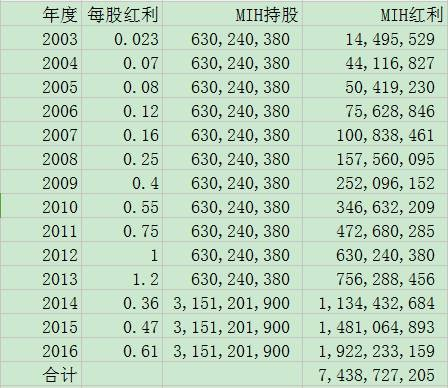
说到这儿，纠正前面一个疏忽，老唐在《散打投资6》里说，仅仅一年之后，一双伟大的投资眼看中了它，从一个无人知晓的角落里斜刺杀将出来，为其估值6000万美金，做了IDG和小超人的接盘侠。直到今天，这位令人尊敬的传奇接盘侠也没化妆撤退，依然持有腾讯约1/3股份，市值超过1300亿美元，16年增长超过六千倍。这疏忽是老唐码字的时候，遗漏了市值增长里面，还有2004年上市发行股票导致的部分。从约5亿港币的估值到3万多亿港币的市值，公司确实是增长了6000多倍，但对于MIH的持股来说，只增长了4000多倍。不好意思，是老唐不够仔细。
不管六千多倍还是四千多倍，都是令人口水长流的投资回报，年化回报率高的吓人。难免令人憧憬：要是上市的时候，我也能买上十万八万的，今天会有多少个万呢？这笔帐很好算，因为腾讯上市以后主要的股权变动就是搞过一次1拆5（有过一些回购，又有些新发的股权激励，总体影响不大，忽略），所以，假设你我在2004年6月16日上市当天，在当日最高价4.6港币附近买进2万股，花费9.2万港币，那么今天持股是10万股，市值3250万港币。这13年里分的红，小钱，就忽略了。
账，很诱人。但实际上除了MIH集团的大神以外，能做到的人没几个。2004年6月16日上市当天，换手率为104%，股价从发行价3.7港币上涨到最高4.625港币掉头，最终跌破发行价收的盘。也就是说，认购腾讯新股的投资者，基本都在上市当天就卖掉了，而且还有不少人是赔钱卖掉的。眼看着一笔大钱，一笔改变自己及家庭命运的大钱，无数人擦肩而过，原因当然有很多。其中首要原因是绝大部分人是“炒股”的，只是将它视为一个可以买卖的代码。
买卖代码当然要考虑接手的下家。为了出手方便，自然是选择热门股票炒，所以嘛，经常换股是必然的。一个月你不炒它个十个八个股票，你简直就是给炒股二字丢脸（所以老唐从来都承认自己不会炒股）。炒家的终极命运嘛，请看下图
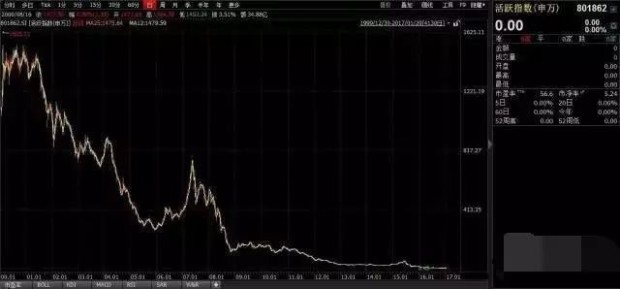
这是申万活跃股指数，是以周换手率最高的100只活跃股为成分股的股价走势图。指数起于1999年12月31日，起始点位1000点。自2017年1月20日收盘后，该指数停更。停更的原因，是指数快跌没了，只剩下10.11点。这指数的含义是说，假如有一名投资者，自1999年12月31日起投入100万，每周买入最活跃的100只股票，在0佣金和0税费的假设前提下，到2017年1月20日，还剩1万块。如果考虑佣金和税费的话，估计在五六年前已经阵亡。
这指数，告诉我们，即便不考虑交易摩擦成本，追逐活跃股，也是一条投资的不归路。这部分不是书房的讨论重点，“炒”股人士，是股市参与者的主流，但从来不是唐书房主流。
我们要讨论的是如果持“买股票就是买公司”观点，我们能吃到多大一截腾讯？或者，换个说法，假设我们现在穿越回2001年6月，作为一名小散，跟着MIH投资了一笔小钱到腾讯，比如说5000元，拥有腾讯公司万分之0.1的股权。但由于穿越的时候被灌了孟婆汤，我们并不记得从2001年至今所发生的事情了。从那时，持有正宗价值投资理念的你我，是否有可能搭上这改变人生的腾讯之路，让2001年的5000元增长4000多倍，变成今天的2000多万呢？
前几天，书房里就有朋友说，老唐最近不做作业，也不安排作业，搞的没有学习动力了。今天，我们就来做个思维训练。
下面老唐把2001年至2009年间，腾讯发生的主要事件及当时的财务数据罗列出来，各位以现有的投资理论素养，穿越回去，但忘记后面的企业发展和股价走势，做个沙盘推演，看自己能将手头的5000元持有到什么时候？或者你直接从腾讯上市以后开始考虑是否介入。这期间买入、持有或者卖出，又是依靠哪些信息作出判断的？不要掺杂未来函数进去，不要偷看未来的企业发展状况和股价走势哦！
1）2000年8月，QQ推出广告条，价格只有新浪等门户网站的20%左右，但由于使用群体主要为青少年，非主流广告商受众，腾讯广告业务推广不顺；
2）2000年11月，推出QQ会员，可以享受靓号，网络收藏夹等服务，10元/月。大力推广，半年内只发展出3000个会员。主要障碍是支付方式落后，邮局汇款很麻烦。
1）2001年6月，腾讯实现单月收支平衡。MIH入股腾讯，估值约5亿人民币，你也将原本计划购买电脑一台的5000元巨款跟投，占股比例为0.001%（或者你没有入股，自上市后才考虑合适买点。两种推演均可，自选）；
2）中国移动联合腾讯等增值服务商，推出移动梦网业务，拉动短信业务暴增16倍，达到159亿条（2002年793亿条；2002年，通过移动QQ发出的短信占据中国移动整个移动梦网业务短信总量的70%）腾讯通过短信分账获得可观收入；
3）2001年，腾讯的QQ号码开始变相收费注册：用户通过网络免费注册QQ号，几乎不会成功，只能通过声讯台或者短信方式才能顺利注册；
4）2001年七八月，网络舆论声讨收费注册行为，指责腾讯作死；
——2001年，腾讯营收4908万，净利润1022万，估值折合约50倍市盈率。
1）2002年3月，腾讯推出“QQ行靓号地带”，每月2元，可以自选号码，9月向全国推广，免费号码基本停止发放；
2）腾讯的收费战略，招来大批竞争对手。9月，朗玛UC上线，3个月内注册用户突破800万；同时，各大网站纷纷推出自己的即时聊天工具：网易泡泡、新浪聊聊吧、搜狐我找你、雅虎通、263的E话通、Tom的skype……，市面上一时出现了30多款同类产品；
3）2002年8月，QQ原创了QQ群功能。群聊功能意外的使QQ的活跃度大大增加；
——2002年，腾讯营收2.63亿，净利润1.41亿。
1）2003年6至8月，腾讯如梦初醒，重新开放号码的免费注册通道。
2）2003年1月，腾讯模仿韩国一家社区网站，开发并上线QQ虚拟形象系统：QQ秀。大获成功，半年内就有超过500万用户购买有效期仅6个月的虚拟服装、饰品、环境等虚拟物品，平均每位用户消费额5元，远大于购买靓号支出，且用户接受度很高，无不良舆论影响，并使得Q币这一支付手段获得用户认可。
3）2003年8月，腾讯进军网游，引入韩国3D角色扮演游戏《凯旋》，运营结果，不温不火，基本宣告失败。
4）2003年9月，腾旭和上海电信合作，推出电话QQ业务，用户登录QQ后，可以依据提示与上海电信所有的电话、移动和联通的手机、铁通和网通的固话实现通话。该业务2005年7月被信息产业部关闭。
5）2003年12月，推出腾讯的门户新闻网站，www.qq.com，基本上是复制粘贴型的无特点新闻网站。
——2004年8月奥运会期间，腾讯推出QQ客户端的迷你首页，将新闻和QQ客户端链接在一起，最快速度自动弹出奥运信息，终于获取流量上的成功，成为国内门户网站第四名。但由于用户普遍的低龄化，其广告价值远低于新浪搜狐等网站。
——2003年营收7.35亿，利润3.22亿。
1）2004年315晚会，三大电信商的短信相关业务成为批判总靶子，涉黄、涉骗、暴力信息、引诱订阅、甚至直接明抢扣费，一时引发巨大的舆论压力；
2）2004年4月19日，信息产业部发布《关于规范短信息服务有关问题的通知》，整顿混乱的短信市场；
3）2004年6月15日，信息产业部发布《关于开展移动短信服务自查自纠活动的通知》，正式实施行业整顿；
4）2004年6月16日，腾讯上市，出让公司约25%股份，发行4.2亿股新股，发行价3.7港币，折合公司估值约60亿港币。
5）2004年6月底，在美国上市的网易率先披露整顿后果，二季度短信服务收入环比猛挫37%~41%；
6）2004年6月，互联网行业展开了一场围剿QQ运动：网易泡泡通过“挂泡泡送短信”的手段，发展成为仅次于腾讯的第二大国产即时通讯工具；雅虎中国正式推出雅虎通6.0中文版，由周鸿祎挂帅与腾讯展开竞争；
7月7日，新浪宣布3600万美元收购朗玛，将朗玛UC更名为新浪UC，成为市场占有率排名在QQ、MSN、网易泡泡之后的第四大即时通讯工具；
8月微软在北京和上海分别组建了MSN中国的市场和研发中心，开始主动拓展中国市场；
11月，中国电信推出了自己的即时通讯软件VIM，以VIM号码可以直接连接电脑、固定电话、小灵通和手机为卖点，参与市场竞争……
一时间，据说全国大大小小的即时通讯软件有超过200款。更为可怕的是，一种政治正确的言论被QQ之外的其他厂家呼吁起来了：即时通讯软件之间应该实现互联互通，使人与人之间实现无障碍沟通。
7）2004年10月，中国移动强制性要求腾讯重签协议，大幅降低腾讯在移动梦网业务中的分账，否则终止合作。根据新协议，腾讯年净利润将锐降数千万元。
——2004年，腾讯营收11.44亿，净利润4.47亿。当年上市，公司股本17.65亿股，股价波动区间3.375~6.35港币，市值波动介于59.6亿至112亿港币之间，港币汇率1.06（1元港币兑换1.06元人民币），折合市盈率约14~26倍。
1）2005年1月，腾讯推出《QQ堂》，与盛大的热门游戏《泡泡堂》展开正面竞争。
2）2005年3月，腾讯收购Foxmail，意图弥补QQ邮箱短板。张小龙团队进入腾讯。
3）2005年6月底，QQ用户达到4.4亿，月活跃账户1.7亿，最高同时在线人数突破1600万。该数据宣布中国的即时通讯市场已经从跟随变成全面领先于发达国家水平。
4）2005年6月，腾讯发明“QQ宠物”，大获成功。
5）2005年10月，MSN和雅虎通达成互联互通协议，并公开呼吁腾讯一起互联互通，马化腾坚决拒绝了这一深得民心的呼吁。
6）2005年12月，腾讯模仿《魔兽世界》推出大型游戏《QQ幻想》，再次失败；后腾讯反思并调整战略，将腾讯游戏的重心从大型网游调整到休闲竞技游戏，枪战、赛车、格斗、飞行射击、音乐舞蹈等。
——2005年营收14.26亿，净利润4.85亿，港币汇率1.06，公司股本17.69亿股，股价波动区间4.275~9.7港币，市值波动区间75.6亿至171.6亿港币之间，折合市盈率16.5倍至37.5倍之间（忽略年度分红额，下同）。
1）2006年初，中国移动开发出自己的即时通讯工具“飞信”，直指腾讯的核心资产“移动QQ”（移动QQ占腾讯全部短信用户的七成左右），并向腾讯发出通牒：第一，移动QQ和飞信进行业务合并，否则把移动QQ从移动梦网业务中剔除；第二，整个QQ体系和飞信实现互联互通。
2）2006年6月，飞信正式推出，同时宣布，移动QQ业务2006年12月31日停止合作。
3）2006年内，腾讯转而寻求与联通的合作被拒绝。因为联通也即将发布属于自己的即时通讯工具“超信”；
4）被逼之下，腾讯自立门户，放弃和移动联通的合作，推出电脑端的“超级QQ”和手机端的“手机QQ”两大产品，专注增值业务。
5）2006年3月13日宣布拍拍网www.paipai.com正式投入商业运营，进军电子商务领域，与淘宝面对面开战。拍拍网和财付通2005年10月上线试运行，借助QQ的导流，正式运营之日，已经拥有700万注册用户；
6）2006年3月，腾讯发布搜搜网www.soso.com，进入搜索领域。
7）2006年5月10日，淘宝违背马云之前许诺的“三年免费”，推出收费服务竞价排名，引发用户抵制；5月15日拍拍网推出“蚂蚁搬家”促销活动，利用各种优惠，挖淘宝商家到拍拍开店。5月31日，马云被迫放弃收费计划。经此一役，拍拍网声名鹊起，至2007年3月，交易额超过ebay，成为仅次于淘宝的第二大C2C网站。
8）2006年6月，《中国企业家》杂志发表一篇文章，标题叫《全民公敌马化腾》，该文在网络上引起广泛传播，为腾讯贴上了一个鲜明的负面形象标签。
9）2006年6月，由于微软昏招倍出，MSN中国大势已去，高管跳槽腾讯，其他即时通讯工具公司相继减少投入，围剿QQ联盟事实破产，即时通讯工具市场进入腾讯通吃阶段。
10）2006年6至8月，借着德国世界杯决赛和超级女声的火爆，腾讯将客户端+迷你首页弹出新闻优势发挥的淋漓尽致，新闻流量首次超过了新浪，成为中国第一、世界第五的门户网站。
11）2006年，腾讯的QQ空间意外地获得飞速发展，到三季度末注册用户已经超过5000万，月活跃用户2300万，日访问人数超过1300万。其收费的黄钻红钻会员体系，为腾讯打开了一扇有别于广告模式的全新流量变现模式。
——2006年，腾讯营收28亿，净利润10.64亿。港币汇率1.01，股价波动区间8.35~27.75港币，股本17.68亿，市值波动区间147.6亿至490.6亿港币，折合市盈率13.7倍至45.7倍。
1）2007年6月，腾讯推出QQ音乐，在盗版横行的网络世界，借助服务场景，推广正版音乐；
2）2007年，异军突起的51.com全面拷贝QQ空间服务，并利用部分灰色手段展开竞争，迅速成长为和QQ空间比肩的社交网站。腾讯建立专业团队，和51展开网吧争夺战，全国一个网吧一个网吧打攻坚战。
——2007年腾讯营收38.21亿，净利润15.66亿，港币汇率0.96，股价波动区间23.5~72.8港币，股本17.89亿股，市值波动区间420亿~1302亿，折合市盈率25.7倍至80倍。
1）2008年，51犯下一系列战略错误，腾讯趁机接着彩虹QQ外挂事件，给了51重重一击。后51逐步被边缘化，QQ空间继续领跑社交网站领域；
2）2008年初，腾讯引入枪战游戏《穿越火线》，格斗游戏《地下城勇士》，以及自主开发的飞车游戏《QQ飞车》、舞蹈游戏《QQ炫舞》，全部大获成功。验证了腾讯的优势的确在休闲竞技类游戏上。
——之后，在2010年1季度，腾讯成为国内游戏市场份额第一的领头羊。2013年3月《英雄联盟》最高同时在线人数超过500万，成为全球最大的在线游戏社区；
3）2008年10月，腾讯模仿Facebook推出QQ校友网（后更名朋友网，2017年8月6日停止运营）
——2008年，腾讯营收71.55亿，净利润27.85亿，港币汇率0.87，股本17.97亿股，股价波动区间34~72.05港币，市值波动区间611亿~1295亿之间，折合市盈率19倍至40倍。
1）2009年5月，腾讯引入校内网上火爆的小游戏《开心农场》，更名为《QQ农场》，引发全民偷菜大作战，取得令人瞠目结舌的成功，其增长速度令人窒息。仅2009年下半年，腾讯为《QQ农场》项目专门增添服务器就高达4000多台。
2）2009年上半年，腾讯游戏营收53.9亿元，首次超过盛大，成为新晋的“游戏之王”，市值升至2500亿港币，成为继谷歌、亚马逊之后的世界第三大互联网公司。
3）2010年3月5日晚上19点52分58秒，QQ同时在线人数达到1亿人。11年，从QQ诞生到同时在线人数1亿，用时11年。就在2006年7月，马化腾还说过，或许在他的有生之年，不可能看到同时在线人数达到1亿。所有人都低估了QQ的发展，低估了互联网在中国的扩张速度。
——2009年腾讯营收124.4亿，净利润51.56亿，港币汇率0.88，股价波动区间41.45~169港币，股本17.97亿股，市值波动区间745亿至3037亿港币，折合市盈率12.7倍至52倍。
穿越者，你搭上这条船了吗？途中被甩下去了吗？什么时候，为什么？是理念上的分歧，认识上的不足，心态上的患得患失，还是莫名其妙的失误？
昨天，杨天南兄到成都，很荣幸首日仅接见老唐一人。畅聊了五个多小时，很过瘾，也很提神。天南兄管着数目庞大的基金，在研究公司、做投资决策之余，兼着某211大学的客座教授，还十余年如一日的写着杂志专栏，忙里偷闲的约束自己每天翻译不少于3000字的投资经典，还能安排出时间做空中飞人，搞投资者教育……实在为天南兄的自律精神、事业心以及庞大的未来规划所震动。反省自己，唉，不提也罢。
很有趣，期间老唐提问一个问题：日常为何很少见天南兄提及具体的公司分析呢？天南兄的回答，让老唐醍醐灌顶，顺带也释怀前面提到的低阅读量和低打赏率。天南兄说（大意）：世间很多人并没有想明白，自己究竟是想做一个“成功的投资人”，还是想做一个“投资成功的人”。
虽然仅仅是文字排列不同，实际却是云泥之别。前者是一种稀缺资源。股市里公认的情况是”七亏二平一赚”。在赚钱的人里面，再按照是否跑赢大市、是否取得绝对收益和是否解决财务问题三大标准筛下来，一定是万里挑一。绝大部分人，无论怎么努力，都必将不会是成功的投资人，这是一个残酷的事实。而投资成功则简单的多，只要遇到并信任经过历史验证的成功投资人，就投资成功概率就大大增加了。
分享具体的企业分析及分析技能，是意图教人成为成功的投资人。对于绝大多数人而言，他随便一问，你免费一说；他无所谓，你也不在意。无所谓的态度换来无所谓的结果，最终什么也改变不了。我们时间越来越宝贵，不想浪费在无所谓的人身上，去换取一个无所谓的结果。所以，分享限于理念和实盘。展示理念以吸引三观吻合的投资人，展示实盘让时间作证（备注：天南兄的杂志专栏实盘，在市场过去十年没有上涨的情况下增值七倍）。
这个分法，醍醐灌顶。想着今日泡在书房里的人，少说有90%注定不可能成为成功的投资人，注定不可能慎重严肃地学习企业分析——这件劳神费力，且不能马上见成效，甚至不能保证一定有成效的事儿——那么，不到三成的阅读量和不到1%的打赏率，可不就是天然的、必然的结果咩？
老唐是科技小白，基本纯白。电脑和网络虽然接触颇早，但仅限于浏览新闻和码字看股票。QQ号早有注册，却也仅限于邻居群里聊天用。甚至在那场闻名于世的3Q大战中，老唐支持周鸿祎，抵制小马哥，于2010年11月4日，老唐发过一篇博文，题目叫《抵制日》，旗帜鲜明地宣布停用了QQ。对科技股投资，一直恐惧于未来不可知，保持敬而远之的态度。也因对其抱有高市盈率偏见，将其简单的归入概念股行列，视而不见。
再接触腾讯，只能从去年9月开通唐书房这个公众号算起。原本，因老唐不仅擅长扯淡，而且时间充裕，所以有好些个平台开出各种条件邀请老唐前去坐台鬼扯，但老唐这种懒人，扯淡纯属有感而发，发了便发了，但若是要拷贝重发一次，那是完全做不到的，给钱也做不到。所以，一一谢绝了，过去五年间，始终只保有雪球一个扯淡基地。 但是，可是，但可是，由于……唐书房就诞生了——想想书房诞生所催生的腾讯海康等股票的投资收益，现在还有点儿小感激雪球这个收费问答政策，若非它的推动，可能账户上要少一大块。
书房诞生后，老唐有意识地减少去雪球零碎扯淡，转而在书房码大块文章。期间就有六七位读者，经常性的给出大额打赏。正好，年初老唐的新书《手2》发售，就想分别送这几位朋友一套手1+手2的签名套装，聊表谢意。结果一个小细节触发了我对腾讯的好奇心。
到书房后台找出多次大额打赏的朋友@黄济强，给他发信息，不行，公众号号主无权主动给读者发信息；找到黄济强以前给我发的信息做回复，不行，信息超过48（还是72？记不清楚了）小时没回复的，就无权再回复……！！！咦，我居然还没有办法联系上他，只能坐等他下次发信息给我？
最后，我还真等到了黄济强及其他几位朋友的再次发言，讨要到收货地址。当然，后来发现还是自己笨，是有另一条路的：去留言区翻出他们的留言，无论多久以前的留言，都可以回复。不上墙，也可以当做私密通知。这是后话不表。
发现这家搞即时通讯的企业，居然这么在乎普通用户的私密和不被打扰，这让我产生了解它的想法。翻看财报的同时，正巧知道吴晓波有本《腾讯传》出版，赶紧买本来看看。一看之下就喜欢上了腾讯，然后就在197.3港币的位置买入了约2%的仓位——见《1月小结》——好超值的一本书，把这辈子花的买书钱都捡回来了，哈哈，感谢吴晓波，更感谢黄济强。
当时喜欢腾讯的主要原因是看着微信一统江湖，霸占或即将霸占所有智能手机的屏幕。而且这东西使用超级简单，连最out的老头老太也是一学就会，眼见着就要替代电话号码成为人们的主通讯录了。
智能手机这东西，和电脑是完全不同的东西，它几乎整天伴随我们左右。电脑是需要才“去”使用的工具，而智能手机则已经成为了我们身体的组成部分（如同近视眼镜）。仅从日使用时间的角度考虑，智能手机带来的市场空间，应该远大于pc。如果考虑到手机随时在手，除了替代pc常见功能之外，还可能成为识别、交易、支付、记录等工具，智能手机带来的市场很可能是pc数十倍乃至更多。
而2017年初的腾讯，已经不可阻挡地成为了手机第一入口，人们在微信上停留的时间越来越长，同时，微信还推出了线上和线下的连接器：小程序。仔细思考了所有能替代屏幕的人机交流模式，不认为手机屏幕短期内有完全消失的可能。因此，可以认定腾讯未来几年的业绩仍然会有较大幅度的增长。
简单看了财报：2016年三季度306亿净利润，同比增长约42%，环比二季度增加净利润106亿，意味着基本可以推断，全年净利润会在400亿以上（年报实际数据411亿）。以历史和近期趋势看，2017年几乎确定会有增长，只是高低不知。假设按照20%考虑，2017年净利润有约500亿。当时股价197港币，市值约1.87万港币，折合人民币约1.6万亿。以静态市盈率计算不高于40倍，以2017年预估业绩考虑，也就30倍左右（2017年实际净利润预计会超过650亿）。
按照老唐的市盈率估值三大前提：①利润含金量十足；②维持现有盈利能力不需要大量资本投入；③未来盈利一定比现在好。再加上《散打投资8》里谈过的“成长是价值的安全边际”理念，此处就是合理价格区间。最坏情况就是丧失大半年时间，待市场主流开始按照2017年业绩估值时，基本可确保不亏损——说破了，是不是一点儿也高大上？简单的令人鄙视！老唐长期伪装的光辉形象，瞬间就崩塌了，呜呜……
很可惜，一者由于研究的还很简单，二者因股价基本上处于历史高位，三者也因为没什么现金在手，手中持股全部处于较低估值范围。所以，当时只买了2%仓位，计划一边继续学习，一边等待下跌加仓的机会。后来，伴随对财报阅读的理解，伴随着全年经营形势的逐步明朗，又分别在6月中旬和7月初加仓两次（都实时在唐书房推送过），加仓位置在260~270港币之间，约总市值2.1万亿人民币的位置，折合2017年市盈率30倍左右。连加带涨，目前腾讯占约9%仓位。
当然，做出决定不仅仅是考虑合理的市盈率范围，更重要的是考虑确定性。长期以来，在我眼中，腾讯都是科技股。科技股一贯令人担心的问题是未来不确定性强，不知道竞争对手会从哪里杀出来，被颠覆的可能性较大。一旦被颠覆，价值可能归零。
这个问题，当时我的思考是：首先，QQ占领PC，微信占领手机，这两个东西目前暂时看不见对手。智能手机普及后的深化挖掘刚刚开始，手机能够帮人们做的事情，不是已经太多，而是还有很多，因此，仅现有的手机用户，足以支撑腾讯快速发展一段时间；
其次，腾讯已经完全改变了过去做产品的思路，摇身一变成了一个连接一切的平台，给创新者提供平台，提供接口也提供流量，这意味着默认的创新越来越依赖腾讯的平台。它的重心不再是科技，而是平台，是社交关系网络平台，是开放的，足以连接一切的平台，是用的越多就被越多人用的平台。
再次，腾讯的内部赛马机制；年投入超过百亿的研发投入（2016年研发投入118亿人民币，2017年上半年研发投入78.4亿），有钱就很容易把潜在的创新者收于麾下，有钱才能给潜在创新者以创新环境和创新机遇；加上腾讯一贯擅长的关注热点，擅长于跟随微创（chao）新（xi）的风格，决定了腾讯或可能是行业内最快创新者，或可能依赖跟随创新及强大资本和流量优势后发先至。
另外，腾讯目前有变身pe平台的趋势，不仅自己做，也大量投资互联网科技行业有潜力的人和公司。借助自己的资金和流量优势，更大范围让潜在颠覆者跳入自己的碗中。总体来看，这个方向走的很不错（例如2017年上半年提供投资收益50多亿元），可以期待未来继续不错下去。
最后，以马化腾为首的团队，心思不侧重于资本运作（这一点和另一匹马完全不同），是一个高度关注产品细节和用户体验的团队。一个千亿级别的富家翁，能够仅就旗下那么多产品中的某一个具体产品，“在一年半时间里，和他的团队来往邮件1300多封”（《腾讯传》218页），足以证明企业创始人本人是真正的对产品有着浓厚的兴趣。再加上小马哥一贯坚持的“小步快跑、试错迭代”风格，可以预计，腾讯的企业文化很难犯大错误。
目前，上述观点没有变。依然看好腾讯的高增长以及高增长推动下的市值增长。具体增长能有多高，没有能力判定，但基本可以确定未来“一定”比今天更好，所以，会继续持有，且还会找机会继续买入。
最后，增加一点篇幅，简单交代一下上篇所提问题的老唐答。
如果老唐有机会跟着MIH大神在2001年入股，最大的可能是在中移动撕破脸的时候，被甩下马，不确定性太强。如果那次好运没有被甩下来，2008年50~80倍市盈率之间，几乎铁定下马。答案是，也赚不到几个钱。如果仅谈二级市场买入的话，2008年之前，老唐不会买入。原因很简单，《手把手教你读财报》里分享过：不买上市未满五年的企业。
2008年20倍市盈率以内，很可能会买入，且在3Q大战时会遭遇一次不知结果的考验。因为那次战争实际上危险无比，小马哥的“艰难决定”再慢一两天，腾讯赖以存在的社交关系基石很可能崩塌。从2008至今，除3Q大战之外的其他波动，似乎对现在的我不会造成啥巨大影响。
这里，要说到MIH大神的两大优势了：其一是和企业经营者的深度接触，能够在某些时候因为信任人而度过某些危机，例如中移动撕破脸的那次；其二是流动性劣势优势。这句组合很别扭，对的，是因为“流动性劣势”而带来的优势。
简单点说，MIH是腾讯第一大股东，持股量巨大，他很难依据短时的高估或短期不利因素来操作。例如，2008年腾讯市盈率高达七八十倍的时候，你我若是有个几百万在里面，念头一动，撒丫子就跑光了。而第一大股东若要抛出，考虑到接盘资金量和大股东抛售带来的信心打击，可能实际成交均价可能连40倍市盈率也不到，所以，短时高估反而不易形成诱惑。这就是流动性劣势优势。
由此，想到巴神的一段话：
如果有一个喜怒无常的人拥有一个农场并恰好与我的农场相邻，每一天他都提出一个报价，或是想买入我们的农场，或是想卖出他自己的农场，价格则随着他的心情好坏而忽上忽下。那么我除了利用他的疯狂还能做些什么呢？如果他的报价低得可笑，而我又有些闲钱，我就会买入他的农场。如果他的报价高得离谱，我要么把自己的农场卖给他，要么不予理会继续去种自己的地就是了。
然而，股票投资者经常会被周边那些因为冲动而导致不理性行为的投资者所影响，最终让自己的行为也变得越来越缺乏理性。由于我们周边有太多预测市场、经济、利率和股价走势的噪音，一些投资者就认为应该听听这些专家的建议。更加糟糕的是——某些投资者认为应该根据他们的建议而采取行动。
那些拥有一片农场或者一座房产的业主本可以安静地持有它们数十年，但一旦他们让自己置身于源源不断的报价声流中以及当耳边不时传来评论员们含蓄的声音：“别光坐着，你得做点什么”时，他们就会变得头脑发热。对于这些投资者来说，证券的流动性已从一项优势转变成了一个诅咒。
归根到底，价值投资的秘籍只有一句话：仔细想，如果这不是家上市公司，这个价格你会不会买。Over。
A股投资者多喜欢标榜自己为价值投资，对投机则敬而远之。其实，投机又有何不可？
被誉为价值投资鼻祖的本杰明.格雷厄姆，曾经这么定义投资与投机：“投资是指根据详尽的分析，本金安全和满意回报有保证的操作。不符合这一标准的操作就是投机。”这个定义相当模糊。无论是“详尽的分析”、“本金安全”，还是“满意回报有保证”，在事前都无法以客观的、统一的标准进行确认。
在投入金钱买入某资产时，很少有人会承认自己没有经过分析、本金危险且不会有满意回报。因而，使用格雷厄姆的定义，很难在买入前，确认某交易究竟是投资还是投机。
投资和投机，关注对象大不同，决策系统也大不同。只有清楚的知道究竟在做什么，才可能将注意力放在正确的关注对象上，杜绝为自己贴上自欺欺人的标签。为此，寻找一个清晰准确、逻辑一贯的原则，区分投资和投机，非常有必要。
笔者这样定义投资与投机：投资，是回报的获取主要依赖资产自身产生的现金流，无需依赖新买家的出价；投机，刚好相反，是回报的获取主要依赖新买家的出价。或者更简单的说：买股是投资，买票是投机。采用这个定义，可以在交易发生时，明白自己究竟是意图投资还是投机，从而圈定需要关注什么，来确保满意回报的获得。
何谓买股，何谓买票？让我们抛开教科书枯燥的解释，穿越回大航海时代吧。那是属于冒险家的时代，一艘船从欧洲大陆出发，无论经大西洋到美洲，还是绕印度洋到亚洲，带给沿途各国人民从未见过的稀罕玩意儿，当然，不便宜。顺带收走当地土产，当然，不会贵。
此地之土产即是异地之稀罕，一趟船跑回来，常常是数百倍的利润。然而，风大浪大、海盗出没，十艘船总有那么两三艘或沉没或被劫。怎么办？
对利润的追求，常使人类想出精妙的解决办法。十艘船的船主，放弃每人拥有一艘船，改为每人占十艘船总收益的1/10。10*1/10=1，简单的等式，带来完全不同的获利模式。哪怕十条船只回来5条，只要每条回来的船，能获利百倍，每位船主都能够获得50倍的收益。一边是确定赚50倍，一边是或赚百倍或血本无归，精明的商人，当然知道怎么选。于是，股的概念诞生了。至于为了鼓励监督船长和水手，而诞生的股权激励及监事会制度，此处略过。
船，就是企业。股，就是船的一部分。持股人享受船的收益，并以出资为上限，承担沉船风险。船主们找到了规避风险的办法，夜夜安枕却赚得盆满钵溢，自然惹得旁人羡慕。一群或陌生或相互认识的人，写个合约凑钱买船、雇水手，新企业就建立了。
船出海了，那可要些日子才回得来。那时候，没手机没电报。出海后，是彻底的杳无音信。这期间，若有持股人急等用钱，只好找个见证人，将出资协议附上转让合同，出让于有意购买者。成交之后，这条船或带着百倍回报返航，或沉入大海，该占的份额，该冒的风险，都由买家一力承担了，与原出资人再无干系。票，也诞生了。
逐渐的，建立在股和票上，也有了两种不同的获利模式。一种是以返航回报为主要获利来源的股模式，另一种追求买与卖之间差价的票模式。
巴菲特说，企业的内在价值就是其生命周期内产生的自由现金流的折现值。这就是以返航回报为主要获利的模式，回报的产生不依赖新买家的出价。正因为回报不依赖他人，所以巴菲特才敢放言即使股市从明天起关闭，其投资决策仍然不受影响。关于现金流折现获取回报的思路，笔者曾在《漫谈现金流折现法》一文中，进行过阐述。
而格雷厄姆一生进行的大部分交易，以及他所宣扬的主要选股规则，是买入市值低于净流动资产值2/3的企业,待股价超过净资产以上某比例后卖出获利。可见，格雷厄姆的回报，主要是依赖于新买家的出现，属于票模式。
1955年，格雷厄姆作为证券市场著名专家，在美国国会一个证券市场委员会的调查询证中，被问道：
当你发现了某个特殊的情形，并且您仅凭臆想判断你可以用10美元买下，而它是价值30美元的，于是你买进一些。但只有当许许多多其他的人，认为它确实价值30美元的时候，您才能实现您的利润。这个其他人认为它价值30美元的过程，是如何产生的——是做宣传呢？还是什么别的？是什么原因促使一种廉价的股票发现自己的价值呢？
格雷厄姆回答道：
这正是我们行业的一个神秘之处。对我和对其他任何人而言，它一样神奇。但是我们从经验上知道最终市场会达到它的价值。
这个回答清楚的表明，对于价格终将回归价值的规律性原因，当时的格雷厄姆并不明白。
以现在的眼光看，市场价格终将回归价值，是因为资本的逐利性。伴随着时间的推移，浓罩着高回报资产的未知因素，逐渐明朗。资本的逐利性，决定了高回报资产必将吸引资金进入，从而拉升该资产的市价，直至其回报率回落至社会资本平均回报率水平。价格就这样回归了价值。
投资的回报，主要依赖资产自身的现金流。投资者可以不关注资产交易市场的报价，却需要时刻关注企业的经营情况。包括但不限于企业自身的决策变化，所在行业的景气度变化，竞争对手的行为变化等等。
投机，关注资产的价格变动。关注新买家何时出现，因何而出现，主导新买家出价的因素是什么。投机与投资既没有水平高下之分，也没有道德高下之分。所不同的，仅仅是回报来源不同、关注因素不同而已。即便是意图从企业现金流获取回报的投资者，也免不了会受买家过高出价的诱惑，卖出而成为投机者。至于意图从股价变动中获利的市场参与者，则完全可以堂堂正正承认：我，是一名投机者！
那么，资产价格究竟是如何变动的，背后有没有可以掌握的规律呢？
以股票市场为例，股价（P）永远等于市盈率（P/E）乘以每股盈利(E)，这是数学，是永不会错的公式。因而，只要寄希望从股价变化中获利，总也离不开预测企业盈利和市盈率——两者或两者之一的变化。如果对这两个指标全无概念，贸然入市交易，也许能有一时的好运，但长期看，关灯吃面的结局是免不了的。
企业盈利和市盈率，未来都有涨跌平三种可能，由此诞生了九种未来股价组合。能否从股票价格上获取差价，取决于今天在什么组合上买入，也取决于未来在什么组合上卖出。
企业盈利的变化趋势，需要学习和掌握的知识非常多。任何行业，都需要数年的持续关注，才可能做出基本靠谱的判断。浸淫行业数十年的业内顶尖人士，错判形势导致企业兵败如山倒，也是残酷商业竞争中常见的事。
认识到这一点后，投机者应持保守态度看待企业未来盈利，将研究定位于排除盈利可能下滑的企业，并忘却对企业盈利的乐观预期，使股价变化的决定因素，落在市盈率的变化上。
市盈率的变化，本质上是市场参与者情绪的变化。亿万市场参与者情绪起落之和，神鬼莫测。牛顿在股市投机巨亏后，曾经发出过著名的感叹：“我可以测算天体运动的规律，却无法测算人性的疯狂”。然而，虽然规律难测，但高风险雷区却不难发现。
市盈率，是回报率的倒数。20倍市盈率，代表着回报率为5%。同时，由于股票投资回报，无人担保，购买者需要在无风险利率的基础上，加一个风险补偿收益率，以弥补承担的风险。因而，即便乐观的假设风险补偿收益率为零，无风险的资金回报率，也已经天然的划出了市盈率的上限。也就是说，在忘却企业盈利增长的保守假设下，若无风险回报为6%，能够接受的市盈率上限必须低于17倍。17倍市盈率以上的区域，就是高风险雷区，是大概率亏损的区域。
“反过来想，总是反过来想……我只想知道我将来会死在什么地方，这样我就可以永远不去那里了。”这是被巴菲特誉为“西海岸哲学家”的查理·芒格经常谈到的投资真理。只要能避开哪些致命区域，成功自然就会到来。无论面临的诱惑多么大，学会拒绝进入市盈率的高风险雷区，就赢在了投机的起跑线上。
低市盈率+高ROE+适度分散，是老唐认为具有逻辑支撑的股市常胜之道；
对企业了解越深入，对成长越确定，对市盈率的要求可适度放宽，这是老唐当前的认识；
是不是足够了解，是不是足够确定，最好的方法就是将对企业的了解和对未来的预测用文字写出来，看证据是否真实可靠，看推理是否逻辑清晰。
想到有七成左右的投资者在市场亏损，忍不住为书房读者单独码了本篇虽初级，但又非常重要的入门科普文。希望能够提醒部分朋友从投资的原点开始，认真思考自己愿意在企业分析上面付出多少精力，这付出是否值得？是否可以退而求其次，先赢而后再求大赢？
雪球自2014年11月开通组合至今，据最新统计有超过115.7万个组合。这个数量，从统计意义上说，大致可以模拟整个股市了。其中有些组合可能不如实盘，有些组合可能超越实盘，也有些组合已经停摆如同股市里的僵尸账户。在这115万多个组合当中，有一个收益率为0的纯现金组合，跑赢了其他57.71%的组合。一个收益率为4.32%的组合，跑赢67.09%的组合。一个收益率为7.77%的组合，跑赢71.81%的组合。一个收益率为11.97%的组合，跑赢76.31%的组合。这是一组残酷的数据。
在这三年时间里，至今有57.71%的组合（或早或晚建立的）是处于绝对亏损状态；有67.09%的组合净收益没有达到货币基金（例如余额宝）的年收益，实际上也处于亏损状态，亏损了银行利息；有71.81%的组合，低于货基两年的收益，有76.31%的组合达不到余额宝存三年的收益。这76.31%-67.09%=9.22%的组合里，有少量建立较早的，严格来说，也是亏损状态。
即便如此，很可能还是要感叹“聪明投资者都在雪球”，因为至少还有约24%的组合（无论其建立于2014还是2017）收益超过了12%，是赚钱了。这已经远好于江湖传言的“七亏二平一个赚”。无论是七亏还是67.09%亏，大致上来说，股市里每十个参与者，总体会有六七个是亏损的，这就是八九不离十的真相。
看了这残酷的真相，也就理解了为什么在很多正经人眼里，炒股是一件非常不正经的事。其实在老唐眼里，炒股也不是一件正经事，脑补的话，要么是无业游民整日盯着别人的钱包，要么就是“一杯茶、一支烟、一个破股看一天”的苦大仇深。在我眼里，股市里的正经事有三个层次，前两个很简单，读完本篇，理解了结论，愿意相信前辈们的经验和分享，便足够成为超越七八成参与者的市场赢家了。
要点1：理解股权回报率优于债权和现金。这是逻辑和历史数据双重支持的投资第一要点。
逻辑上说，股权是一家公司偿付所有债务后的剩余价值清算权，在利益保障上，比债权更靠后，承担了比债权更高的风险，市场必然（也必须）要给股权资产风险补偿溢价，才能导致逐利的资本配置股权资产。这是股权资产长期回报率高于债权资产的规律性原因。
数据上说，根据杰里米.J.西格尔教授的严谨研究，同样投入1美元，在从1802年到2002年长达200年间，投资于黄金最终收获4.52美元，投资于短期债券最终收获281美元，投资于长期债券最终收获1788美元，投资于美国股市最终收获704997美元。
伦敦商学院Elroy Dimson和Paul marsh两位教授，花费14年时间，整理了12个国家在1900~2000年的资本市场原始资料，找出曾经破产和退市的股票一起加入进来衡量，最终结论：“在所有12个国家，股票市场都是投资收益最好的”。
关于这些国家股票债券投资收益率和通胀的对比图，可以参看《投资收益百年史》这本书，也可以直接在老唐雪球主页搜“读史可以明智”这篇文章，看12个国家各自的回报率曲线图。此处附上日本的（日本股市资料缺1900~1913年的）
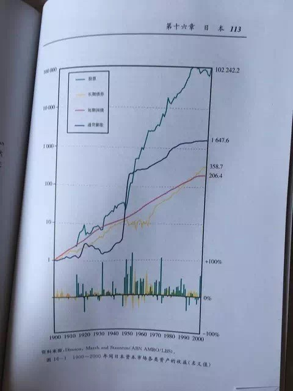
所以，在倍受推崇的（至少看过方三文和stevevai1983多次推荐过）耶鲁财神大卫 F. 斯文森写的《不落俗套的成功——最好的个人投资方法》一书中，斯文森反复强调的资产配置三大原则第一条就是：以股票为主（其他两条是：多元化，考虑税负问题）。
要点2：上市企业中的优质企业盈利增速＞全部上市企业盈利增速＞全国所有企业盈利增速＞GDP增速。这部分，老唐在去年12月的文章《股市获利的逻辑和路径》里说过，直接摘抄：
一个国家的经济运行结果一般以GDP衡量。GDP是“国内生产总值”的缩写，它指一个国家一年内新增加的产品和服务的价值总和。正是这些新增加的产品和服务，提供了人们吃穿用住行以及社会扩大再生产所需。
人类的生存和发展及其需求的不断增长，推动着GDP的持续发展。纵观人类发展史，特别是近现代史，可以清楚地做出判断，人类社会所创造的产品和服务总量是持续增长的。
国民经济是人的生产劳动成果，也由人及其组织分享。如果按照参与创造和分享GDP的主体区分，它由四个部分组成：
一是中央政府和地方政府拿走的税费；
二是参与GDP创造的个人的收入；
三是非营利部门获得的捐赠和服务部门提供的中介服务费用；
四是企业的盈利。除非某一特定时期的极端情况导致人类文明和经济倒退，否则，人类将长期维持GDP的持续增长（背后的原因，是人口增长、土地等资产的产出、交换和分工的深化及其带来的知识积累）。
显然，一国所有企业作为一个总体，不仅能够分享利润，而且所分享的利润是持续增长的。在现代经济中，一国GDP的70％左右是由企业创造的，且由于企业的盈利能力高于个人和中间组织。
所以，企业的生产经营成果不仅左右着一国GDP的结果，而且优于以GDP所反映的社会整体新创造的产品和服务价值（四个部分的加权平均值），投资于全部企业回报会高于GDP平均增长。
企业是追求收益的经济主体，没有收益，就没有企业长期存在的理由。另一方面，企业能够创造较高的收益，是因为企业这种经济组织比个人、家庭或政府有更低的交易费用支出——通过深化分工、专业化协作，以及对利润的激励和对损失的惩罚机制等原因（若有对这部分内容感兴趣的朋友，可以阅读诺奖得主、新制度经济学鼻祖罗纳德.科斯的《企业的性质》——这是他1991年被授予诺贝尔经济学奖的主要贡献）。
虽然上市公司不见得各个都是优秀企业，但由于有利润、盈利能力、后续融资可能、上市费用支出等多种条件的筛选，总体来说，上市公司收益水平高于全社会所有企业平均水平。无论是中国证券市场20多年的运行情况，还是发达国家更长时间的实践，都证明了这一点。
有研究表明，1995－2014年的20年跨度里，天朝全部企业的净资产收益率（ROE）保持着年均近10%的水平，而同期上市公司的净资产收益率则实现了年均大于12%的水平（别小看2%的收益率差距，20年时间里，12%收益率资产赚到的利润是10%资产所获利润的150%+）。这意味着，如果买下全部上市公司，将能够获得超越全社会企业平均收益水平的经营收益。
接下来的推理更简单了，所有上市公司中净资产收益率高于12%的企业，其盈利能力会高于上市公司平均。哈哈，这其实是一句废话，但往往被人忽略。这句废话意味着，如果通通都按照净资产买下所有ROE＞12%的企业，长期来看，这些企业将赚到高于上市公司整体，更高于全社会整体的利润。
这样的情况下，就意味着你只要买下全部上市公司，就基本确定盈利，而且盈利能跑过GDP增长。如果更进一步，能选择盈利能力稍好一点的上市公司购买，甚至能够赚到更多钱。
而这个其实一点也不难。正所谓「假传万卷书，真经一句话」。此处抛出一句话就足以让你超越67.09%的人，进入长期盈利的境界：
认真工作，有闲钱买入510300，静静等待中国最优秀的企业群天天帮你赚钱。
——别担心企业赚钱跟你没关系。就算不分红，市场也不会亏待高盈利能力资产的。
事实上，根据银行螺丝钉兄在《指数基金投资指南》中的计算数据，从2006年8月24日至2016年8月24日十年间，沪深300指数的年化复合收益率为11.7%。其中股息带来1.86%的年化收益，盈利增长带来14.4%的年化收益，市盈率波动收益为负值。
上面说的是轻松盈利的第一个层次，以天朝人民对财富的渴望以及当前的经济发展水平看，老唐觉得10%左右的年回报，还可以延续好些年。这个10%回报能带来什么结果呢？
假如你今年30岁，手头只有30万可动用投资款，每年还能节余3万元投入，到你60岁需要退休时，你在股市刚好积累了1000万——如果按照CPI保持3%左右的通胀速度估算，30年后的1000万，购买力类似你今日拥有410万现金。
这个回报水平，能大致保障你跟上社会发展的步伐不掉队。想走的更快，要么你今日本金比30万多，要么你每年能够新投入资金比3万多，要么继续学习提高投资能力——三者至少得具备其一。
但有了这样的轻松盈利垫底，你的工作和学习就仿佛带着奖学金一样，不仅轻松快乐，而且会很有成就感——耗时很少，收益不错，轻松赚钱，具备了正经人的光辉形象。
在此基础上，还可以考虑根据股市指数市盈率的高低，来决定追加资金的多寡，在指数低市盈率的阶段增加新投入资金量，在指数高市盈率的阶段减少新投入资金量。这部分相关内容可以参看@银行螺丝钉 即将出版的新书《指数基金投资指南》。
这个层次，有巴神深耕投资数十年的智慧大脑做背书：
通过定期投资指数基金，一个什么都不懂的业余投资者竟然往往能够战胜大部分专业投资者。——沃伦.巴菲特 1993年
对于绝大多数没有时间进行充分的个股研究的中小投资者，成本低廉的指数型基金或许是他们投资股市的最佳选择——沃伦.巴菲特2007年
例如《不落俗套的成功——最好的个人投资方法》一书给的模型。斯文森建议一个投资者应该按照「30%美国股票，15%国外发达国家股票，5%国外新兴市场股票，20%房地产，15%美国长期国库券，15%美国通胀保值国债」的比例配置资产，并在季度、半年度或年度终进行再平衡——所谓再平衡，就是使各类资产恢复初始比例。
知道这段，可以节约书钱了，全书就讲了三个问题：①建议这样配置并论证这样配置的合理性；②择时交易不靠谱；③基金行业性失败的根本原因。
以上两个层次都不辛苦，真「知」了，便会了，也就能够获取大部分的投资收益了。正如证券分析之父本杰明.格雷厄姆所说：
投资这件事有个特点，门外汉只需少许的努力和能力，便可以达到令人敬佩的结果；若试图超越这唾手可得的成就，便需要付出无比的智慧与无数的精力。
超越唾手可得的成就，需要付出无比的智慧与无数的精力。这些智慧和精力用来干什么呢？
根据自己理解的企业多寡，企业价值与市场价格的差异大小，或分散或集中构建属于自己的投资组合。
除非你对投资这件事有着高度的渴望，对研究行业、研究企业有浓厚兴趣，否则，大部分人其实走到前两个层次足够了。省下时间和精力，可以浪费到更多美好的事物上。毕竟人生只有一次，想清楚自己究竟最想要什么，可能是投资路上顶顶要紧的事儿。
话说在2000年的某一天，亚马逊创始人杰夫.贝索斯打电话问巴菲特：“你的投资体系那么简单，为什么你是全世界第二富有的人，别人不做和你一样的事情？”巴菲特回答说：“因为没人愿意慢慢地变富。”老唐画蛇添足搭个车，曰：“资本市场里，几乎所有的贫穷，都是因为想迅速致富造成的。”人生只需要富一次就好，年化20%已经足够让你和你的家庭过上富足的日子。若是你起始本金略高，这个收益率甚至可能让你富甲一方。
比如，我们模拟一位现在主要靠人力积累资本的小投资者，目前只有10万本金，每个月可以增加2500元新资本投入——这条件我估计书房读者里99%可以做到。这个起点下，如果这么投资者能做到月盈利1.5%（年化19.56%）——什么？月盈利1.5%，那也太可怜了吧，一天盈利这么多，还算勉强可以接受。许多人会这么想。
但是，复利公式告诉我们，10万起，每月增加2500元，月盈利1.5%，第一个10年结束时，资产总额有142万元。这个数字与那些一年翻几倍乃至几十倍的人相比，依然还只能算龟速，此时难免失落和寂寞，甚至也有“我欲乘风归去”的蠢动。
但是，只要你能够继续坚持原则，忍受这10年不在舞台中央起舞弄清影的寂寞，20年后你将拥有933万资产；如果是30年，资产总额会变成5655万；40年，3.38亿；50年，资产总额超过20亿……此处应该有人萌发画外音：“Kao，我（我爹，我娘）二三十年前真有10万，可是今天，唉——一言难尽！”
随着时间的推移，我们需要越来越严格地拒绝那些可能导致我们回到贫穷状态的错误，哪怕为此错过了天蓬的御风飞翔。因为年纪越大，你重新来过的机会越少。而偏偏“年纪越大，越没有人肯原谅你的穷”。
会导致我们回到贫穷状态的错误，最主要的就是两种：跟风参与自己不懂的东西+运用高杠杆。只要坚持拒绝这两种“致穷捷径”，一位投资者就已经走在阳关大道上，区别只剩下富裕速度的略快和略慢，富裕程度的略大和略小。
话说很多朋友在股市里战战兢兢如履薄冰地生存着，总是担心坐上股价的过山车，没有恰到好处地在低点上车，或者没有恰到好处地在高点下车。这种患得患失和恐惧的根本原因，在于头脑中根深蒂固地认为投资回报只能来自于股价上涨。认为不管什么体系，最终都需要依赖牛市变现才能落实投资回报。于是，难免迷信类似“会买的是徒弟，会卖的师傅”之类的伪格言。
在今年5月发表的《散打投资2》一文中，老唐转摘了雪球宁静的冬日兄的一段统计结论，阐述了「能挣钱的资产，就会有资本来争夺。这个争夺会抬高股价，从而降低了你的回报。注意，是其他抢购者抬高股价，降低了你的回报，而不是提高」理念。当时是在旅途中，凭记忆随手码字，谈的不够细，说服力或许不够强。这几日有点空闲，老唐重新码字堆数据，梳理梳理这个事儿。
梳理这件事儿，想用数字来阐述5大观点：
①长期来看，优秀企业股权的投资回报是最高的，远高于其他投资手段，甚至超过帝都那传奇的房价；
②企业股权投资者，完全可以不依赖牛市变现，也能获得优异回报；
③如果企业真实盈利增长，股价不断下跌，投资者将获得难以想象的高回报，高到令人瞠目结舌；
④因为资本是逐利的，所以企业真实盈利保持增长的情况下，妄想遇到股价持续下跌的美事，几乎是不可能的。其他资本一定会“逼你”在股价上赚钱；
⑤股价只是一个可有可无的影子，投资者要研究和关注的，是企业盈利的质量和增长。只要有盈利的增长，自然会有股价的上涨，经营是因，股价是果，盯住股价是本末倒置。
以上观点，可能比较反直觉。本文不玩虚的，数据说话。强调：本文框架源于宁静的冬日兄2015年的一个老帖，老唐只是补充数据，并将其中的道理阐述的更直白更透彻一些，原创算宁静兄的。
之所以依然拿泸州老窖说事儿，除了相对熟悉之外，还有这么三点原因：
其一是因为泸州老窖上市比较早，至今有23年，相比茅台海康海天格力等上市较晚的优秀企业，数据更丰富，更利于展示；
其二，若拿老唐最熟悉的茅台数据说事儿，容易被怼“茅台是独一无二的顶级企业，没有代表性”，而泸州老窖这家企业，市场同类竞争对手多，企业经营动荡大，在上市公司中并不算顶好类，最多算是中等偏上，有代表性；
其三是因为老窖股价波幅比较大。上市至今，仅腰斩以上的跌幅至少有7次以上，平均每三年腰斩一次，堪称完美过山车。
说泸州老窖经营情况不算优秀，可以直接引用宁静兄原帖的一段陈述：
过去二十年这个公司管理得可以说是相当的垃圾，第一届的郭董居然突发奇想要把“名酒”做成“民酒”，硬生生就把这个当初比五粮液还高端的品牌砸掉了。
第二届的袁董，表面上总算是推出了一个1573，但市场根本没有真正做起来，反倒是乱搞贴牌挺来劲，把中低端也做砸了。
第三届的谢董，张总过去几年做得有多乱大家应该很了解，不用多说。总之，现在老窖不仅被第一梯队的贵州茅台 ，五粮液越甩越远，甚至利润水平都掉到了洋河股份的三分之一。
泸州老窖1994年5月9日上市，上市当日开盘价9元，全年最低价5.7元，最高价格21.2元。假设你在1994年9月投入20万，在20元的天价位置买入1万股，买入后一个月时间，股价就跌至10.50元，这买入点够黑的吧！
——不要忙着感叹1994年没有20万巨款，你可以将其缩小为2万或0.2万，结论一样。此处使用20万的假设，是为了后面方便与买房的投资回报做比较。
现在来假设，你买入后持有不动至今，既没有在76.6元逃掉大顶，也没有在3.1元抄到大底。简单说，就是你完全忘记了股价的波动，满仓经历了所有的腰斩。你所做的，只是在每年收到分红时，直接按照当时股价无脑买入。
为方便计算，老唐假设年度分红送转均在次年6月30日当日到账，中期分红送转均在当年12月30日到账，买入一律以当天收盘价格成交。同时，保守起见，红利税一律按照10%假设（实际现在持有超过1年免税），而买入股票的交易税费则按照0.5%计算（实际印花税0.3%，交易佣金一般在0.03%）。将历年分红送转数据录入excel，并统计年度及半年度收盘价后，得出下表。图表数据量大，看不清楚的可以跳过图表看文字即可，不影响阅读。
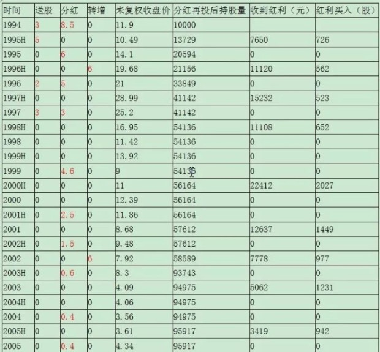
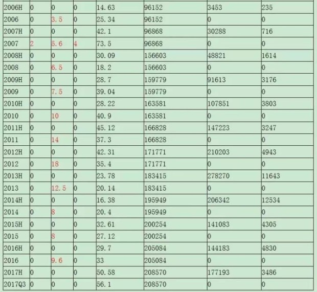
经计算，至今你持有208570股泸州老窖，按照2017年9月底收盘价56.1元计算，当前市值1170万元，23年年化回报19.35%——1170万，已经包含了全部分红在内，其中最近的2016年税后分红是17.7万元。
如果我们将回报分解，会发现19.35%的复合增长中，企业净利润增长贡献了至少17.31%，剩余约2%为市盈率提升贡献。这个17.31%是这样计算的，假设2017年净利润为22.83亿，即今年上半年净利润14.67亿+去年下半年净利润8.15亿（实际今年下半年净利润基本确定会高于去年同期），相比较1994年的0.58亿，年化增长率17.31%。
买买买，买了以后股价要是一直跌怎么办？现在，让我们模拟一场头脑风暴：假设你买入后就遇到一个长达23年的超级大熊市，泸州老窖今天的股价不是56.1元，而是1元多。为方便计算，老唐直接假设老窖股价每半年匀速下跌5%，现在的收盘价1.12元，其他条件不变。
经历一个持续23年的超级恐怖大熊市，你的20万，究竟会有多糟糕呢？请继续阅读更重要的续篇：今日第二条《散打投资14：熊市的变态级回报》，文章将用数据证明两个“骇人听闻”的观点：
①如果有幸赶上超级大熊市，你的投资回报率将高到难以想象；
②其他投资手段，甚至包括上杠杆按揭北京房产，23年的回报率也低于傻傻持有老窖股权。
现在，假设你在1994年9月以20元/股的天价买入1万股泸州老窖，接着就遇到一个长达23年的超级大熊市。泸州老窖一直跌一直跌，今天的股价不是56.1元，而是1元多。为方便计算，老唐简单假设老窖股价每半年下跌5%，当前收盘价1.12元，其他条件不变。经历这样一个持续23年的超级恐怖大熊市，你的20万，会有多糟糕呢？（可以跳过图表，直接看结论）
结论：截止今天，你持有泸州老窖1390万股，当前股价1.12元，对应市值1556万元，年化回报20.84%。比实际股价为56.1元的今天，市值多386万，年化回报高1.49%。
这不是核心。核心是2016年你收到税后红利738.79万元（若考虑实际税率为0，红利超过800万）。23年前投入20万，现在年收现金红利超过800万。此时，若有人出价1556万元，你会将你的1390万股泸州老窖卖给他吗？老唐打保票，只要你精神正常，铁定会让他看口型：g-u-n滚，三声滚……
更可怕的是，若是股价继续每半年下跌5%，预计不久的将来，你会买光泸州老窖全部股份，将其私有化退市，从而将每年数十亿的净利润装入自己的腰包。实际上，老唐还真模拟过另一个计算，若是每半年股价下跌幅度是10%，其他条件不变，你会在2009年上半年拥有超过10亿股，成为泸州老窖控股股东。并在2014年上半年，买光了泸州老窖所有股份，手头还剩余4亿多分红款没地方花。从此,泸州老窖成为你100%持股的全资子公司，每年数十亿净利润全是你的，不存在所谓分红多少的问题。至于市值，只能等每年的福布斯排行榜发布时，留给他们去估算了。
上面这假设实在美好的不像真的，事实上，它确实不是真的。这种企业真实盈利增长，而股价一直下跌的情况，不可能在现实中发生。这种变态级的高回报，你永远不要妄想。为什么呢？因为资本是逐利的，除你之外的资本一定一定一定一定一定一定一定一定一定会参与抢购，从而抬高股价，降低你的回报。这是不以人的意志为转移的经济规律——注意，是抬高股价，降低了你的回报。
这就是老唐想说的：投资者真正要关注的，是企业真实盈利的增长，只要它是增长的，股价的波动，只是给你送钱多少的区别。股价上涨导致你的短期回报上升，长期回报下降；股价下跌导致你的短期回报下降，长期回报上升——股价只是一个可有可无的影子，偶然也客串一下送财童子。
作为优质企业的股权持有者，毫不矫情地说，内心真的是不欢迎接盘侠到来。然而,无论你怎么不欢迎,他们却一定会来抬高股价,“逼迫你”收下股价上涨的钱。投资真正重要的，是寻找未来长期利润增长近似于乃至优于泸州老窖的企业，一个两个三四个，五个六个七八个……
时间是我们最好的朋友，伴随年龄的增长，伴随我们的学习、研究和跟踪，能理解的企业越来越多，所承受的行业性风险越来越小，面临局部过分高估或某些基本面变化时，可腾挪和接力的机会也越来越多。其他的，真心不重要。
但是，必须泼盆冷水：不要小看了“寻找未来长期利润增长近似于乃至优于泸州老窖的企业”的难度。理解一家企业的商业模式和竞争力所在，并确认其未来利润确定会增长，并不简单。它不是点点鼠标，看几个指标就可以搞定的。它是投资者需要一辈子深入学习的东西，是投资当中最有趣味的部分，也是唐书房日拱一卒的方向。
前面谈到了，23年前投入20万买入一家中等偏上资质的企业股权，完全忽略股价波动，通过分红再投入，当前市值为1170万元，23年年化回报为19.35%。若是运气好，股价不断下跌的话，回报率会高到令人瞠目结舌。这样的计算，必然会有朋友说，1994年的20万，是一笔巨款，如果投资别的，说不定回报更高！事实真的是这样吗？我们继续看数据。
在宁静兄的原文里，对比了存款、买黄金和买二三线房产三种情况。这里删掉存款方式——存款实在算不上投资，最近有条“厦门陈女士的1200元，存于1973年，44年过去，本息合计金额2684.04元”新闻，就是存款吞噬财富的优秀案例。这部分直接跳过。老唐增加了全款购买北京房产和按揭购买北京房产两种情况，用傻持泸州老窖的回报，分别与购买黄金，购买二三线房产，全款购买北京房产，按揭购买北京房产四种情况做对比。
黄金和二三线城市情况，直接拷贝宁静兄的原文（备注，宁静兄原文用的是21.2元最高点买入，即本金是21.2万元，所以数据会和老唐的20万元本金假设有细微差异）：
1.购买黄金：按照当时约112元一克的金价，（21.2万）可以换1.89公斤那么巨大一块。现在金价约248一克，如果把那一大块1.89公斤的黄金卖掉能换回46.87万；
2.购买二三线房产。在很多二线城市，这笔钱（21.2万）可以买两套100平米的住房（按800元一平米算，每套再加2万多元的简装修费）。当年月租约400元，2001年以后有比较明显的增长。现在属于老旧房，月租1200吧，两套房二十年算下来租金总体38.4万左右。
房价嘛，最高时可能也到过七八千一平米吧，现在作为老旧房假如要卖可能5000左右。如果卖得出去的话，也就是两套房市值100万，不卖的话，每年可收租金2.4万，相对于黄金或存款，买房还是划算多了。
3.如果运气超级好，你把房子买在北京。根据网络资料，1994年北京市刚修好三环，当时房价约4000元/㎡。全款的话，20万大约可以购买并简单装修一个45㎡的三环小套一用于出租。租金数据不详，就按照23年间累计收到的房租及其再投资回报，抵扣期间维修及三到四次简单装修支出后，净剩余100万估算吧。
根据网络数据，现在北京三环二手房房价大致是，北三环最贵，6万左右，南三环最便宜，4万出头。我们假设这套23年的老破小，今日可以按照5万/㎡出手，总价225万。加上租金再投资收益100万，合计回报325万，年化收益率12.89%。
4.如果当时更聪明，不仅买的是帝都的房子，而且还是按揭买的，可购买约三倍面积。加上房租，考虑买卖相关税费，期间的还贷，各项装修维护费用，应该可以变成1000万左右吧！23年50倍，年化回报18.54%。
傻傻持有一家仅能称得上中等偏上企业的股权，实际年化回报19.35%，终值1170万。如果期间股价下跌，回报率会更高；与此相比，即便是搭上了传奇的帝都房产牛市，如果不使用杠杆，回报不足13%，终值325万；哪怕承担更大风险，使用三倍杠杆，获得终值1000万，回报率也低于不加杠杆的傻持。
数字告诉我们的：优秀股权的投资回报是最高的，远高于其他投资手段，甚至超过了帝都那传奇的房价涨幅。事实上，上市超过20年的企业中，盈利增长水平达到或超越泸州老窖的并不罕见，感兴趣的朋友可以自行统计计算。同样，今天的A股里，未来盈利增长水平，可能超过泸州老窖的也不会少。挖掘和研究这些企业，就是帮助投资者长期盈利的“正事儿”。
不知道这么聊，各位朋友能否彻底理解巴神的「不介意买入股票后股市关闭」的说法？能否打掉部分朋友心中对股价的患得患失心态，真正建立「股票代表企业的一部分」的投资体系基石？
PS:文末附加一个相关问题。本文谈的是企业盈利增长，且分红再投入情况下的回报，可能会有人继续问：如果企业盈利很多，但一毛不拔拒不分红呢，还会有这样的高回报吗？
这个问题在理论上说，只要企业留存资金的回报率比你本人使用资金的回报率高，不分红将使你的回报更高。因为企业留存净利润及其产生的复利，依然会通过股价体现出来。但要简单明了的厘清这个道理，还是挺不容易的，限于篇幅，以后有合适的机会再说吧！
但幸运的是，这个复杂问题，恰恰好我们有条件忽略它，因为天朝证监会对上市公司分红，尤其是现金分红，有一些规则上的强制要求。我们看到，绝大部分优秀企业，都有股东回报规划，有按年现金分红的计划和历史。我们也可以在选择企业时，有意识地给分红率更多的考虑权重，从而获取分红再投入的回报。
本文近4000字，将阐述以下观点：
1）持有与买入的矛盾，一般发生在合理估值区间；
2）合理估值从来不是一个准确的数值，而是一个模糊的区间；
3）价值投资的核心特征就是占便宜，是五毛买一元，是一元卖两元；
4）因此，持有≠买入。两者决策所需证据强度不同。
网上流传一种很有说服力的思考是持有=买入，尤其是当你的资金量不足以影响市价的时候。在你持有市值100元股票的瞬间，你实际就是放弃了100元现金，同样，在你买入100元股票的瞬间，你也是放弃了100元现金的持有资格，它俩之间是等价的。因此，假设你的账户被误操作清仓了，你的正确选择是原样买回，否则你的持股逻辑是有问题的。老唐不同意此种看法。
股价明显低估区域，没有持有和买入的思想斗争，主要矛盾集中有限的钞票和满地黄金先捡哪块的问题上；明显高估区域没有买入计划，也不会产生持有和买入的思想斗争。持有和买入的徘徊，一般发生在经历一轮涨幅后，企业进入合理估值区域后。此时是持有，是卖出，还是可以继续买入，矛盾涌现了。
正因为持有和买入之争，多发于合理估值区域，所以，要解释这个问题，先得阐述什么是合理估值。合理估值，由两个词组成，合理+估值，联在一起表达的意思，是说当前股价下的公司总市值，基本等于该企业的内在价值。
总市值好懂，总股本×股价就是总市值。顺带解释一个过度小白的问题，有不少人问过老唐：多地上市的公司，总市值是不是各地市值加总？错！不是。多地上市的公司，总市值有多个，均为股价×总股本。比如一个公司在大陆和香港两地上市，同时还发行的有B股。总市值≠A股股价×A股发行量+H股股价×H股发行量+B股股价×B股发行量，而是有三个：
①以A股股价计算的总市值=A股股价×总股本；②以H股股价计算的总市值=H股股价×总股本；③以B股股价计算的总市值=B股股价×总股本。
总股本=A股发行量+H股发行量+B股发行量。当你准备购买A股时，就看①；准备购买H股时，就看②，准备购买B股时，就看③。
总市值清楚明白，是个准确数字。但内在价值就稍麻烦一点了。任何企业的内在价值都只有一个：它指的是这家企业存续期间——所能给股东创造的全部现金——的折现值。也就是说，任何人买进一家企业，一定是预期未来这家企业能给自己带来的金钱＞现在付出的金钱本利和。即便是炒股的炒家，也是在这个根基之上的衍生博弈活动，虽然很多炒家从来没想过自己究竟在买卖什么。
那么，关于内在价值，就有了三个关联概念。第一是存续期间。这个容易理解，就是这家企业从现在直到其倒闭，或者直到其不再成为一个独立的企业（例如成为其他企业的一个业务单元）；
第二是所能给股东创造的全部现金。这个现金，不是指净利润，而是即便分给股东也不会降低企业盈利能力的那部分现金，即通常所言的自由现金流。自由现金流不是一个财务概念，财报上找不出来这个科目。它是从企业获取的现金形式净利润里，减去维持盈利能力必须的资本再投入（保养、维修、必须的更新等），然后剩下部分就是自由现金流。净利润是否是现金形式，具备基础财务知识（例如读过《手把手教你读财报》）就很容易区分。但维持盈利能力所必须的资本再投入，就需要了解企业的生产经营模式、利润来源、行业竞争等因素，从报表科目里是找不到的；
第三是折现值。折现值体现的是金钱的时间价值。假如我有个确定回报率为5%的项目（例如5%利率的银行存款或者国债），那么10年后100%确定到手1万元，以5%回报折现到今天（这个5%就叫折现率），其价值只有6139.13元。如果我的确定性回报是10%，那么10年后的那1万元，在10%折现率的假设下，只能等于今天的3855.43元（手机上随便下载个复利计算器app均可计算）。
从以上三个概念的表述，我们会发现，所谓内在价值，是非常不严谨的数据，坦率说，世上几乎没有人能够准确计算出来——芒格也说，从来没见过巴菲特用计算器算过。即便我们能够穿越到未来——假设100年后这家企业倒闭的那一天，我们也只能知道这家企业100年来，累计创造了多少自由现金流（这是唯一的、确定的数据），然而，由于每个人面对的确定性选择可能有不同，会采用不同的折现率，最终这个企业的内在价值也有不同。
更何况，我们并没有能力穿越到未来。因此，哪怕我们通通采用同样的折现率，由于我们对企业存续及发展年份的预测偏差，对该企业每年能够获取的现金利润预期偏差，对企业维持盈利能力所需资本再投入预测偏差，三个偏差叠加，差异就可能非常大，即便你非常了解该企业。因此，无论你多么了解该企业，内在价值也只能是一个区间，而不是一个精确数值，哪怕是股神巴菲特或者企业CEO也不例外。先记住这个重要结论。——说到这儿，可能有新朋友会问，如此不严谨，现金流折现法还有什么用呢？非常有用，甚至可以说是全套股神秘笈。老唐在2014年3月7日出版的《证券市场周刊》上行文谈过。今年8月还特意将此文搬来唐书房存档，没读过的朋友，强烈建议点击《漫谈现金流折现法》阅读。
价值投资者购买一家公司，一定要市值“显著”低于内在价值；同理投资者卖出一家公司，一定要市值“显著”高于内在价值。是的，没有便宜占，我们安坐不动，拒绝交易。
当你以相当于内在价值的市值购买股票，等于是预期自己的假设100%正确时，可以获取相当于折现率的回报。然而，大师们的经验说，投资要预留安全边际，要考虑到可能某些假设会出现偏差，并给自己没有预料到的意外事件留有余地（还记得赌金者吗？）。
巴菲特曾这样举例来说明该观点：如果你认为一只股票值十块钱，那么九块五或者是九块七毛五都不要买，你要等价格比你的心理价格低很多的时候再买入。如果一座桥的载重量是一万吨，那你就不要驾驶一辆9800吨的卡车从上面经过，但是你可以安然驶过一座承重量两万吨的桥。这是格雷厄姆的安全边际理念。这个安全边际究竟该留多少呢？按照大师们的操作习惯，如果一只股票值10块钱，一般的介入位置在4~7元之间。预留的差额，就是安全边际，是给自己“莫须有”的错误准备的。这不是个严谨的计算，只是经验观察。
纵观人类投机史，资本市场的疯狂从来不会“恰到好处的在合理位置停下”。按照大师们的认识，人们的情绪总是在过度恐惧和过度贪婪之间摇摆，就好像一个钟摆围绕着中点（合理估值）荡来荡去，因此，大师们只在别人极度恐惧时贪婪，在钟摆远离中点的时候才下手买入。
卖出同样如此。将一元钱标价一元卖出，那可不是投资者所为。投资者来到这个市场，利用人们的过度恐惧买入，同时也别放过人们的过度贪婪。在钟摆荡向另一边卖出，获取最大化利润，才对得起自己的研究时间和投入资本。
而持有则相对简单。套用欧元之父蒙代尔的一句名言：“If it is not broken, don't fix it”。没有损坏，就不要去修它。在看不出是过度贪婪还是过度恐惧的时候，那就是it is not broken，我们don't fix it，静静等待就好。看不见便宜占的时候，维持原样不动。
在内在价值是个区间、买入需要显著低于内在价值、卖出需要显著高于内在价值的三大假设之下，我们很容易就能够理解持有≠买入。
举例说明：假如某公司，根据你的考证和认识，你很大程度确定其价值大约在70~100元之间；
此时，如果市价70元，正确决策是不买。因为假如你的判断靠谱，真的价值70元，你用70元换入70元，白白亏损交易税费，浪费金钱的时间价值和机会成本。而如果你的预计有少许偏差，可能真实价值是60元，你花了70元买进，在下一个傻子出现之前，你就是那个傻子——博傻，是价值投资者必须要戒掉的爱好。
若市场某甲因故着急抛出，要价40元，你的正确决策是买入。这保证了即便你判断上有少许误差，仍然有可观利润。当买卖完成，你的40元现金已经消失了，忘掉它。你现在拥有的是价值约70~100元之间的股票，忘掉跟40有关的一切。
此时，如果某乙出价70元，你的正确决策是不卖，因为你用价值70~100元的股票，去置换70元现金，毫无意义，完全没有利用到人性的疯狂，甚至被某乙利用了你的恐惧。于是你持有。如果某丙出价到150元以上时，你的正确决策是卖出。难点在于市场出价大于100却小于150时，这个期间，其实可卖可不卖，都有道理。因为我们无法预测市场情绪究竟会有“多”疯狂，持有或者卖出都合理，这部分是投资中属于艺（yun）术（qi）的部分。
但我们至少可以肯定，在70~100元，甚至从60~110元之间，我们只应持有，不应买入，持有≠买入。因为买入的要求条件，比持有的条件更高：买入必须要有便宜占，买入需要在合理估值区间的下沿再预留出安全边际。
也有例外，可以不用去考虑高估、低估还是合理，那就是：发现了更具性价比的投资对象。当内在价值70~100的股票，市价是50、90或是110，本应该是标准持有状态，但你确信有另一只价值100的股票，市价只有30。此时就不用考虑高估、低估或者合理了，卖掉它。
如果你理解和同意本文所说，那么你在投资领域就只剩下一门必修课了：估值。这是个日拱一卒、终身学习的领域，无论你、我还是世界知名投资大师，都在天天学习，永无止境。这门课的乐趣是，你增加的任何一点积累，都将能够通过资本市场兑换成财富。
投资市场里，盈亏同源，一个人的收益和亏损，是同一套投资体系的结果。经老唐仔细思考，支撑老唐实盘在极低换手率的状态下，获取三年三倍结果的理念体系，主要由以下九条组成——这九条均在书房成文阐述过，主要由“投资之道--投资理念”菜单下30篇文章，和“投资之道--估值方法”菜单下11篇文章构成：
①股价由企业真实盈利和市盈率两个变量决定，我主要选择“企业真实盈利确定增长+市盈率位于偏低或合理位置”的企业投资。重心是获取企业盈利增长推动的股价上升，市盈率变动视为算意外之财；
②企业盈利真实可靠，其增长“一定”会推动股价上升。如果真实可靠的盈利增长伴随股价下降，将给投资者带来巨额财富；
③做出企业盈利的增长预测，是困难的，是需要极度谨慎的。扎根于自己能够深度理解的企业，选择变量尽可能少，可预测性尽可能高的企业；
④盈利增长“一定”会推动股价上升，并不代表会推动下周、下月乃至下个季度的股价上升，它通常需要较长时间体现（经验上说，三到五年是一个常见的体现周期）。短期股价波动可能受任何因素影响，是市场的随机运动，无法预测。任何对短期股价波动的预测，都是没有价值的行为；任何建立在短期股价波动上的交易体系，都是脆弱不可信的；
⑤持股时间长，并不意味着是从事长期投资。价值投资的本质，不是坚持“长期”投资。长期或短期只是被动结果，是因为市场认识和体现价值需要时间造成的。下注市值和价值之间的收敛，才是价值投资的核心本质；
⑥市值低于价值的部分，有两大来源：一类是对现存资产价值的折扣，一类是对未来盈利可能的低估。侧重前者的，我称之为格老门；侧重后者的，我称之为巴神堂，它们构成价值投资两大核心思想流派。绝大部分成熟投资者都是两者兼顾的，差别只是权重。我个人更侧重巴神堂，巴神堂思想能够引导人随着年龄和资本的增长，越来越远离市场，用越来越多的时间去享受生活，最终走向快乐投资的良性循环——格老门可能正好相反；
⑦法币时代，历史数据和逻辑推理都能证明，股权是收益率最高的资产，远高于债券和货币。因而，除非所有股权目标均显著高估，否则老唐永远是满仓持股状态。组合设立至今的三年里，每一天都是如此，无论股灾1.0，股灾2.0，还是熔断崩盘；
⑧事实上，我也没有什么空仓半仓之类的仓位概念，一般会预留家庭一年的开支，其他部分通通做股权投资，除非找不到目标了。即便是手头的现金理财，我内心也将之视为一种确定性100%、市盈率约30倍、未来无增长的股票；
⑨企业价值不是一个精确数值，而是一个模糊区间，一个至少足以容纳百分之二三十波动的模糊区间。因此，在30%空间内的所谓高抛低吸、波段操作，在我看来，是自欺欺人，不值得关心。考虑到中国股市有10%日涨跌停限制，所以，日间盯盘，是完全没有价值的生命浪费。
三年的公开数据还不够长，而且老唐的运气似乎一贯不错，所以，三年三倍的成绩里面，究竟有多少是投资体系的功劳，有多少是运气的体现，可能还需要更长时间去观察。此处只能借机说点个人思考和观察：
以老唐个人在资本市场前后二十多年的傻碰，及无数前辈的摸索和总结，我认为建立在“①买股票=买企业的一部分，②不要将希望寄托于二级市场接盘侠，③占不到便宜就不交易”三大基础上的体系，是老唐理解能力范围以内，“唯一”稳妥可信的、具备逻辑基础的、可以持续盈利的投资体系。
这条路已经有无数前辈走通过，踏平过。路边留下了无数的方向标、指示牌、陷阱提醒。如果你的目标是财富增长，老唐强烈建议不要浪费生命探索和碰壁，不要试图重新发明车轮，只需要老老实实地沿着前辈们踩出来的路前行即可。要创新，要建立新体系，可以留待身家突破10位数以后考虑。
当然，沿着前辈们踩出来的路，不代表我们不思考。正所谓它山之石可以攻玉，雪球组合是很不错的观摩和学习对象。几百万个雪球组合中，凝聚着市场里千奇百怪的投资或投机思路，不仅是我们观摩他人实战的地方，也是我们“看他人吃一堑，让自己长一智”的好去处。只是，学习过程中要注意规避以下三种陷阱组合：
第一种，组合收益很高，但收益主要来自2015年，且交易比较频繁的。由于雪球组合功能早期有Bug，有办法在股票大涨大跌之后，以涨跌前的价格模拟成交，造就了2015年雪球的几个著名神棍，也留下了许多靠这种手段领跑的组合；
第二种，高收益，但组合持股仅仅一两只的。这种类型的组合难以评价，有些值得关注，有些不值得关注。主要原因是短期内很难判定收益来源于价值判断，还是因为恰好处于市场风口；
第三种，组合收益很高，但起初不叫实盘，是后来收益起来以后，更名为实盘的。这类里面良莠不齐，既有本就是实盘，只是起初建立的时候没有以实盘命名；也有幸存者偏差，建立一大堆组合，最终把收益最高的那个，改名为某某实盘的。
说到这儿，倒要揭一下自己的短。老唐也先后建立了八个组合，除#老唐实盘#以外，其他七个组合均已在2016年1月9日关闭，目前不点开状态下，组合名称显示为已关闭，收益从亏损17%到盈利26%都有。
逐一点开，会发现七个组合分别名叫：便宜好口碑、有真钱、分级A、高股息、双十五、只看pe1、只看pe2。看组合名和注释就知道，这些组合是用以测试不同类型策略的，策略写在说明处。后因先后涌现出的多家策略回测网站，这些组合失去观察意义，遂关闭。谈论其他组合的前因后果，是想说明#老唐实盘#组合，并非幸存者效应下的案例。
接下来逐年点评和回顾一下实盘组合三年来的具体操作。
从2014年11月25日建立组合到2014年12月31日的三十余天里，老唐将国投和老窖清仓换入了川投，其他三只主力持仓没有动。
回顾1：对于泸州老窖，老唐的感情其实挺复杂的。曾经写过不少文章谈老窖的投资价值和市值低估，甚至在2014年3月7日的《证券市场周刊》上发表文章，用老窖举例，直接白纸黑字写下：“市场在361亿基础上给予的折扣，便是送给投资者的财富”，当时老窖不到200亿市值，今天，市值近千亿了。
然而，对老窖的疑虑，产生于管理层在明知不可能的情况下，发布欺骗性的2014年业绩乐观预测，误导投资者。这个疑虑，老唐成文《老窖的成长困境》发表于2014年4月18日的《证券市场周刊》。
后来在基本能够确认疑虑时，老唐清掉了老窖——2014年4月管理层在2013年度净利润同比下降22%，2014年一季度同比腰斩的情况下，预告说2014年营收要达到116.33亿，实际年终数据是53.5亿，达成率不到50%。另外，老窖和柒泉公司之间一些说不清道不明的业绩调节，也是一个原因。
当然，如果从股价表现上说，这个排除错了。在我卖出老窖后（以组合记录看，最后一笔卖在20.77元），至今涨了三倍有余，截止今天股价在65元附近。但是，即便重来一次，我的投资体系依然会支持我做出同样的操作。
市场不好，行业不好，经营下挫，这些都是一家企业生存和发展过程中避免不了的事情，作为投资者，必须接受，其中也是考眼光和判断的地方，是黄金隐藏之所。但如果接受股东委托的公司管理团队存心不良，因私心甚至恶意，发布不实的信息误导东家，这是不可接受的。不跟坏人合作，哪怕里面有确定性利润——这是价值观问题，无关对错，就为了睡个踏实。
国投和川投之间的调仓，倒没有什么好说的，就是因为它俩实际上类似同一家公司AH两地上市，主要资产都是雅砻江水电公司股权。哪家估值相对便宜就持有哪家，我称之为搬砖。
在国投市值高于川投280亿时，我用国投换了川投。后来，2015年底，又在国投市值仅比川投高60~80亿之间时，再用川投换回国投——前一次搬砖占了200亿便宜，后一次搬砖到现在为止，还没占到便宜。今天，国投市值依然只比川投高72亿。
2015年12月24日，老唐提前写了2015年的总结。之所以提前，原因是2015年雪球高收益太多，导致很多朋友不敢动笔写总结了。老唐提前发了总结，帖子题目就叫《表怕，年终总结有老唐垫底》 https://xueqiu.com/8290096439/62405404 总结里关于投资的部分，原文摘录如下：
老唐今年股票账户的投资，就干了两件事：
其一，把A股银行搬到H股去。大致是在民生A平均溢价33%的时候，换成民生H；在招行A溢价约5%的时候，换成招行H。结果嘛，一入香江深似海，老唐从此回不来。今天民生AH溢价指数是46%，民生H是股市最惨板块--银行板块--里跌最多的银行--全年下跌超过22%；招行AH溢价指数20%，招行A全年上涨14%，招行H全年下跌1.4%；
其二，调整了近10%仓位，其中6%出头是从茅台调整到民生H，有3%出头是从茅台调整到洋河。从市值角度看，前者调亏了，后者略赚，但总和角度看，还是调亏了，毕竟茅台全年上涨33%。结论就是：两件事全错，啥也不做估计市值还会略多一点。做完这两件事以后，截止今天收益13%+，略强于沪深300的8%，上证指数的12%，远低于中小板的56%，更不用说创业板的90%了。惭愧。惭愧是惭愧，但如果给机会我重来一次，我估摸着自己依然只能这么做。没有胆子和能力去触碰自己不明白的东西，只能守住自己裤兜里的红中发财、做个傻呆呆的看客。
持股行业和去年一样，依然是白酒、银行、水电。个股除了洋河为新增以外，其他四只依然是老面孔：茅台、民生、招商、川投，占比就在组合“老唐实盘”里。且老唐自己估摸着，2016年持仓变化也不会大。
由于雪球组合不能混加AH股，所以，里面显示的民生和招商，实际是民生H和招行H，由此导致个股占比略有差异，但不大。实盘总收益也因为H落后于A，比组合显示的要低约3个百分点。
回顾2：全年除了AH搬砖以外，整体调整仓位不到10%。AH搬砖，到今天看，市值上没占到便宜。
民生银行，在民生A比民生H贵33%（25%~40%之间分批动手的，综合结果，100股民生A换133股民生H）时动手的，截止今天，民生H股价8.05港币，民生A股价9.1元人民币，133股民生H市值＝133×8.05×0.85/9.1=100股民生A，没有占到任何便宜。但如果考虑到A股的打新收益，市值上应该是吃亏的。至于多拿到的分红，也因为港股通多了一份红利税，抵消后也什么便宜占。
招行银行，是在A股溢价5%的时候搬的砖。截止今天招商H股32.65港币，招商A股30.09人民币，105股招商H＝105×32.65×0.85/30.09=96.9股招商A股，还吃亏近4%。同样，若考虑打新收益，吃亏更多。
AH搬砖问题，算是投资体系的一块试金石。当AH出现较大价差的时候，是否选择价格更低的品种，体现了投资体系中，究竟是更偏重于股票的票属性，还是更偏重于股票的股属性（股和票的区分，请看书房去年9月推送的《股票的本质》一文）。
可以这么说，凡是声称价值投资、基本面投资、股权投资的，却持有民生银行A股而不持H的，无法逻辑自洽。同样的金钱付出，多持有33%股权而不搬，非夹头所为。但具体是选择在15%还是50%搬，是占市场先生的便宜大小问题，更多体现为艺（yun）术（qi）成分。
今日回顾，2015年内，“其中6%出头是从茅台调整到民生H”这一行为做的有点莫名其妙，应该反思。忘记了当时是什么原因调整了，估计是某个民生H大跌的日子，去贪便宜了。这种喜欢从获利较多的股票上减仓，去增持大跌或持仓较少的股票，是一种股市多发病症，不仅老唐有，估摸着书房里不少朋友都有。绝大部分结局是铲花扶草，极少部分结局是英明抄底。后者往往记忆深刻，回味无穷，前者则容易被大脑选择性过滤（不是主观故意，而是大脑真有这种自我保护的生物性功能）。
总体来说，个人目前对这种行为的看法偏负面，会尽可能控制和克服。在决策时，尽可能少受近期涨跌幅的影响，更多的在市值和内在价值的差距大小上考虑，并在无法看出明显差距时，尽量呆坐不动。
时光进入2016年。2016年9月建立了唐书房，所以2016年终总结，书房里也有了《老唐的2016年》。总结里关于投资部分写到：
数字一：23%，是今年不含新股在内的股票市值变动。
从今年2月到12月，除了用各家企业的分红买入了国投电力以外，其他调仓不足市值的2%。1月份里动的略多，不仅将当时占比约14%的川投全部换成国投，且曾卖出约4%的招行换入国投。
作为一个死多，全年每一天都是满仓，熔断也好，股灾也罢，笨老唐一次都没有躲过，通通满仓陪跌。当前持仓依然是茅台、国投、民生H、招商H、洋河、信立泰、双汇。
回顾3：在2016年里，如果不考虑两投搬砖，调仓部分也不到10%。为配置深市打新门票，增加了信立泰和双汇，同时还在2016年1月底，国投跌破6元的时候，卖出4%的招商H买入国投。
虽然狗屎运巨好，抄到国投最低点，距今有超过35%的涨幅（经历了两次分红0.48元/股，复权价不到5.6元），然而，由于招商H股价翻倍有余，这笔换股，从市值角度依然是负贡献。但，在国投最恐慌的时候，换做现在穿越回去，可能还是会做这样的腾挪。总体来说，2016年的操作，虽然收益只有23%，但在自己有限的理解对象和投资体系下，基本满意。
2017年，由于有了唐书房，基本上全部交易，都在书房实时直播过。
由于2016年的总结里计划过：“2017年，老唐希望能继续拓展自己的能力圈，将目光放在白酒、银行和水电之外的行业，看看有没有自己能够理解的企业，有没有自己能够把握的机会，有没有能够继续深度研究并分享的新对象。”
所以，2017年覆盖面稍有扩大。这要感恩各位，是各位的点杀、赞扬和打赏，一步步引导老唐走出原来的白酒、水电和银行圈，将视线放在了更广阔的范围内，持股也新增了腾讯、海康、古井贡B、粤高速B四只。
也因此，2017年的交易稍多，仓位调整也稍多。最烂的操作，当然是为了出游，在340~350之间，卖茅台换车。这已经是大家调侃我的梗了，说别人是豆浆喝一碗倒一碗，老唐是买车买一辆扔一辆；第二烂的操作，是后来又在477元卖了点茅台，搞房屋装修。两次都跟阿茅有关。
回顾4：要说完全没有遗憾，那肯定是言不由衷。但要说后悔，还真没有。投资体现能力，消费实现价值。人活一世，不可能只为账户数字的增加，拒绝自己及家人的适度享受。而当时，从我的持股中找一只来杀，除了阿茅我找不出选其他家的逻辑——天哪，为什么找不出呢？笨就一个字，我只说一次，你知道我只会用行动表示……
坦率说，阿茅会涨，在预料之中（这个不算装股神吧），但会涨到这样的状态，确实超出了我的想象（我顶多也就看到年内到达480元附近），相信也超出所有人的预料。要是谁现在敢说年初能想到茅台会过600，老唐不会唾口水，但肯定会在心中默念“骗纸骗纸马后炮”……
以当今我国的人均预期寿命76.5岁（人均预期寿命80岁以上的国家有24个）计算，30岁左右的樱桃之王和50岁左右的飞翔铁，或许本应该还有三五十年的投资生涯。50年的15%，是千倍回报；40年的15%，也有268倍回报；30年的15%，是66倍……我们当中绝大多数人，都可能还有30年至50年的投资生命。好好呵护自己吧！这是“对自己重要的东西”。如何呵护？我觉着从忘记虚拟利润开始，会是个非常有效的办法。
什么是虚拟利润呢？在上周一老唐发布的《持有等于买入吗？》一文的留言区里，有位朋友留言说：
这个问题本质上等价于：浮盈是否和本金无差别。若承认无差别，那么持有=买入；反之，若认为持有≠买入，则必定认为浮盈和本金有本质差别，那么很不幸，行为金融学告诉我们这是掉进了心理账户和锚定效应的坑里。个人认为持有=买入，即浮盈和本金没有区别。
这种想法，才恰好是“心理账户和锚定效应的坑”，其带来的最常见结果就是不甘心回吐利润。随着股价上涨，浮盈增加，自我感觉财富增加，开心快乐；股价下跌，浮盈减少，自我感觉财富被掠夺，痛苦伤心。
“浮盈”就是一种虚拟利润，是一种财富幻象。在《手把手教你读财报》96页，老唐曾经拿中石油举了个例子，原文说：
公允价值带来的增值，很可能只是存在于幻觉中的虚拟财富。如同你打高1分钱买100股中石油，总投入约800元，却能使中石油公司市值增加超过18亿元一样。
——找到这句的时候，突然发现，三年过去了，中石油股价还在8.34元，依然可以用八百多元让股东增加18亿“浮盈”——果然是问君能有几多愁，恰似满仓中石油！
有些事情上，我们非常理智。馆子里有个醉鬼，出价10万元买一瓶茅台酒，我们不能立刻将茅台公司里库存的20万吨茅台按照10万估价，算出库存价值40万亿；小区里有套房因为某种猫腻，按两倍市场价成交了，你不会马上认为自己身家翻倍了……但是很奇怪，到证券市场上，这种理智就不见了。只要有人多出一元钱买了100股，就会有很多人立刻觉得自己的10万股赚了10万元，如果此时有人又降低了一元抛出，好似自己口袋里那一万元丢了一样难受。
一个月以前的10月27日，茅台暴涨，最高涨至655元，收于649.63元。当天老唐顺手记录过，日记里这样提到：“好疯狂，阿茅昨日上涨7%，今天继续上涨7%，这速度简直吓人，疯起来刹不住车啊！”好巧，11月27日的账户总市值，居然和10月27日账户内总市值几乎一模一样（差别不足一万）。
假设老唐因某种原因一个月没有机会看过账户，今天打开它，看上去就是纹丝没动，市值处于历史新高，简直值得喝一杯。然而，我们待在市场的人感知到的是茅台暴跌！从高点720跌到昨天低点613，下跌超过100元，跌幅高达15%，对某些朋友来说已经是肠子悔青。其实后台已经有好几位朋友问过老唐，为什么700元的时候不卖？不仅茅台，最近海康、洋河、古井贡B，自高点的跌幅均在15%~18%之间，也都面临同样情况。
一种认识是历史新高，一种认识是肠子悔青，产生两种状态的区别是什么？是茅台曾经到过720元，是海康到过43元。推到极致来看，背后的原因就是：别人的1分钱买卖，使你的18亿得而复失。“我的18亿”飞了，所以我悔，我痛，我难受……
同样道理，为什么有那么多每天日间盯着曲线图热衷于做T的朋友？我觉着，可能在他们眼里，那一根根上下晃动的曲线里面都是钱，忍不住想伸手进去把它捉将出来。是啊，如果在9000亿出清茅台，如果在4000亿出清海康，如果……现在重新捡回来，短短的两三周内就获取了超过15%的利润，这样的美事，老唐，你为什么不做呢？
想啊，怎么不想。市场里的每一分钱，我也想捡回来。但无数次碰壁的经验告诉我，只要我起了这个念头，结局一定是我能捡到的钱更少，甚至是我口袋里有限的金钱，会洒落一地被别人捡走。于是我呆坐默诵：观自在菩萨，行深般若波罗蜜多时，照见五蕴皆空，度一切苦厄……远离颠倒梦想，究竟涅槃。
不仅如此，更重要的，我知道，为了捉住那些虚拟利润，我可能需要付出超过当前十倍乃至更多的时间和精力，去研究更多的数据，去观察更多的市场情绪，去盯更多的盘以获得所谓盘感，去观察和分析分时线波动及成交数据，去揣摩每一笔买卖背后隐藏的对手……
一个投资者的行为，一定是由其投资体系决定的，什么样的投资体系，必然催生什么样的行为。比如巴菲特所提倡的跳着踢踏舞去上班的理念，就是建立在“①买股票=买企业的一部分，②不要将希望寄托于二级市场接盘侠，③占不到便宜就不交易”三大基础上的——见《三年三倍的背后（上）》有了这三大基础，当我对企业的内在价值做出一个大致估算后，心态上，自然就如同那副著名的对联：宠辱不惊，闲看庭前花开花落；去留无意，漫随天空云卷云舒。
庭前花、天外云，就是那市场里穿梭忙碌的接盘侠，随着季节交替或者风向变幻，来了又去，去了又来，这是不以任何人意志为转移的经济规律，是在贪婪和恐惧双重驱动永远不变的人性。作为企业投资人，坚持“没有让我满意的便宜占，我绝不将优质企业股权交给他们”的立场。这一次接盘侠的出价，所包含的“便宜”不能让我满意，我就等花落后再开、等云散后再聚。
反正我闲看花开、漫随云卷的每一天，我的企业不停地在给我盈利——比如在刚刚过去的十天里，一边是股价下跌，一边可以计算的是，阿茅又给股东们赚回来至少七亿现金。再跌一个月，我的股份一股没少，阿茅还会额外多赚二三十亿现金回来，这个我几乎100%确定。
企业经营获得的净利润，将会分为XY两部，X部通过分红回馈股东，Y部会等下一次疯狂时，接盘侠们抢着乘以三十、四十或五十甚至更高的倍数出价求你卖给他们。想明白这一点，你一定会期望接盘侠晚点来，再晚一点来，等我的企业把Y垒的更大以后再来……正因为这样的思想，你才能够在这张图的波动中呆坐不动（2014年1月至今茅台股价图），你才能够抵御在200、300、400、500、600收割的诱惑，因为你心中有价值锚，因为“便宜不够明显，不够大”，因为你不在乎这波接盘侠跑了，因为你知道花落还会再开，他们走了还会回来……
拒绝虚拟利润的诱惑，坚决拥抱优质企业股权，只有在明显有足够大便宜占的时候才出手，其他时间静静享受生活，这就是老唐今天想跟各位说的。手绘一张示意图（随手乱画，凑合看）：
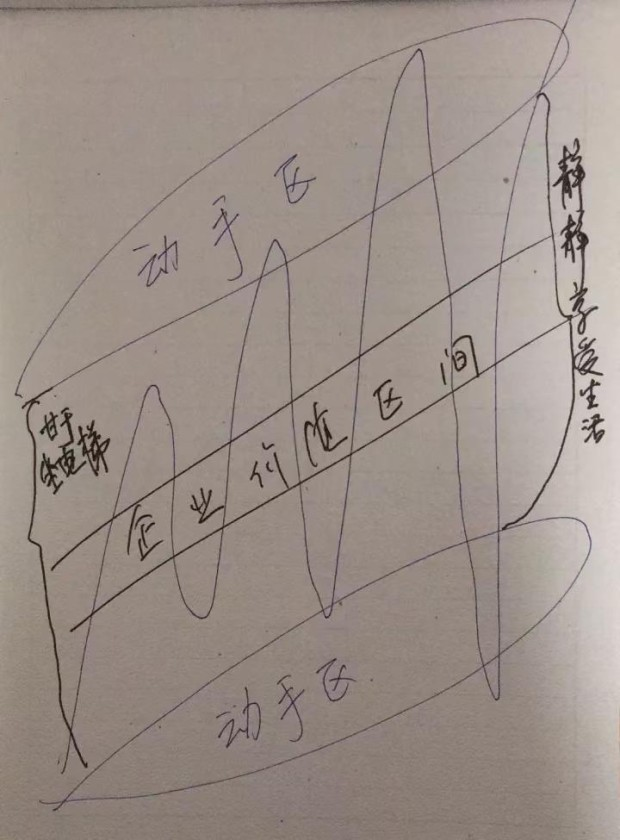
寻找一个企业价值会向东北方向斜向发展的企业，在下沿之下和上沿之上，划出让自己满意的“便宜”，有便宜薅一把，没有就静静享受生活，等待企业价值区继续向东北挺进。Over，这就是老唐理解的投资之全部。
自己了解的公司转债以及溢价率低的还可以申购，其他的不建议参与。因为原本申购的逻辑是有傻蛋接盘，现在傻蛋不在了，你再去就只能做他们的板凳。同样道理，今天的新股申购也是冲着傻蛋去的。若有朝一日，新股上市破发，无脑申购也要改。与时俱进吧，各位！
每天都有人操心涨跌停板、天量地量，每天都有人关心大盘牛熊、世界经济，每天都有无数的媒体大V讨论某题材的风生水起，每天都有人开心于今天赚了5%或痛苦于割了3%……这无数的参与者，构成了资本市场热闹非凡的大舞台。然而，这些通通是“没有任何效益”的操心。将时间投入到这些涨涨跌跌之中，是对生命的浪费，对智慧的侮辱，对家庭的不负责。在老唐看来，一个人进入股市，只要真正想清楚以下四个问题，就完全可以彻底摆脱亏损，剩下的只有赚多和赚少的区别：
除非迫不得已，否则绝不能让我们用劳动（体力劳动或智力劳动）辛苦换来的财富，以货币形式存在。原因很简单，货币本身（无论是纸质的还是电子的），不产生任何价值，且每天24小时1440分钟86400秒都有人不停的从你的账户上偷走它。
无数顶级大师用他们的智慧和实践，已经给你我证明了资本市场短期价格波动是无规则布朗运动。数百年来，没有任何可信证据，证明资本市场里有人依靠掌握价格短期波动秘密成为巨富。
股市不能解决你明天买肾叉的问题，不能解决你下半年换车的问题，甚至也不能解决你明年买房的问题。如果你是上帝赐光、活佛摩顶、观音加持的幸运儿，去赌场或者买彩票兑现速度更快。反之，长期年化收益率还是寄托在10%~25%之间比较现实。
除了现金等价物以外，我们可以投资的还有两大类：具有生产力的资产和自身不产生收入的投机品。前者由资产本身产生的收入大小和市场情绪两者共同决定价格，后者则仅由市场情绪决定。
情绪这东西，波动幅度很难确定，但有一点却是可以确定的：它会如钟摆一样，周期性地从这边摆向那边，中点就是市场无风险回报率。
所谓无风险回报率，通常我们用政局稳定国家的长期国债利率水平确定（例如10年期国债）。当前我国10年期国债利率水平大约是4%。4%的收益率换成习惯估值术语就是25倍市盈率（收益率=收入/本金，市盈率=1/收益率）。
当人们情绪乐观的时候，会看好国家经济，高估企业未来所能赚到的利润，就会给出高于25倍市盈率的估值。此出价代表着金主的发言：某股权虽然今年只产生3元净利润，但是，由于预期企业盈利能力会变得更好，明年会赚5元，后年会赚7元，总和下来比每年4元的国债收入高。因此，值得我支付100元甚至更高的价格去买。反之，情绪悲观的时候，对于赚4元的股权，有可能只愿意花50元去买，因为认为它明年后年连4元也赚不到。
这就是市场规律，不深奥也不简单，既有确定性也有难以预测环节。难以预测的是钟摆的两个高点究竟能偏离中点多远，可以确定的是钟摆一定会再次经过中点。在千年不变的恐惧和贪婪下，市场情绪总是周而复始的摆来摆去，因此，企业盈利水平就成了驱动投资回报率长期变化的决定性因素。
被巴菲特誉为西海岸哲学家的查理.芒格说过：从长期看来，一只股票的回报率与企业发展息息相关。如果一家企业40年的净资产收益率（Roe）一直是6%，那40年后你的年化收益率不会和6%有什么区别，即使当初你买的是便宜货。如果企业的净资产收益率一直是18%，即使你当时出价较高，其回报依然会让你满意。这段话，有点反直觉，似乎买价高低，与回报关系不大，与许多知名投资者强调的“关键是买的便宜”，有巨大的冲突。
正好，雪球编程浪子兄上个月列表算过一笔细账，数据计算的结论是：投资时间越长，Roe的影响权重越大，估值变化影响权重越小，收益越接近Roe。基本上40年后，估值变化的影响就忽略不计了，收益大约等于Roe。老查理没骗人，数据推算比直觉靠谱。具体数据，感兴趣的朋友可以上雪球搜索@编程浪子的《要质量还是要便宜？》一文。
在对和贵之间，如何选，给谁更多权重？这是价值投资群体争论比较厉害的话题。截止目前，老唐个人的看法，更偏向于首先考虑是否买对，其次才是考虑是否买贵。选择对错是生死问题，而便宜贵贱却可以被时间治愈。
在这种考虑之下，公司实际上可以用好坏和贵贱分出一个九宫格：
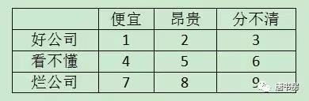
总体来说，好公司+便宜的1类是印钞机，2和3是备选印钞机。456是学习对象，89一脚踢开，7是争议比较大的投资领域，老唐个人建议尽量不碰。
什么是好公司呢？企业未来会继续赚到更多钱的公司就是好公司，它也可以分为两大类：①历史数据很赚钱，未来照样会很赚钱；②历史数据虽然不赚钱，但未来会很赚钱。鉴于研判未来难度相对较高，我个人更偏向从历史数据很赚钱的公司当中寻找投资对象。
前面三条解决的是①持股还是持币？②长期还是短期？③关注好公司还是烂公司？合起来就是投资建议：“长期持有高Roe公司的股票”。那么，究竟是集中买几家甚至一家好公司股票，还是分散购买多家好公司股票呢？对于这个问题，老唐的建议比较简单：从分散入手，逐步集中。
此话怎讲呢？极度的分散就是指数投资。购买沪深300指数基金，相当于将沪深股市里公认的好公司一网打尽。每年的指数成分股调整，就是专家帮我们优胜劣汰的过程，保证我们始终持有市场里Roe领先的企业。因此，长期来看，我们的收益率自然也就是市场领先了（投资收益率无限靠近roe）。这叫做从分散入手。
如果再配合“高估值时少买，低估值时多买”手法，想不赚钱也难。高估值少买，低估值多买，有两种实现手段：一种是关注指数估值，划定一个范围，例如15倍pe以下多买，30倍pe以上少买；另一种是选择定额定投，坚持固定时间、固定金额买入。金额固定，天然做到了贵时少买、便宜时多买。时间固定，则抗拒了市场干扰，克服了恐惧和贪婪。
那么什么又叫逐步集中呢？在投资指数基金的期间，我们还可以研究企业。还记得上面那张30岁30万的财富表格吗？年化收益提高5个点，财富差异会大到令人吃惊，这是高薪学习啊！与之相比，完全值得你从目前一个月几千几万薪水的岗位上，匀一点时间过来。通过阅读财报、阅读研报，思考和分析，当我们认为自己能够基本看懂某家企业，且价格合适时，我们就可以在指数基金之外，适当增加部分资金投入，单独购买该企业。如果我们日拱一卒，每年能看懂一家企业，集中度慢慢就会增加，就会逐步从分散到集中。
什么叫看懂呢？
摘抄《看得懂与看不懂》原文，当你能够回答下面四个问题时，就代表看懂了这家企业：
①这家公司靠销售什么商品和服务获取利润？
②它的客户为何从它这里采购，而不选其他机构的商品或者服务？
③资本的天性是逐利。眼看这家公司坐享丰厚利润，为什么其他资本没有提供更高性价比的商品或服务，抢占了它的市场份额，或逼迫它降低利润空间呢？（更高性价比，即可以是同样质量/数量+更低价格，也可以是同样价格+更高质量/数量）
④假设同行挟巨资，或者其他产业巨头挟巨资参与竞争，该公司能否保住乃至继续扩张自己的市场份额？
持股还是持币？做长期规划还是短期打算？关注好公司成长还是烂公司炒作？集中持有还是分散多家？这就是老唐心中真正有操心价值的投资“大”问题。别去操心其他没用的问题，你就已经赢在了起跑线。将这四大问题想清楚，剩下的不过就是快乐阅读，享受生活，轻松等待，愉快变富，变的很富，forever……
老唐曾写过，自己的估值方法其实很简单的，一句话就可以说完，不值当为此写本书。那就是：“预计三年后15倍市盈率卖出能赚100%，就可以买入，高杠杆企业打七折”。这是老唐对未来现金流折现法穷追到底的思索后，所理解的未来现金流折现法的最简版本。在2017年，我将其细微的调整为“预计三年后15~25倍市盈率卖出能赚100%，就可以买入，高杠杆企业打七折。”
那么，这简单的一句话究竟怎么运用呢？这里面至少涉及六个事关投资体系存亡的重大问题：
①为何是15~25倍市盈率，不是其他数字？
②买入后继续跌怎么办，为什么？
③为什么是100%，而不是180%或50%？
④为什么是三年，不是一年或八年？
⑤三年后的真实净利润如何测算？
⑥到15~25倍市盈率就卖出吗？
我们参照被捞起来的老帖，用过去几年里发生在我们身边的真实经历，来逐一细聊这六个问题。先看第一个老帖，发于2012年12月10日，正是塑化剂事件喧嚣的时候。内容如下：
假设在茅台在台湾塑化剂事件以前生产的所有的酒都含有塑化剂。那么最坏情况意味着茅台2013~2015年无酒可卖，只管生产。
2016年开始卖2011年的三万吨，假设2016年不提价，按照819元每瓶供应市场，再假设市场三年无茅台处于饥渴状态或已经遗忘塑化剂风波（注意，是否认同此假设，自己拿主意），3万吨可以卖完。
那么收益约为今年的两倍，即27元上下。市场2016年愿意为一个每股收益27元的股票定价多少？以这个价格折现，多少钱现在买入划算？老唐此时这么算账。
顺带说一句，把7万吨存酒加上茅台的品牌和生产设备、人才、渠道以及一百多亿现金，估作最坏情况下茅台的净资产吧！
2012年茅台公司净利润133亿。我帖中的估算为2016年净利润实现翻倍，实际上2016年报表净利润仅167亿，估计2017年年报才能实现翻倍，误差不可谓不小。不过，如果考虑到2016年实际上保留了高达174亿预收款——约当年营收的近四成——没有计入营收，2016年真实净利润可以按照同口径230亿左右考虑，实际误差大约有20%。这个数据估算差异，不是很重要。重要的是方向，增长还是衰退？这方面，首先求方向的正确，其次求数据的接近。即便退而求其次，数量差异不是很大，得到模糊的正确亦可。
估算出大体靠谱的三年后真实净利润数据，然后用三年后的真实净利润，乘以15~25倍市盈率，三年后的总市值就有了。对照当前市值，收益率是否能让自己满足。是，就下手；否，就放弃。决策，就这么简单！比如2012年12月10日发帖时，茅台的市值近2000亿。我估算的三年后净利润约270亿，对于一个毛利率超过9成，没有应收账款的企业，若届时市场给15~25倍市盈率，那么就意味着2016年的市值约4050~6750亿。对比当前市值不到2000亿，获利空间超过100%，下手。
接着问题①就来了：为什么你认为三年后市场会出现15~25倍市盈率。如果没有呢？比如届时茅台的市盈率是5倍甚至3倍，即便你270亿净利润实现了，总市值只有800~1200亿市值，你依然亏损过半。怎么办？——是不是问到你的心坎上了？哈哈。
为了更清楚的说明这个问题，我们先假设一个简单到弱智的问题：假设工商银行发行了两种面值百元的一年期债券，各项条件都一模一样，只是甲债券利率是5%，乙债券利率是8%。此时，你恰好有100万闲钱来二选一，你会买哪种？这当然是个蠢问题，毫无疑问你会买乙债券。
那么，继续想，如果在自由交易的情况下，且交易税费为0，若甲债券市价是100元，你认为乙债券的价格会是多少？不难计算吧，因为乙债券一年期满后工行还你108元。所以，就是求出付出多少本金，按照5%的收益率，一年后连本带利收到108元即可。105%x=108，x=102.86元。也就说，乙债券的市价必将以迅雷不及掩耳盗铃之势，拉升至102.86元左右。否则，一定有资本抛出甲债券，买入乙债券，获取更高回报。同样，假设乙债券价格超过102.86，就可能引发资本抛出乙债券，转而买入甲债券，从而使两者的市价比例钉死在100:102.86上（或者说是105:108）。
这就是传说中的资本永不眠。在你工作的时候，全球数以万亿计的资本在寻找更高回报；在你开黑的时候，全球数以万亿计的资本在寻找更高回报；在你吃饭睡觉蹲坐马桶的时候，全球数以万亿计的资本在寻找更高回报……无论定价错误有多么细微，只要确定性够高，就会被资本利用足够高的杠杆抹平。还记得《赌金者》里的长期资本吗？他们就干这个。
资本追逐的究竟是什么？你我在股市买卖的究竟又是什么？全球无数企业每天的并购活动交易的是什么？全世界数以亿计的投资者，买进卖出不同投资对象，是什么驱动他们行动的？追根到底就一句话：寻找潜在回报更高的资产。工厂是资产，土地是资产，黄金是资产，美元是资产，日元是资产，人民币是资产，债券是资产，股票是资产……无数资本每天在全球产生天量交易，就是为了将资本配置到能够带来更高回报的资产上去——当然，决策一定有对有错，所有人的意图都是寻找潜在回报更高的资产，但经过时间剥皮，总有部分人最终事与愿违。
好了，重新回到那个简单到弱智的问题上，现在有一份100%确定年获利270亿的资产丙（注意，我此处假设的是100%确定，实际并不如此，后面说），售价800~2000亿，年回报率13.5%~33.75%。同时，全球还有数以万亿计的资本，拿着约5%的回报（存款、理财、货基、债券等）。资本市场会发生什么？答案毫无疑问，必定有资本卖出原资产，买入资产丙，直至将资产丙的市价推高到对应回报5%的位置，即5400亿——这就是所谓“价值从不缺席，它只是偶尔迟到”的底层原理：同样盈利能力的资产，定价必定一样。如果不一样，资本一定会挺身而出将差异收入囊中。
此时，15~25倍市盈率一定出现的原因就跃然纸上：因为国内无风险收益水平大约在5%左右波动（以长期国债收益或银行保本型理财收益为参照标准），毛估估采值4%~6%，对应市盈率就是15~25倍（市盈率是收益率的倒数表述）。
这是说：如果一家企业的收益同时满足三个条件①收益100%确定为全现金利润（不是60%现金，也不是120%现金），且②未来不会变动（不会增长，也不会衰退），且③利润全部分给股东（因为没有扩大投资的空间），那么它的市盈率一定会和无风险收益投资的市盈率持平。如果不平，资本会逼它平。当无风险收益率水平为5%的时候，这家企业的市盈率一定是20倍。
然而，企业股权不是标准债券，它的未来没有用条款清清楚楚写在纸上，“Yesterday is a history, tomorrow is a mystery”，它几乎不可能同时满足上述三个条件。人们总是由于信息、知识、判断力和情绪的影响，或者高估其未来盈利能力，或者低估其未来盈利能力，从而引发市盈率以无风险利率水平为中轴大幅摆动。
悲观的时候，远低于中轴，乐观的时候，远高于中轴，幅度不定。唯一能确定的是，人类之所以继续存在，就因为在历史长河中，从不会一直悲观到死，也不会一直乐观到上天，人们总是在否极泰来和乐极生悲中摇摆。这就是“市场会出现15~25倍市盈率”的原因，只要真实利润判断正确，资本的逐利性一定会将其推高到15~25倍市盈率水平。
如果没有呢？如果没有，那就是天降黄金，有桶拿桶，无桶拿盆。盆盆罐罐全部装满，就静看花开花落、云卷云舒……
这就是老唐要解释的第二个问题了②买入后继续跌怎么办，为什么？这个问题没有人讲的比本杰明.格雷厄姆的市场先生寓言更透彻，老唐直接照抄：
投资者可以试着将股票市场的波动当作是你身边有一位和善可亲的人，他的名字叫“市场先生”。他是你的生意合伙人，每天从不缺席地出现在你的身边，不时会报出一个价格：要么是想买下你手中的股份，要么想把他自己的股份卖给你。
即使你们所共同拥有的生意很稳定，市场先生每天还是会固定地给出不同的报价。遗憾的是，这个可怜的家伙有个毛病，那就是情绪很不稳定。
当他高兴时，往往只会看到影响生意的利好因素。此时，他会给出一个很高的报价，因为他害怕你会把他手中的股份买走而剥夺他即将到手的收入。当他沮丧时，在他的眼里——无论是生意还是整个世界——都会变得暗淡无光，看不到任何希望。这时他就会给出一个非常低的报价，因为他害怕你会把手中的股份卖给他。
市场先生还有一个很可爱的特点：他不在乎被冷落。如果今天他提出的报价不被接受，第二天他会重新上门给出一个新的报价。是否与市场先生进行交易，选择权完全在你的手中。基于此，我们可以说他的行为举止越是焦躁不安，对你就越是有利。
沃伦.巴菲特也用一个农场故事，重新演绎了恩师的市场先生寓言，他说：
如果有一个喜怒无常的人拥有一个农场并恰好与我的农场相邻，每一天他都提出一个报价，或是想买入我们的农场，或是想卖出他自己的农场，价格则随着他的心情好坏而忽上忽下。
那么我除了利用他的疯狂还能做些什么呢？如果他的报价低得可笑，而我又有些闲钱，我就会买入他的农场。如果他的报价高得离谱，我要么把自己的农场卖给他，要么不予理会继续去种自己的地就是了。
也正因为此，每当有人问我某某股票为何跌或者为何涨，或者问我为什么有利好还跌或有利空还涨的时候，我都很无语，不知道该如何解释这种浪费脑花+无解的诺奖级别难题
而当有人问我：价值投资真的适合A股这样一个充满投机气氛的市场吗？老唐通常直接给出答案：越是投机盛行的市场，越是适合价值投资。因为股价会在两头都更加远离价值，我们将有机会以更划算的价格买到，以更高估的价格卖出——顺带说一声，全球所有的资本市场，都是投机盛行，天朝股市参与群体并不比歪果仁群体更冲动或者更理性。
六大问题，上篇4000多字解决了俩，还剩四个：③为什么是100%，而不是180%或者50%？④为什么是三年，不是一年或八年？⑤三年后的真实净利润如何测算？⑥到15~25倍市盈率就卖出吗？咱们且听下回分解……
原因非常简单，三条：
A. 三年100%，年化回报约26%，已高于世界头号股神巴菲特的长期年化收益记录，再高的长期记录目前人类还没有。
B.如果真能做到长期年化26%，估计等我离开人世的时候，财富数字将大到以千亿为单位。鉴于我的判断一定会有错，所以我虽追求12%，但以26%为目标，其间的差额，是预留的容错空间。
通过预留容错空间，达到即便部分估算错误，或者价值回归所需时间比预想的长（例如茅台实际到2017年才做到270亿左右净利润，比我2012年预想的晚了一年），也能获得基本满意的收益率。由于要保留一定的容错空间，所以，类似三年50%之类的较低目标，就被排除了。
C.图方便。反正是毛估估的，无需那么精确到92.36%或者149.31%，大致100%，利于迅速口算决策——这条理由是不是有点搞笑呢！
这个还确实没什么理由，纯经验成分。经验说，资本市场里的恐惧、遗忘和贪婪，大致在三至五年时间段里，完成交替，所以就武断地选了这么个时间段。
早在去年六月的一篇书房文章里，老唐写过了利用最简单的市盈率完成估值的三大核心因素：“净利润数据是否为真？未来能否持续？持续是否需要依赖加大资本投入？”并开玩笑地指出“会看市盈率高低，是小学生技能。但懂的在什么情况下才能使用市盈率估值，恐怕至少是中专生技能”。
市盈率是投资回报率的倒数，投资看投资回报率是天经地义的事情。但是，由于会计规则和商业模式的缘故，同样的净利润数据背后，可能是天差地别的公司经营状况。因此，我们在使用市盈率快速估值的时候，一定一定一定要先慎重思考这三个核心问题，并牢牢记住不是所有的公司都适用市盈率估值，绝对不可以看一眼市盈率为5或100就轻率地做出低估或高估结论，那其实和电视屏幕上看图说话的股评师是五十步笑百步的关系。
三大核心问题中的“净利润数据是否为真？”是分析历史数据的技术活，虽然不算轻松，但稍微花点儿时间，完全不难。《手把手教你读财报》整本书讲的都是这个，正如手财副标题：财报是用来排除企业。——注意，这里的净利润数据是否为真，并不单指造假问题。还指有些公司由于商业模式和产业链地位的问题，赚取的利润可能只是账面数字或不可信假设下计算出来的理论数字，无法变成可供股东支配的真金白银。
排除造假公司以及利润难以变成真金白银的公司，核心是应收账款、关联交易、经营现金流和投资现金流等数据分析，这些内容手财里都有，此处就不展开了。唯一提醒的是：排除企业和确认造假不同，前者疑罪从有，后者则要求严格证据。我们是做投资的，不是警察。所以坚持疑罪从有，有疑不投即可。投资行业最大的好处是，没有人因为你不投某企业而罚你退场。
投资真正的难点，在后面两个问题“未来能否持续？”、“持续是否需要依赖加大资本投入？”。这两个问题，需要真正看懂一家具体的公司才能做出判断。那，怎样才算看懂了一家公司呢？
在去年5月的书房文章《看不懂与看得懂》里，老唐归纳了四条：对于一家公司，能明确回答以下四个问题，基本上就可归为看得懂。
①这家公司靠销售什么商品和服务获取利润？
②它的客户为何从它这里采购，而不选其他机构的商品或者服务？
③资本的天性是逐利。眼看这家公司坐享丰厚利润，为什么其他资本没有提供更高性价比的商品或服务，抢占了它的市场份额，或逼迫它降低利润空间呢？（更高性价比，即可以是同样质量/数量+更低价格，也可以是同样价格+更高质量/数量）
④假设同行挟巨资，或者其他产业巨头挟巨资参与竞争，该公司能否保住乃至继续扩张自己的市场份额？
然而，不要轻视，四个问题其实是相当不容易回答。个人经验，没有该行业从业经验的投资者，至少需要认真阅读过去五年公司及直接竞争对手的财报，才可能做出基本判断——不是一定能做出，只是“可能”有能力做出。这个工作，没有捷径，没有万能公式。如果有，一定是错的。由此，老唐个人有个习惯，喜欢在网络上关注那些持续数月乃至数年盯着某一个行业甚至某一个公司的投资者，而不是什么都能谈的头头是道的人。
对于那些能够不停地挖掘出新黑马，一年能分析甚至交易50家公司的投资者，老唐是无法理解的。在我看来，按人生50年投资生涯算，如果这辈子能够理解50家公司，就已经是顶顶厉害的牛人了。毫无疑问，这种牛人是稀缺的，而且你会发现他们会持续多年，翻来覆去地说着那有限的几家公司，无趣的很。正如巴菲特所说“我希望自己每年能有一个好想法，两年一个也行。”
阅读财报是理解公司的起点，这个工作是个体力活，无人可以替代你，它必须一份一份、一年一年地积累。巴菲特的准接班人卢·辛普森曾经分享过他心目中对满意的标准，是一天啃15份公司报表。这标准挺吓人的，老唐没做到。所以，人家能管理百亿级别的美金，确有过人之处。
坐下来一份份地阅读财报，那么枯燥（尤其是开始。多读一些后，反而会发现乐趣无穷），这恰恰是价值投资永远是小众的原因。正如格伦.格林伯格谈到价值投资无法普及的原因时说的，
认真研究需要花费大量时间，并且很少能够得出大量买入的清晰结论。翻阅许多公司的资料后，最终只是发现大部分公司即无过人之处，又没有被大幅低估，这是件相当乏味的事。而同样乏味的，还有在很长一段时间里一直持有一家好公司的股票，即使股价表现很好，但大部分时间我们仍然感觉股价停滞不前甚至将要下跌。
因此，无论价值投资理论多么清晰，多么简单，对于绝大多数人而言，必将是“懂得了很多价值投资的道理，但依然做不好投资”。投资很简单，但并不容易。简单体现在理念上，不容易则体现在理解具体公司上。
接下来，老唐要用几条老帖，演示如何解决看懂相关的四个问题。
老帖1.发于2013年11月13日：
如果我怀揣1500亿，准备做出和茅台一样好的酱香白酒。地、水、原料、工艺流程不会是大问题，都是属于有钱就可以买到的，无外乎是代价较高。可能成为障碍的地方，我认为会是：
1）老酒。因为茅台酒如今备受推崇的口味，每一瓶都是新酿的酒和陈年老酒协作的神奇结果。茅台公司存的老酒，最早的已经超过半个世纪了。如果我想做一个和茅台竞争的企业，将要考虑万吨级，按照6.5%的老酒比例考虑，每年需要650吨以上的陈年老酒。这一点，我的新公司，只能偷工减料，且至少15年内无解决办法；
2）勾兑师。酱香酒要靠不同批次，不同年代，不同口味的基酒进行勾兑，这个技术迄今为止，完全要靠大师的舌头来完成。在可以看得见的将来，也看不见可以精确量化而后由机械操作的可能。但是，目前优秀的勾兑师，基本上都在茅台公司，相信茅台公司和他们之间签署了工作合同和同业禁止协议。因此，我想从茅台公司挖来足够数量的勾兑师，即便出得起价格，也可能招来官司，导致我的企业生存问题；
3）工人。每个熟练工人年均产量不过3吨多。如果我做万吨级，至少需要超过3000熟练工，这里面必须包含很大数量的有「多年」经验的工人。茅台镇及其周围会做酒的工人，这些年可能不会失业在家。所以，这意味着我只能依靠从茅台以及茅台镇其他企业挖墙脚。和勾兑师面临一样的法律问题；
4）大容量自动勾兑技术。茅台2007到2008年研发成功的专利。此技术把生产工人人均年产量从2006年的3.08吨，提升到2009年的3.92吨。这个技术，我没有，即便我高价盗买出来，也会被告侵权；
5）品牌。今天是个注意力碎片化的时代。注意力分散在数不清的电视台，报纸，网站……上，相比一个声音传全国的时代，想达到同样的知名度，可能需要付出数十倍甚至更多的代价。我暂时还找不出，花钱可以在极短时间内，让我的品牌达到茅台知名度的渠道。
知名度还相对容易，更难的是美誉度。如同巴菲特说过，你会为了便宜一毛钱，而把一种从来没有听说过的口香糖塞进嘴里吗？茅台，由于历史原因，几十年来，由各级国家领导人义务担任品牌大使，在一个官本位的社会，其影响力是巨大的。今天，作为我新创的品牌，已经无法做到这一点，无论多少代价，都不可能了。
并且，为了抢夺喜欢茅台口味的饮者，我会尽可能模仿茅台。最高境界，是「像茅台」。既如此，饮者弃正品而饮山寨的唯一理由，只能是便宜。价高和口味像茅台，鱼与熊掌。那么，我的品牌形象，会显著的低于茅台。独酌的内行，也许能因性价比而被我吸引，但白酒主要还是一种社交产品，很难想象，有人会请贵客时告诉对方：这个酒口味很像茅台，但比茅台便宜，所以，我买来请您。
——综上所述：老酒，人才（大师，工人），技术，品牌五个东西，是茅台无法被金钱夺走的核心竞争力。任老师转发的这篇文章中提到的土地，水，原料，制曲技术，制酒技术，气压，管理等，反而是我认为的相对比较薄弱的外围竞争力。
老帖2，发于2013年3月11日的：
腐败酒这名号，本股东倒是无法反对（话说其他酒可能还不够能力担起这称号）。不过我们要问的问题是：
1.腐败分子喜欢喝茅台，究竟是因为腐败和茅台臭味相投呢，还是因为腐败分子喜欢好东西？
2.腐败分子喜欢的东西，非腐败分子会不会喜欢？两种人的人性是趋同还是趋异？
3.严打腐败，算虎口夺酒吧，夺下来的酒是直接烧掉倒掉，还是会被其他非腐败分子拿走？
三个问题问通了，是否下注我觉得不难下决定。老帖3，发于2013年2月20日：
之所以是白酒而不是黄啤红成为商务政务主要用酒，个人觉得主要原因是白酒可以比较快的使人进入兴奋状态。在商务政务活动中，人们时间宝贵，寻求迅速消除陌生感，进入易沟通状态。
在这一点上，黄酒太慢，适合熟人之间谋杀时间用（煮酒论英雄，男女调情勾引，士大夫清谈…）。黄酒适合慢节奏农耕社会；白酒适合快节奏工业社会；啤酒则以其适合大杯牛饮的特点，适合草莽豪情；至于红酒，不理解，按说特点和黄酒类似——这一切，一个赢家的不同，恐怕很难改变它。
也许等社会发展到一定时期，商业和政治利益无需在酒桌饭桌上争夺，吃饭举杯回归为一种纯粹礼仪的时候，红黄酒才有成为中国商业政治舞台的主流选择，也才可能成为大众的主流选择（大众只是模仿精英而已），一如今日红酒在西方之地位。
老帖4，发于2014年3月31日
除了口味适应原因之外，在中国这样的人情社会里，所谓由俭入奢易，由奢入俭难，就是茅台能继续抢其他白酒份额的逻辑。在当前价格体系大体不变的情况下，去年送茅台的，今年除非不送酒，否则就还是茅台。降低为五粮液，送礼收礼的双方心中都会有个影子；去年请客用茅台，今年改用五粮液，借口需要思量许久；去年吃人请是喝的茅台，今年回请就不好降为五粮液……奇妙之处在于，反过来就毫无障碍。
老帖5，发于2014年2月22日：
贵州茅台：
1.价格合适，没有商品会剩下。价格相同，不会是好东西剩下；
2.超高毛利率。即便沦落为打价格战，也无需走到以本伤人的地步。同时，设备和库存不贬值；
3.两百亿现金是过冬的棉袄，一百多亿买个新茅台的独家权利，是未来超额收益的保障；
4.永远不要低估了中国人追求财富和追求享受的劲头儿。世界第二的经济体，会诞生一款庆功酒，用于对中华文化表达敬意。茅台机会最大，五万吨远远不够分。
以上五条帖子，分别谈到了老唐的认识：
1.竞争对手无法提供同样的产品；
2.反三公只是让酒从过去的官爷嘴里，转移到过去被公权力挤到一边去的消费者嘴里；
3.白酒文化不会被替代；
4.茅台有挤占竞品份额的优势；
5.因此，无需担心茅台酒的销售问题。
汇总起来说，大致相当于2013年1月18日的老帖
我的想法简单:
1.塑化剂没酒精危害大，人类没有因酒精而弃酒，就不会因塑化剂而弃酒；
2.打击公费消费，是虎口夺食，为了让私费消费的到，而不是让大家都不消费；
3.对于库存不折旧的茅台来说，如果一两年內销量下滑，只当股东身份兼做白酒收藏家了，算委托公司以819的价格帮我们收藏了一批，囤货至市场下一次亢奋的时候出手；
4.如果我是茅台集团，这个价格，我愿意发债或贷款七百亿私有化茅台，账上两百亿现金再挤点预收，剩下的三到五年內搞定，收获一头现金牛；
5.我不是大股东，所以我只能抱住股票不放。
正是基于上述认识，老唐回答了上面四个有关懂与不懂的问题，理解到塑化剂和反三公对茅台并没有形成长期伤害，茅台的业绩受限且仅仅受限于生产。同时，通过财报确认公司净利润含金量足够，明白公司提高产量所需资本投入，相比产生的营收和利润而言相当微小。
在此基础上，根据对茅台每年的基酒产量数据，及“当年基酒产量的75%≈四年后商品酒产量”的等式，估算出2016年公司茅台酒销售量将可达2012年销售量的两倍。按照价格不变、净利率不变的假设，计算出2016年净利润会翻倍。
然后，顺理成章地即可得出“2016年真实利润可能会达到270亿，若届时市场给15~25倍市盈率，意味着2016年的市值约4050~6750亿。对比当前市值不到2000亿，获利空间超过100%，下手”的结论（注意，认识的形成，与上述发帖时间并无一一对应关系）。
这就是一个阅读公司财报，看懂一家公司，估算出三年后净利润，并做出决策的完整过程。
实际上，到2014年，在更多信息的支持下，老唐最终做出“未来三四年内，贵州茅台将迎来市盈率和净利润共同增长、推动股价上升的戴维斯双击行情。”的判断。该判断刊登于2014年5月16日《证券市场周刊》第45页，当日茅台股价约155元（复权价约120元）。
同时，在2015年1月1日出版的《手把手教你读财报》18页，写下了如果老唐是茅台集团老板，愿意按照300元一股的价格回购全部股份退市的判断，当日股价189.62元（经分红送配后，相当于复权价163.34元）。书稿实际完成于2014年10月前，当时茅台股价在160以下（复权价约120多元）。
至于问题⑥“到15~25倍市盈率就卖出吗？”，因为我认为市场的疯狂几乎不可能恰到好处地在合理位置停下，因为没有明显便宜占就不交易的理念，我的答案是“不卖”。相关阐述可以直接阅读去年11月20日推送的《持有等于买入吗？》一文，此处不再重复。
至此，关于老唐估值法“预计三年后15-25倍市盈率卖出能赚100%，就可以买入，高杠杆企业打七折”实操中的关键问题，全部解决。现在的你，是因通透而欢喜，还是因没看见期盼中的三年后净利润计算公式而失落呢？如果是后者，需要提高警惕，你有被骗的潜质，因为你的内心藏着一个不用努力即可轻松致富的幻想。世上如果存在一个这样的公式，股市早就不存在了，完全由cpu规划的GC主义早就实现，不需要你努力奋斗了。
自己觉着这次应该算说透了，如果依然有问题，咱们后面找时间继续剖析。
最后必须强调：能够指导实战的估值方法有很多种，老唐分享的是自己使用的未来现金流折现法的超简实战版，它基本覆盖我个人投资的所有企业。但是，市场有很多企业并不适用这种估值方法，正如巴菲特在纳斯达克网络股狂潮中幽默的说过，如果让他来给商学院的学生考试，他会拿一些.com公司让学生估值。凡是有答案的，一律挂科。
资产清算估值法、可比企业估值法、投资就是投人的风投估值法、甚至看行业空间或者企业愿景的大局观毛估估……各种方法都不乏成功案例，老唐虽然不用（主要是不会），也不打算去赚那些我不擅长领域的利润，但对这些“其他估值法”绝无丝毫轻视意图（全文完）。
2018年开年的连续上涨，挺吓人的。别人的公司没看，单就我自己持有的企业，九个交易日内，已经有洋河涨幅近20%、茅台和招商H涨幅超过10%，其他腾讯、双汇、海康、张裕B也出现较大幅度的上涨。所有持仓股票里，仅国投和信立泰出现了小幅下跌。
这种市况下，乐观情绪慢慢开始充斥市场。不过呢，在连续几年高收益之下，开年九个交易日又涨这么多，一般老司机都会本能地觉着今年日子可能不好过，大概率在后面陷入长时间的调整状态，对于很多介意市值回撤的朋友，可能造成压力。
尤其是今年的“大格局”是利率上行。利率上行对股市而言就是估值中枢的向下压力——即“现金等价物”这只“股票”的市盈率下降，投资吸引力增加，使更多资本产生“卖出股票，买入现金”的边际需求，从而导致股市承受向下压力。
炒股就是辛苦，要研究那么多。实际上，上述结论就是说出来也没什么价值，不足以支撑任何决策。对我而言，还是简单一些，看清楚自己的企业，然后呆坐等待即可。本文简单分享一些结论，只针对老唐自己持仓的股票，按照当前仓位占比顺序聊。
对于好企业，最好的卖出时机是永远不卖——前提是股价不要涨的太快。就像茅台这样居于合理估值区间，被企业盈利推着走（之前的文章已经写过，预计2018年净利润325亿以上，昨天公司披露的集团2018年900亿收入计划，坐实了老唐325以上的推论），股价在合理估值区间±30%范围波动，是企业投资者最容易坐住，最容易赚钱的状态。2018年，我对阿茅的期望值就是稳在千元上下晃动最好。
2016年10月至12月，老唐在唐书房连续推送了国投电力分析文章18篇，分为《从雅砻江三季报说起》系列和《两投的风险因素》系列，全部收于书房“企业分析--水电能源”菜单下。期间国投股价在6.28~7.14之间波动，老唐给国投的估值是12元。至今，在2016年12月9日推送的《两投的风险因素1》里面，谈及的七大风险因素，3和5已现，1有轻微露头迹象，加上老唐对清洁能源消纳难度估计的不够保守，12元的估值给高了。
不够保守主要体现为两点，一是市场竞争中水电让利幅度超过了我的估计（水电成本低，成了让利的主要理由）；二是低估了雅中直流建设阻力。在上述两点判断之下，2017年全年，老唐总体是在逐步减仓国投（老唐无成本概念，加减仓不会考虑浮盈或浮亏）。减仓叠加涨幅落后因素，国投仓位占比从最高超过25%，降低为目前的不足14%。
目前给它的心理估值10元，相对于当前约7.5元左右的价格，还有约1/3估值回归空间。总体来说，这是一笔虽没有赔钱，但依然相对失败的投资。说失败，不是因为股价没涨，而是对基本面判断有失误。失误的主要部分，居然不是在争议最大的火电资产上，反而是原以为兜底有保证的水电上——高估了水电清洁能源的消纳能力。由于基本面的变化，低估程度的减少，以及自己在优质和廉价之间，更加倾向于优质，估计在2018年里，老唐还会择机降低国投占比。
备注：雅中直流，起于四川省盐源县，途经四川、云南、贵州、湖南、江西5省，计划落点为江西省抚州市，线路长度约1700公里，输送容量1000万千瓦。雅中直流是十一五期间（2006~2010年）国家电网规划的雅砻江中游电力外送通道，主要解决杨房沟和两河口投产后的水电消纳问题。
这些年不断传出各种准备工作落实的进展，不断传出要开工的消息。例如国家电网上个月12号举行的江西电力服务全省经济发展新闻发布会上，国网江西电力发展策划部副主任发展策划部副主任吴键还说到：
“加快特高压电网发展已多次纳入江西省代表团的全国两会提案，今年省政府工作报告再度明确要加快发展特高压；鹿心社书记近期在全省开放型经济发展大会上，再次提出要积极争取西南水电特高压入赣。
国家发改委、国家能源局已明确支持四川水电通过特高压直流电网送入江西，并在华中地区统筹消纳。下一步，省电力公司将在省委省政府和国家电网公司的坚强领导下，凝心聚力，加快落实特高压交直流入赣工程前期工作，促成项目尽快开工，早日惠及赣鄱大地”
但是，各种利益博弈，“宁要带来污染、消耗煤炭资源的本省火电，也不要外送的清洁能源”的地方势力，可能比我们预计的更有力量。
据本月6号的《中国能源报》报道，江西省能源局电力处明确表示“目前江西电力系统规模较小，如短期内接受特高压，江西将成为全国受电比例最高的省份，电力系统风险巨大。因此，我们考虑并已多次向国家汇报，在‘十四五’中后期（老唐注，指2023年以后）再通过特高压引省外电力入赣。”
江西省在十三五期间（2016~2020年），还要继续建设864万千瓦的火电（对了，还记得死了73人的江西丰城电厂事故吗？昨天的消息，宜春市副市长承担主要责任，被撤职），接纳雅砻江外送水电的难度越来越大，也正因为此，2017年11月7日国家发改委、能源局发布的《电力发展十三五规划》里，依然没有明确雅中直流究竟建还是不建的问题。
雅中直流建设的推迟，对于雅砻江中游电站的盈利能力是根本性的伤害，直接降低雅砻江水电和国投电力的估值。而白纸黑字写成文件的煤电联动，本应确定并公布的消息，也依然在各大势力博弈中，迟迟没有动静。
老唐个人估计电价还是会上调，但上调幅度还在博弈——现在的推测是度电上调1分到3分之间，但最终偏左还是偏右，巨头们正掰手腕ing……
腾讯的估值反而是比较简单的事情，去年写过好些篇文章了，此处只说结论。腾讯的核心优势有二，其一是QQ和微信平台，几乎一网打尽所有智能手机用户，且用户每天在上面耗时较长；其二是连接一切的战略思路和深谙互联网及移动互联网的管理层。
在优势一里，腾讯未来营收和净利增长主要是两个字“深化”。也就是给全国高达33万亿的商品和服务零售总额，提供“鹅牌替代品”，并从中获取相应的收入（33万亿是2016年数据，包括线下28万亿，线上5万亿）。这部分，无论在流量、支付以及直接提供产品或服务的角度来说，腾讯必将分一杯羹。
在优势二里，腾讯利用对互联网和移动互联网的更深理解，扶持和挖掘相关产品，利用被投资对象所期望的流量优势、品牌优势、口碑优势，获取理想的投资入股价格，并通过上述优势将被投资对象扶持做大，获取增值。
简单说就是某项目，假如当下合理估值是100，其他风投要拿20%股份，需要支付20，但腾讯可能只需要支付10甚至5就可以拿下。因为原股东非常期待腾讯介入后，带来流量、品牌和口碑优势，使企业估值迅速提升，存活和胜利乃至成为细分龙头概率均大幅提升，从而弥补在入股时的价值让步。况且，腾讯在投资方面还有很大一个优势：如果我俩谈不拢，我会投你的竞争对手。这句潜台词的恐吓力是足够的。
有了上述两点定性，腾讯接下来几年的增长是基本可以确定的，差别只是幅度。所以，在老唐最近一次推送有笔新钱计划加仓腾讯时（12月6号），自己写过一个简单推算：
以2017年约700亿人民币的利润为起点考虑，若未来几年年均净利润增长能维持30%，则2021年净利润预计为2000亿左右，若届时市场给予25倍~30倍市盈率，则市值5万亿~6万亿，相对当前不足3万亿（366港币/股）的市值，有接近翻倍的空间。
若年均净利润增长为20%，2021年预计约为1500亿，若届时市场给予25~30倍市盈率，则市值为3.7万亿~4.5万亿，年化收益率约7%~15%。就上述估计而言，我的判断是增长20%～30%之间基本能够确定，再高就算额外赠送。25倍~30倍市盈率也基本确定，再高也要看市场先生。
此处追加，收益率大概率落在20%以上，兜底不会坏过7%。新钱暂时没有更好的地方去，就加了一小笔。
银行股，我正好持有冰火二重天，涨最好的和涨最差的。这实际上就是在“不知道银行这几年优势究竟会在资产端还是负债端”的前提下做的决策，两头围堵，它俩在我心中，是一对套利的银行股。当然，这里的套利不是一渣一沽，而是无论银行这两年的优势体现在资产端还是负债端，我都能保证自己逮住一个，取得行业平均收益。
关于这俩银行的竞争优势，还是直接拷贝2014年2月22日我发在雪球的帖子，观点没有变：
1.今天，天朝的银行还只是个给金主找借贷者，给借贷者找金主的皮条客。自营衍生品可忽略为零，其实属于小风险的生意；
2. 银行的另一个业务，就是印钱，以央行高能货币为母钱印钱（部分准备金制度）。成本就是，有时要按照政策放一些不稳当的贷款。与之对应的是，有收益银行得，出大事，全国人民扛。赢就赢全部，输就输一半的生意，值得下注。
3. 招行，在70.80后心智中，树立了良好的形象。他们钱少的时候，在招行。待到钱多时，离开招行变得很麻烦，需要很大的利益诱惑才值得动手。所以，招行在笼络近20年的主力金主方面，有优势。
民生，后娘养的，银行业里唯一成气候的私企。根子上有危机意识，有吃苦意识，愿意在国企嫌麻烦的领域里去拼缝。也因此，在寻找愿意接受高价的借贷者方面，占有优势。算个嘴勤腿勤的皮条客。
4.便宜。
老唐写了一本15万字的《手把手教你读财报2》来谈银行股，但无论在雪球或者在书房，却很少写文章来讨论银行，一般也很少在评论里答复有关银行股的提问。
主要原因是银行要涉及的金融术语太多，如果术语理解不了或者界定不清楚，大家妄图几句话交流，完全是鸡同鸭讲，瞎扯对嗑，毫无价值。而如果读过《手2》的，对于银行股值不值得投资，投资的时机是什么，银行股如何估值等内容都已经有清晰的阐述，再谈也谈不出什么更多的东西。
2017年银行业的主要事件是严控理财、打击非标，这都是《手2》里预见过的内容（主要受害者某业银行）。2018年，老唐依然会保持资产优势行和负债优势行均衡配备。或许会根据估值变化，再搬部分招行到民生或者工行上，其他不会有什么大动作。
洋河，企业基本面发展良好，和以往文章所谈没什么变化。在去年5月14日书房文章里，老唐直接给出结论，2017年洋河的合理估值约为1700亿上下（当日1222亿）。2018年开局良好，最新消息是从去年12月20日到1月10日期间，洋河销售额已接近80亿元，各价格带主力产品增长喜人，海之蓝、天之蓝、梦之蓝分别同比增长140%、121%、218%，珍宝坊增长82%。最令人惊喜的是，梦之蓝M9，春节期间销售预计将达到2017年全年的两倍，达到去年春节期间的四倍。
优秀是一种习惯，好企业总是不断地带来惊喜。在主力产品发力，尤其是高端产品发力（茅台零售价暴涨打开和带动的增长空间，谢谢阿茅）的可喜局面下，洋河的合理估值可以看高两成。也就是说，今天收盘的市值（2065）可以看作2018年的合理估值——注意，只是合理，并非高估。没有明显便宜占不交易，是老唐的投资信条之一。
信立泰，老唐也给过简单粗暴的结论。2017年8月27日书房文章，文章发布当日，信立泰市值不到325亿（次日老唐30.2元少量加仓，书房实时推送），今天456亿。再次进入了合理估值区间，推动信立泰半年上涨超过40%的催化剂“一致性评价通过、新药逐步放量”因素，文中都谈过，现在形势没有变化，老唐给该股的估值也没有变化。
2017年4月5日，书房文章《蛰伏者双汇》给的买入和持有理由“几乎找不出来变坏的可能，只是不知究竟会变多好”，今天也没有变。
双汇刚刚换了帅，由擅长生鲜的马相杰，替代了致力于推动低温肉制品而收效不大的原总裁游牧，企业的战略会发生怎样的变化，需要时间观察。对其看法没有变，继续持有中。
海康发展前景不错，老唐在去年11月1号的推送文章里，这么写海康（当日市值约2870亿），今天看法没有变。
只是海康估值轻微偏高，暂无继续买入打算。可以和腾讯做对比，腾讯2018年大概900多亿利润，目前约3.5万亿市值。海康2017年大概90多亿利润，目前约4000亿市值。论行业前景和竞争环境，明显腾讯更优，有钱宁加腾讯不加海康。
由于资金调度不便，B股目前占比较小，主要是观察和尝试意义。三只B股里，古井贡B估值偏低，在2018年行业整体景气度上升形势下，股价大概率继续走强。
张裕是国内红酒龙头，在行业里一家独大。以去年上半年数据看，张裕一家的营收占15家红酒业上市公司营收总和的52%，净利润的258%（张裕盈利6.7亿，其他14家合计亏损4.1亿）。其领先优势非常明显，净利润第二名威龙和第三名莫高，净利润仅有0.26亿和0.14亿，完全不是一个竞争体量的。而营收老二长城，营收也仅有张裕的43%，净利润更是亏损3.6亿元，产品竞争能力和企业管理能力也不在一个级别上。
在2017年12月16号的《入坑》一文里，老唐阐述了自己的认识，核心主要是：第一，老唐截止目前依然不懂红酒；第二，张裕连续数年营收和利润稳定，证明有自己的忠实消费群体抵御海外红酒的冲击；第三，红酒行业整体应该还会有扩大前景；第四，在这个扩大中，国产红酒行业龙头没道理才110亿市值；第五，股权结构还算令人放心。因此，配置一点学习。
粤高速B，是一个类似债券的股票，估值便宜、回报稳定，但期望值不大。在老唐越来越侧重“优质＞便宜”的体系下，不排除哪天一哆嗦，就将这1%捡便宜的仓位换成别的了。
基本就这样了。对了，还有1000股宋城演艺300144，观点无变化，继续等跌中。
没有新黑马，都是老面孔。对于周周都要找两只黑马、天天都想抓住一个买卖点的投机者而言，本文是无趣的老调重弹。对于投资者而言，盯好自己能理解的企业，足矣。至于自己不懂的企业，例如地产、保险、比特币……，无论是一年十倍还是一天十倍，对我而言，就仿佛听到有人买中福彩，哦一声就过了。
偶像巴神，早在1970年就已经这样公开回答错过牛股的质疑：“放弃一个我无法了解和认识的机会，并不会让我感到烦恼——尽管其他人可能已经对此进行了深入的分析，并已经取得了良好的回报”。～沃伦.巴菲特1970-2-25，老唐没有什么补充的，抄过来与大家共勉
聊聊企业估值和投资中，必然会遇到的同类问题：一是估值的修正，二是估值高低的参照物。
先说国投的估值修正问题。在《九连阳之下的冷思考》一文里，老唐谈及国投时，表述的意思是：由于对市场竞争下水电让利幅度以及雅中线建设阻力估计不足，之前12元/股的估值高了，调低为10元/股。预计在2018年里，老唐会择机继续降低国投占比。这段话被理解为看空国投，好像有点滑稽。当前股价不到7.5元，老唐估值10元，明明是看涨33%，怎么算看空呢？同样，说自己“会在2018年内择机降低国投占比”，正常理解，这句话应该也说的是预计年内会有高于7.5元的价格出现吧？明明是看多。哈哈！
阅读文章的人怎么理解，老唐没法掌控，也无意纠正。抄作业这件事儿，确实有这么一个难题存在：如果所跟随的对象看错，或者改变观点，你怎么办？是坚信其早期观点，还是追随其变化，或因为此人“居然”会改变观点而怀疑其能力和人品？
投资生涯里，看错不是丢人的事情。每个人都会错，也都曾经错，包括巴菲特、芒格、施洛斯、索罗斯等世界顶级大师在内。对企业价值进行修正，更不是丢人的事，相反，是每一位认真的投资者应该随时拷问自己的问题。若是为了维护永远正确的形象，而罔顾事实，为坚持而坚持，那才是真正的荒诞，是对金钱的极度不负责任。
关于看错，应对的主要手段，一是尽可能选择业务相对简单、容易预测的企业，降低理解的难度；二是坚守能力圈，加深对圈内企业的认识和跟踪，减少犯错的几率（当然，不断学习，逐步扩展能力圈也是必要的）；三是在买入时预留安全边际，给可能到来的错误留下缓冲空间；四是在能力圈内做到相对分散，减少单次错误所能造成的伤害程度。
拿这次老唐对国投电力的系列分析来说，2016年11月，唐书房雅砻江系列文章里，老唐给国投做的最终估值是662亿~927亿之间（截图来自2016年11月26日书房文章《雅8号外》），折合每股9.75元~13.66元间。在当时，预计由于环保加强因素及煤价走高因素，水电的清洁和低成本优势有可能更大地发挥出来，所以在估值区间取值时，偏右取12元/股。今天，由于形势比预计的更恶劣，取值偏左，按10元/股考虑，实际并没有脱离原估值区间。
在该估值表发表当日，国投电力股价6.68元，市值453亿。市值与估值区间之间的广阔空间，就是给自己留下的安全边际，保证了即便企业发展状况比预想的差，该笔投资也不会出现亏损，或者至少不会出现大额亏损。事实上，国投的2017年真的很艰难，比我预想的难多了。不利因素既有市场方面的，也有政治方面的，确实有部分变量是老唐没有预计到的，此处不牢骚了。然而，即便如此，这笔投资也就是赚的较少而已，并没有出现本金的损失，究其原因，便是安全边际的威力了。
正因为坚持这样的原则，在过去六七年里，老唐持仓中没有出现亏损出局的公司（当然，一个重要原因是本身参与过的公司也不多）——上一次亏钱的经历，还是2011年，苏宁电器亏损16%出局。
当企业经营情况发生变化的时候，投资者要不要根据实际情况调整自己的判断呢？我的答案当然是“要，要，切克闹（Check it out）！”正如老唐同样会根据企业经营变化对茅台做出估值调整，写出《重估茅台》一文，让自己在500元之后能够继续重仓持有茅台一样。Check it out（全面核对，认真检查的意思）是投资人的必备功课。本来就不盯盘，不关心股价，要是连企业经营情况都不随着财报去切克闹，那真成佛系随波逐流派了老唐神经没那么大条，也没听说过有这么大条的投资者。
再来说第二件事。说追高腾讯不算价投，又让我想起那篇评论过千的热帖《致唐朝》，文中质疑老唐“三十倍估值坚守茅台，八十倍估值加仓腾讯”，和“追高不算价投”一脉相承，算是同类错误。当然，《致唐朝》错误更低级些，属于急着指导别人，没顾上看基础数据，瞄一眼行情软件上的PE就敢下笔如有神的类型——《致唐朝》发布当日，腾讯市盈率45倍左右。
《致唐朝》发表至今近一个半月，“30倍的茅台”和“80倍的腾讯”双双旱地拔葱，又上涨了约20%。短期的股价上涨不代表对错，80倍或45倍的数据取值也不影响所暴露的理念问题。
这种30倍80倍（45倍）不能继续持有/买入的思想，和“追高不算价投”的想法一致，一般自诩为格老的忠实门徒。但这种思想恰恰忘记了价值投资的最核心的基石：“股票代表企业的部分所有权”。对股票的分析和价值判断，不能脱离对企业的认识和理解。脱离企业，仅仅依赖于历史统计数据来看待股票，属于看倒车镜开车，是对价值投资的刻舟求剑式认识。一家企业估值的高或低，不是和历史股价对比，不是和获利百分比对比，不是和投资人的买入成本对比，也不是和其他股票的单价对比……
因为是历史新高，所以太贵；因为已经赚了五倍，所以太贵；因为买入成本低，所以拿得住，因为买入成本高，所以无法坚定持有；因为股价500元，所以比5元的股票贵……内心持有这些看法的投资者，可能暂时还只能划归于韭菜的行列。
今天的市盈率，30也好、80也罢，并非核心因素。如果三年后，能够以当年真实利润的15~25倍卖出去——届时不见得会卖，老唐另一个投资原则是占不到明显便宜不交易。15~25倍卖出只是一种保守的思考方式——能带来多少回报，这个回报空间是否值得下注？这才是有价值的问题。
今天30倍市盈率的企业，如果未来三年真实净利润能够以30%速度增长，三年后25倍市盈率对应的价格，依然有83%的回报（1.3×1.3×1.3×25/1×30=183%，年化回报超过22%，为何就不能持有呢？今天45倍的企业，如果未来三年真实净利润能够以50%的速度增长，三年后25倍市盈率对应的价格，依然有87.5%的回报（1.5×1.5×1.5×25/1×45=187.5%，年化回报超过23%，为何又不能买入呢？
要对此类买入或持有操作做质疑，针对企业成长性的分析和怀疑是有价值的，例如：依据某某某情况分析，该企业未来三年增速将低于X%。Y倍市盈率下买入，回报将更多依赖市场pe变化，确定性不够。然而，想得出“依据某某某情况分析，该企业未来三年增速将低于X%”这样的结论，需要阅读大量资料，收集大量数据，并做出深刻思考，难度较高。
于是部分“价值投资者”采用一种自我安慰的方法：统计市场或企业历史平均市盈率，然后套用均值回归这一模糊概念，在当前市盈率高于历史平均水平时，将其归为“高”，在当前市盈率低于历史平均水平时，将其归为“低”，从而得出一个万金油式的结论：高于历史平均市盈率下买入某股是不合适的。
有没有效呢？大样本下是有效的。在足够的样本数量下，极端案例可能相互抵消，从而使整体数据显示出规律。然而，样本集合符合规律，并不代表样本内所有个体都复合规律。投资人努力寻找的，恰恰是能超越集合表现的样本，否则我们直接投指数了，何必在数以千计的公司里，呕心沥血地选择那么有限的几只。
拿老唐“追高”的腾讯来说。老唐是科技小白，后知后觉，关注和覆盖到腾讯，还是在机缘巧合下开设唐书房以后的事，论股价已经是别人赚过几百倍后了。别人几百倍的部分略过，老唐的首次买入是2017年1月的197.3港币。那时距离历史新高仅有不到10%的距离，过去5年（2012至2016）股价涨幅超过6倍，上市12年来，股价涨幅已经超过300倍。
高吗？在老唐买入时，说股价太高的人，不比今日少。说高的理由，和今日也差不多，无外乎市盈率高达45倍，股价涨幅太多，盈利盘累积太多，不可能只涨不跌，树不会长到天上去……等等，但今日说太高的人，所看的调整目标，好像也没有看低到200元以下的。
其后，伴随着企业的发展以及对它认识的加深，老唐从260到390都陆陆续续有加仓，直至今天成为仅次于茅台的第二大持仓股。今日超过470元的股价，高吗？高！市盈率高达54倍，上市以来股价已经上涨超过630倍，盈利盘累积太多，不可能只涨不跌，树不会长到天上去……
然而，说太高的朋友，研究过代码背后的企业吗？未来盈利增速如何，增长质量如何，它的盈利、估值和股价，一定“均值回归”吗？……做过研究，才能对个股做出判断。否则，仅仅瞟一眼历史股价和行情软件的pe，堆砌再多文字，浪费再多口水，也是那割不掉的“非”，误人误己……
绝不追高，只关注低市盈率、低市净率或者跌幅比较大的股票乃至历史新低的股票，同样是一种有效的投资模式。它是给自己画了个圈，整个圈，恰恰要求投资人放弃对个体的判断，通过分散，去拟合大样本下的统计规律。
它更适合于组合，不适用于个股。适合约束自己，不适合指点他人。依据大样本下的统计规律，对具体个股做出估值判断的——尤其是自己不了解的个股，无论说贵，还是说贱，都是拿错尺子而不自知。over！
獐子岛故伎重演，又玩扇贝跑了的把戏，导致公司四季度扭盈为亏，从三季报时预告盈利约1亿，变成全年亏损5.3亿~7.2亿。这么大金额的扇贝，是成建制离家出走了，不知道它们在异乡还好吗？有没有被当地的乌龟王八地头蛇欺负呢？——记得上一次獐子岛扇贝任性出逃，也就是三年前的事儿，当时也是直接导致獐子岛产生七亿多的亏损。
这种老把戏在中国资本市场屡见不鲜。在《手把手教你读财报》58~60页，老唐特意用一个题为《生物资产：造假高发区》的章节，谈了生物资产造假的手段以及造假者集中在这个领域的原因，并郑重提醒“农、林、渔、牧行业是造假高危区域。历史经验证明，除了农、林、渔、牧，软件、集成电路、生物科技也是造假高危区域”。
至于雅戈尔，因在去年6月19日的《点杀》一文投票里，有1163位朋友点杀雅戈尔（占总票数的10%），高居点杀榜榜首。所以，老唐大概抽了两天的空闲时间，翻了翻雅戈尔的财报，并在6月24日发表了《生人勿近雅戈尔（上篇）》、《中篇》及《下篇》，文中给出的结论是：服装举步维艰，地产没有空间，只有投资是唯一希望。但雅戈尔的投资业务操盘者，风格飘忽，逻辑难懂，投资雅戈尔有巨大的赌运气成份。所以，除非对雅戈尔投资业务操盘人的体系有系统了解，或者对其投资对象有成熟认识，否则建议生人勿近。
这个结论的全部阅读和思考过程，后来还写成了《生人勿近诞生记》上下两篇。对于一名希望学习财报阅读和企业估值技术的朋友而言，老唐个人认为这五篇文章应该列为必读。拿一份雅戈尔财报，按照《生人勿近诞生记》的步骤和要点，一路看下来，只要抱着基本客观态度，基本上都能毫无难度地发现雅戈尔服装行业困难重重，地产规模很小没有看头，而投资部分风格飘忽、逻辑难懂，从而得出「当时365亿市值没有投资价值」的结论，也就躲过了本周计提33亿、利润同比下降90%的地雷。
本周，雅戈尔披露的33亿亏损，就是又一次财技展示——“当然，是合法的”，将投资中信股份的“浮亏”计提，产生33亿利润表亏损。这是对过往年份“掩盖”的无奈承认，实际上，这33亿亏损主要是在2016年上半年造成的。2016年上半年，雅戈尔投资的中信股份，已经浮亏32亿人民币。只不过当年假装不在，扛着等反弹，以期望股票涨起来改善利润表数据。结果等了一年半，想象中的反弹没有到来。
截止今天，中信股份股价和2016年8月31日发布半年报的时候，几乎一模一样：2016年8月31日收盘价12.22港币，2018年2月1日收盘价12.28港币。收盘价没变，雅戈尔投资中信收到的分红，不够本金利息，成本又增加了数亿。
在《手把手教你读财报》83页，老唐专门强调了“可供出售金融资产可能是隐藏的金矿或者地雷……看看期末账面值与买入成本之间的差额，计算一下其浮亏或浮盈能对上市公司产生多大影响，便能先人一步知道是发现了金矿，还是踏进了雷区。”就拿雅戈尔对中信股份的投资来看，打开公司财报，搜索“中信股份”四个字，便能很轻松的发现，公司2014年下半年开始“炒”中信股份股票的。
2014年下半年投了6.16亿，大约在均价12.9港币买进5755.6万股，然后赚了不到3%，清仓跑了，给当年公司利润表贡献了1771万元净利润。杯具是，2014年下半年中信股份股价最低12.6港币，最高16.88港币，雅戈尔基本抄了个底，却只吞下不到3%的甘蔗渣跑了，十足的小散模样。
2015年及之后，雅戈尔操盘手（应该就是李寒穷）对其的“投资”如下表：
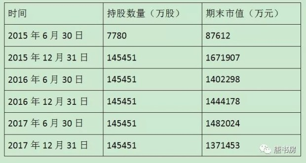
很清楚吧？追高买进（2015年上半年买进价约等于2014年下半年卖出价），套牢，加仓摊薄成本，又套牢，然后死抗三年，至今没有解套，合计造成33亿损失（分红和借款利息都考虑）。三年累积亏损，一年释放，要烂就烂一年，以求来年低基数，这财技赤裸裸地没有任何技术含量。
买进后有赚，跑的比兔子还快，3%不到就闪人了；套牢就加仓，而且是融资加仓。敢亏不敢赚，常见的韭菜风格！加一个上市公司光环，这个炒股账户居然有人愿意原价甚至溢价买进，然后委托一个不认识不了解的人“炒股”，自己还没有任何发言权，穿透想，是不是很奇怪？
类似雅戈尔这种以炒股为业、且有玩弄财技前科的多元化公司，规避其实并不困难。只要能相对客观地去面对财报披露的数据，肯坐下来算一些小学数学题，足矣。
真正困难的东西，是如何防备自己欺骗自己、先看好甚至先买入再找买入或持有理由的心态。就譬如，就在雅戈尔计提33亿公告发布后，仍然有人意淫未来将计提转回，增加报表净利润。在《手把手教你读财报》的83页清楚地写着，股票的减值损失，即便未来有条件做转回，也只能转回资本公积（现在统一归入其他综合收益），不改变利润表利润数据。这种转回增加净利润的春秋大梦，除了麻醉自己之外，没有别的用处。
本周，还爆了一颗更吓人的地雷——乐视网，巨亏116亿。过去10年，乐视累计报表“盈利”22.3亿，今年一次性亏损额达到过去十年“盈利额”的五倍有余。这曾是一家光芒万丈的明星公司，江湖人称神视网，口号是“一起窒息”或“超级XX颠覆普通XX”。最牛的时间，是2015年上半年，股价从年初的32元出头，飙升到当年5月的最高价179元，5个月6倍，风头无两。
而老唐恰好在2015年4月1日和4月8日分别写了两篇文章，提示乐视网用少数股东损益刻意做高上市公司净利润的财技，以及乐视网荒诞的收购把戏。文章在老唐的雪球置顶帖里，没看过的朋友可以自己去翻看。
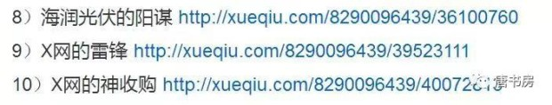
谈及乐视这两篇文章，不是为了吹嘘自己有多神。恰好相反，在老唐发表了这两篇文章后，短短23个交易日，乐视股价又翻了一倍，耳光扇的啪啪作响。看穿乐视的递延所得税以及神收购把戏，并不难，所需专业知识也就是《手把手教你读财报》水准，或者一名初级会计水准。然而，具备这些知识的人，照样有很多深陷其中，被炸的血肉模糊的。专业知识不是避雷第一要诀，真正的避雷要诀是正确理解“赚钱才是硬道理”。
赚钱才是硬道理，是网上经常能遇到的怼人口诀，与之相似的大概还有“你负责正确，我负责赚钱”、“你越来越聪明，我越来越有钱”等等。这些话大体的含义就是：管它投资投机，管它因为什么，只要能赚到钱就是对的，买的股票涨了才是最重要的，净值增长足以粉碎一切疑问……
听上去很有道理，我们是来股市赚钱的，不是比谁讲的更有道理，也不是比谁的理论更正统。然而，这种认识，忘记了“如果你手持火把穿过炸药库，即使毫发无损，也改变不了你是一个蠢货的事实”，必将导致投资人妄图在错误的逻辑中，依赖侥幸获取利润。于是踩中地雷也就成了迟早的事，而且越晚踩中危害越大：越晚踩中，投资额越大，损失额也越大，压力自然越大。更要命的是，投资增长的绝密武器「时间」也被浪费了。
巴菲特曾强调过：“投资很简单，但并不容易”。不容易的核心原因，是因为市场经常会重奖错误的行为，以鼓励他们下一次慷慨赴死。而坚持做/且只做/正确的事，并愿意为此放弃市场先生颁发给错误行为的奖金，这才是避雷大法之核心要诀。什么是正确的事？投资收益主要来源是企业的成长，这就是正确的事。一旦你以这种思路考虑问题，绝大多数雷区，你根本不可能踏入，甚至看，都只会远远地躲着看。
新股是1月31日摇奖的养元饮品，发行价高达78.73元。陌生的名字、奇高的价格，驱动老唐随手翻了翻相关资料——很可惜，翻了也是白翻，人品值累积不够，大肥肉老唐没摇中。翻资料才发现，这家公司的名字虽然陌生，但说起他家产品「六个核桃」，估计绝大多数人都听说过。
老唐的习惯是新上市的股票，三四年内我基本不会关注，未满五年我不会投资（老唐有位线下好友，雪球@刘马克 更严格，上市满十年的公司才看）所以，这里不准备聊它是否有投资价值，而是由养元饮品的历史渊源，引发出对人的主观能动性的伟大力量的感叹。
这家公司成立于1997年，原名河北元源保健饮品公司，是河北老白干集团下属的一家国有企业。从成立开始，这家企业就没有昌盛过，到2004年，企业已经濒临破产。2004年，老白干集团将公司作价309.49万元，整体转让给原管理层及员工共计58人，企业脱离国有身份，成为了一家私企。企业还是那个企业，人还是那些人，也没引进什么海归海带海龙王，论说起来，没了国企身份，恐怕获取资金支持、政策支持还要困难一些了。但就是这班人，买下公司次年就搞出了明星产品六个核桃，硬是扛着原来濒临破产的公司，走到今天。
以IPO披露的经营数据看，2016年，养元饮品营业收入89亿元，净利润27.4亿元。27.4亿净利润水平，在整个A股的食品饮料行业里，可以排第七，仅次于茅台、五粮液、洋河、伊利、双汇、海天，已经超越老牌名酒企业泸州老窖（19.3亿）了。而此时，原来老东家老白干旗下上市公司老白干酒（老白干集团的核心资产）2016年的营收才24.4亿，净利润仅1.1亿，营业收入总额还不及自己抛弃的养元饮品净利多。再对比同行，同样主打植物蛋白饮料的老大哥承德露露，2016年营业收入也只有25.2亿，不及养元饮品的三成。净利润4.5亿，更是只有养元的16%左右。
要知道就在养元饮品前身濒临破产的时候，承德露露就已经是植物蛋白饮料的巨无霸了。2004年，养元还是一个价值0.03亿的包袱时，露露的营收已近10亿，净利润5000万，市值数十亿了。当时的露露，一定是买下河北元源保健饮品公司的那58名员工心中神一样的存在。而今天，他们已经远远超越了心中曾经的神，开始挑战更高的梦想，这就是人的力量。这个案例的有趣之处在于，企业只是卖给了原来本就实际经营公司的管理层和职工，就带来了如此天翻地覆的变化，变量似乎只能从人的主观能动性上去找了。
由此想到投资领域著名的船与船长谁更重要的问题。记得巴菲特好像表述过，首要是选行业选企业，要选那些白痴也能经营好的企业。但是，你看他投资的企业以及投资的理由，似乎船长（管理层）的重要性，一点儿也不会低于船（行业前景和企业竞争优势）。
有名的几个案例，比如著名的B夫人经营的家具商场。很明显这家企业的核心经营力就是来自人，来自这名个头矮矮的老太太。一个有力的例证就是，老太太把企业卖给巴菲特六七年以后，因为和孙子不和，一怒之下耍小孩脾气，在街对面开了一家竞争店。最终巴菲特不得不再次出钱收购了新店，然后学乖了，让97岁高龄的老太太签下禁止同业竞争协议，哈哈。这不是就证明收购主要冲着船长去的吗？
再比如巴菲特1986年收购的费切海默兄弟公司（海德曼家族经营的一家制服生产和销售企业），他在1988年致股东信里的原文写到：海德曼家族就像B太太的辛辛那提版。不管是家具制造业还是服装行业，它们都不是很有吸引力的产业，只有出色的管理者才能让股东获得良好回报。
再比如对赫尔兹伯格钻石商店的收购，巴神在1995年致股东信的原文说：杰弗里（杰弗里.考门特，赫尔兹伯格钻石商店的CEO）是我们喜欢的经理人。事实上，如果这项事业不是由杰弗里来管理，我们可能就不会买下它。
谈及对吉列的收购时，巴菲特写到：“无论怎样强调一个CEO对公司的重要性，都不会过分。”在收购一家小型工具生产商艾斯卡公司的时候，巴菲特说“这项事业没有任何神奇之处，只有靠优秀的管理才能赋予其价值”。
还有，巴菲特对汤姆.墨菲的盛赞：汤姆墨菲不但是伟大的管理者，也是那种你会希望将自己女儿嫁给他的人。没有与汤姆.墨菲的相互敬重，很可能根本不会诞生对大都会广播公司的收购。
……如此等等，还有很多。
这些案例一一展示了，在投资当中人所起到的关键性作用。因此，我对巴菲特投资体系里的船与船长的重要性排序是这样理解的：首选船好+船长优秀的；其次，如果二者不能兼得，选择好船+普通船长；再次，如果船很普通，那么就一定要具备非常非常非常优秀的船长，才使得该企业具备投资吸引力；最后，其他船与船长组合，不用看了。
人的主观能动性激发，通常而言，要么由某种利益激励，要么是优秀者的一种习惯。养元饮品职工的主观能动性明显来自前者，而巴菲特似乎更注重后者，他投的很多企业、称赞的很多CEO，绝大部分都已经超越了为金钱而努力的阶段，往往是一种优秀者的秉性。努力在他们身上是一种不需要外力的常态化的东西。
从宏观角度分析股市基本=算命。热热闹闹听半天，毫无价值，正如巴神所言：「关注宏观经济形势或者聆听他人有关宏观经济或市场走向的预测，都是在浪费时间。实际上这样做还会很危险，因为它可能模糊你的双眼，反而看不清正在发生的事情」。
要想成为富人，就要按照富人的思维模式去考虑问题。不是只有现金才是财富，逻辑和数据都已经证明“长期看股权一定跑赢现金或债券的”，所以一个合格的投资者在安排好近期流动性所需资金后（以避免被迫出售股票），其他财富，要尽最大可能拒绝以现金形式存在。
到今天为止，2018年前26个交易日，上证综合指数上涨约2%，沪深300指数上涨约3%，老唐的总换手仓位约3%，约97%仓位呆坐不动，总市值增加约1%（落后于指数）。以起点和终点数据看，是个相当平静的时间段。然而这2%的涨幅约63个点，不是26天里每天涨2个或3个点，而是用先大涨280点再大跌217点完成的，于是市场参与者就血流成河。这是Mr.market对「折腾」的警告，希望你我都听到了。
如果腾讯和海康股价继续大幅下跌，老唐很可能还会继续买入。另外，宋城演艺距离去年初设定的买入价240亿市值也不远了，貌似也会有希望买到——资金来源都将是卖出国投。其他公司暂无买卖考虑。
早上醒来，看见手机弹出新闻说昨夜美股继续暴跌千点，第一反应想到今天可能又是调仓好机会。让我们看看今天我大A会否跟着美帝暴跌，如果有，或许我会按照计划做些仓位微调。